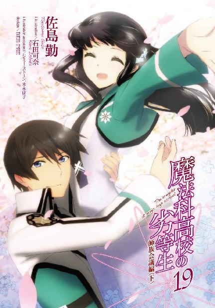

| 魔法科高校の劣等生(19) 師族会議編〈下〉 (電撃文庫) | |
| 佐島 勤 | |
| (2016) | |

本書（電子版）に掲載されているコンテンツ（ソフトウェア／プログラム／データ／情報を含む）の著作権およびその他の権利は、すべて株式会社ＫＡＤＯＫＡＷＡおよび正当な権利を有する第三者に帰属しています。
法律の定めがある場合または権利者の明示的な承諾がある場合を除き、これらのコンテンツを複製・転載、改変・編集、翻案・翻訳、放送・出版、公衆送信（送信可能化を含む）・再配信、販売・頒布、貸与等に使用することはできません。
［11］
駅から一高へ至る通学路と交差するコミュニティ道路で、人間主義者という名のならず者が一般人では手に入れることができないはずのアンティナイトを使って、魔法の発動を妨害する想子波を放った。
キャスト・ジャミングのノイズに、水波の表情が歪む。
胸を押さえ、前のめりになって俯く水波。
細い肩を上下させ、荒く浅い息を繰り返す。
彼女の苦しむ姿は深雪に五年前の、あの夏の日を鮮明に思い出させた。
二〇九二年八月十一日、大亜連合による沖縄侵攻が起こった日の出来事。
避難をしたはずの国防軍の基地の中で、反乱兵の襲撃を受けて起きた、あの事件。
敵の一人だけを「止めて」、敵の全員を「止めて」しまわなかったが為に、穂波が撃たれ、母が撃たれ、深雪自身も撃たれて死にかけた、あの時の記憶。
三人とも一旦は達也の「再成」によって助けられた。だが、穂波は結局帰らぬ人となった。
その穂波とそっくりな少女が、彼女を苦しめたキャスト・ジャミングを浴びて、同じように苦しんでいる。その姿を目の当たりにして深雪の中にあの日の光景が一瞬の内に、次々と再生される──。
「......許さない」
怒りに震える声で深雪が小さく呟いた。
──またしても「彼女」を苦しめるのか。
──またしても「彼女」を奪おうというのか。
──そんなことは許さない。
──今度こそ、止めてみせる。
──今度こそ、全員を「止めて」やる。
過去と現在が二重写しとなった世界の中で、深雪は現在の自分を見失っていた。過ぎし日の後悔と怒りに駆られ、深雪は己が力を解放しようとした。
「深雪様、お止めください！」
しかし苦痛の中から声を振り絞った水波の叫びが、深雪の魔法を、主の暴走を止めた。
「達也様のお言い付けに背くおつもりですか！」
我を忘れ自制を忘れた深雪の心に、達也の言葉が蘇る。
──四葉家の次期当主と明らかになったお前が、魔法師でない市民相手に魔法を使うのはまずい──
達也にそう言い付けられたのは、一昨日の夜のことだ。深雪にとって何よりも優先する達也の命令は「あの日の光景」の記憶をも圧倒して彼女の心に響き渡る。
精神を凍りつかせ心も身体も「止めて」しまう深雪の魔法「コキュートス」が、達也の名の下に発動寸前で霧散した。
「......水波ちゃん？」
深雪は悪夢を引きずる不安混じりの声と表情で、水波の名を呼んだ。
「......私は大丈夫です、深雪様」
水波は無理をして笑みを浮かべ、危ういところで自分を取り戻した主を宥めた。
キャスト・ジャミングの影響で揺らぎ始めた障壁を、「減速」を放棄し「遮断」に集中することで立て直す。
殴りつける男たちの手が、透明な壁にぶつかって止まる。それは、か弱い少女にとって本能的な暴力に対する恐怖を呼び起こす光景だったが、水波はそれを無視して、額に脂汗を滲ませながら気丈な目を深雪に向けた。
自分なら大丈夫だと、だから早まった真似はするなと、水波の瞳は深雪に訴えかけている。
その眼差しに、深雪は「もう大丈夫」というメッセージを込めた笑みで応えた。
深雪が左手に持っていたＣＡＤを懐に戻す。
「深雪先輩......？」
泉美が想子のノイズに顔を顰めながら、深雪に訝しげな声を掛ける。
深雪がキャスト・ジャミング如きに抵抗できないはずはない。
泉美は理由も無くそう確信していた。
残念ながら泉美自身は魔法の行使に著しい困難を覚えている状況だが「敬愛する深雪先輩」ならこの程度の雑魚は簡単に蹴散らせるはず。そんな確信を込めて、泉美は深雪の顔を仰ぎ見た。
深雪が「安心して」という眼差しで泉美に頷いてみせる。その後、彼女は目を伏せて両手を胸の上に重ねた。
深雪の身体が、柔らかな輝きを放ち始める。
人間主義者を名乗る無頼漢には見えない光。
魔法資質を持つ者にしか見えない非物理的な光、想子光が深雪を中心に広がっていく。
その光には「何かに働き掛ける力」が存在していなかった。その意思が込められていない。深雪が放っているのは何の性質も与えられていない、言うならば「無垢なる想子光」だ。
干渉力を乗せていない想子は事象にも魔法にも干渉しない。その輝きは水波の障壁を邪魔することもなく、彼女たちに狼藉を企てる男たちを害することもなく広がっていく。
自分を包み込む優しい光の中で、水波はふと気がついた。キャスト・ジャミングのノイズがもたらす苦痛が和らいでいることに。
キャスト・ジャミングは元々魔法の発動を妨げるだけで、魔法師にダメージを与えるものではない。だが想子感受性が高い魔法師にとって、キャスト・ジャミングのノイズは吐き気や目眩を引き起こす騒音と同じ効果を持っている。
いや、魔法式の作用経路を塞ぐというノイズの性格を考えれば単なる騒音以上だ。作用経路は発動対象にのみつながるものではなく、発動元、即ち魔法師の無意識下に存在する魔法演算領域にもつながっているのだから。
特別に想子感受性が強くなくても、魔法を発動する瞬間は経路が開いているのでノイズによる影響が避けられない。障壁魔法のように短いサイクルで更新を続ける必要がある（擬似的な）常駐型魔法を使用中の魔法師は、キャスト・ジャミングによるダメージを特に受けやすい。
そのキャスト・ジャミングのノイズによる心身の不調が改善しているのを水波は実感した。影響はまだ続いているが、不快感は半分近くに減っていた。
「深雪様......？」
水波が深雪の顔を、姿を、改めて見詰める。この変化をもたらしたのは彼女の主。他に心当たりは無かった。
「深雪先輩、凄いです！ 濃密な想子のカーテンでジャミング波を弱めているのですね！」
泉美が漏らした感激の声に、水波も納得を覚えた。干渉力を伴わない想子の雲が魔法を妨げることはない。だが同じように事象干渉力を持たないキャスト・ジャミングのノイズに対しては厚いクッションの役割を果たしているのだ。
泉美の声は、無頼の男たちにも聞こえていた。
「馬鹿な！ キャスト・ジャミングが通用しない魔法などあるはずがない！」
人間主義者のリーダーが焦りを浮かべて叫ぶ。それが己の無知を、曝しているとも知らずに。
彼のセリフは、泉美と水波にとって滑稽に聞こえるものだった。そう感じたことを、二人は隠し切れなかった。あるいは、隠そうともしなかった。
水波は微かに笑った。彼女の笑みは意図したものでは無かった。それに対して泉美は、はっきりと笑った。そこに意識的な嘲りを含ませて。
確かにキャスト・ジャミングはほとんどの魔法に対して有効だ。だが、深雪が今見せている妙技は、魔法ではない。いや、想子を体外に放出しコントロールする技術は無系統魔法に含まれるから、その意味では魔法であるとも言える。
魔法であって魔法ではない力で、魔法に対する妨害手段を妨害する。
深雪が如何に高度な技を披露しているか、深雪がどれほど素晴らしい魔法師か、魔法を理解しようとしない邪教の徒に理解できるはずがなかった。
そして、キャスト・ジャミングが通用しない魔法もある。
例えば、魔法の発動を妨害する想子波の構造を分解してしまう魔法。
突如として、アンティナイトが放つ想子のノイズが消えた。不規則に発せられる想子波は、均質な想子の細波となった。
「お兄様！」
深雪が目を見開き、振り返る。
そこには達也が、能面の如き無表情の中、ただ両の眼のみ爛々と光らせて立っていた。
◇ ◇ ◇
この日、捜査に行き詰まりを覚えていた達也は、もう一度テロの黒幕、顧傑の足取りを追ってみようと鎌倉へ向かっていた。
今日はミーティングを欠席すると克人に連絡してある。鎌倉の後は座間に赴き、手掛かりが残されていないかもう一度探してみる予定にしていた。
顧傑を本気で探す気なら、もっと効率的で確実な手がある。
達也は一度だけとはいえ、顧傑を「視て」いるのだ。
ただし彼は、千里眼の異能者ではない。自分と関連性が薄い存在を見つけ出すことは、得意ではない。
距離的に離れている上、因縁も大したものはない。弟子の周公瑾が敵対していたことは、顧傑自身と達也の関連性を深めることにはならないのだ。真夜が襲われたことも、達也にとってはそれ程大きな意味を持たない。その程度のことで因縁を作ってしまっては、彼の視界は溢れかえる情報で塞がってしまう。
たった一度「眼」にしただけの相手を追跡する為には、その標的に知覚を集中しなければならない。他の監視対象から「眼」を外さなければならないのだ。
それは即ち、深雪から「眼」を離すということ。
達也にとり、顧傑にそこまでの価値は無い。
ただ、何か顧傑と深い関連性のある物が残されていれば、それを手掛かりに情報を追い掛けていくことができる。そんな手掛かりが残されていたなら、とうに他の捜査員が見つけ出しているだろうが、わずかな可能性を追いかけなければならない程、今の状況は厳しかった。
しかし彼は、鎌倉へ向かう途中で引き返した。
自宅へ、ではなく学校へ。
彼に未来を知る力はない。彼の「眼」は、現在とごく近い過去──具体的には二十四時間前まで──しか視ていない。
だからこれは単なる勘だった。──深雪に、危害が加えられようとしているというのは。
だが達也に、それを無視するという選択肢は無かった。深雪の身の安全に比べれば、顧傑のことなどどうでもいいのだから。
彼はバイクの運転モードをセミオートドライブに変えて、いつでも深雪の助けに入れるよう視界の半分を情報の次元に移しながら一高へ急いだ。
◇ ◇ ◇
そして今、達也の目には深雪を閉じ込めている暴漢の群れが映っている。
達也はバイクをきちんと駐めてヘルメットを脱ぎ、ゆっくりと息を吐き出した。
そうやって気持ちを落ち着けなければ、あの不埒者どもに対する殺意を抑えきれなくなる恐れがあった。
深雪に危害を加えようと意図するなど、断じて許せることではない。その相手がそんなことを考えていると分かっただけで、消してしまいたくなる。
本当に危害を加えられる可能性が認められたなら、達也は躊躇わないだろう。証拠を残さず人間を消滅させることが、彼には可能なのだから。
たとえアンティナイトを使っても、深雪にはちょっとした不快感以上のものを与えられないと分かっているから、心のトリガーを引かずにすんでいるだけだ。水波が苦しめられているという事実は、殺意に結びつく程のことではなかった。
だからといって、年下の女の子が苦しんでいる姿を愛でるような悪趣味を達也は持ち合わせていない。それが家族に近しい存在であるなら尚更だ。彼は水波を苦しめているキャスト・ジャミングを消去すべく、分解魔法を行使した。
両手首にはめた円環形態のＣＡＤに頼るまでもない。「分解」は彼が二つだけ自由に使える魔法の一つ。魔法師が照準を定める際に多用する「指差す」「腕を伸ばして向ける」といったジェスチャーも必要としない。ただ意識の焦点を合わせるだけで、魔法が対象を捉える。
術式解散。
情報体の構造を分解する魔法が、魔法を妨害する想子波の複雑な構造を消し去る。
構造を破壊されたジャミング波は、単調な細波となって虚しく広がり、消えて行く。
「お兄様！」
人垣の中から、自分を呼ぶ妹の声が聞こえた。
人垣の隙間から、目を見張って驚いている深雪の顔が見えた。
何をそんなに驚いているのだろう、と達也は少し可笑しくなった。
彼が深雪の危機に、それがどんなに小さなものであっても、駆けつけないはずはないのに。
だが彼の意識はすぐに、怒りで塗りつぶされた。
深雪の顔には、微かに、だが紛れもなく、恐怖と不安の表情があった。
高校生の女の子が、見知らぬ男に取り囲まれ閉じ込められているのだ。力の有無に関係無く、恐れを懐くのは当然だ。
彼は人垣を見据え、息を吸い込んだ。
◇ ◇ ◇
「どけ！」
達也の口から、鋭い怒声が発せられた。
その声に込められた意志の力に男たちがよろめき、人垣が割れる。
精神に干渉する魔法による現象ではない。
自分たちより遥かに強い生物の咆吼に、男たちの身体が心より先に反応したのだ。
達也が真っ直ぐ、足早に歩いてくる。
男たちの壁をかき分ける必要すら無い。
誰も達也の邪魔をしない。手を伸ばそうとさえしない。
「水波」
魔法障壁の前に立ち止まり、達也が水波の名を呼ぶ。
「はい、達也様」
水波が障壁を維持したまま彼の声に応えた。
「その障壁を張った状態で移動できるか？」
「可能です」
水波にそれが可能であることは達也も知っているはずだった。水波は達也が自分のコンディションを気遣って訊ねたのだと理解した。
「そうか。では三人とも、そのままついてこい」
達也が振り返る。彼が左右を見回すと、その視線に押されて人間主義者は一歩、二歩と後退った。
「な、何をしている！ ジャミング班、もう一度だ！」
アンティナイトの指輪を与えられていたメンバーは、さすがに彼らの中でも選りすぐられた精鋭たちだったのだろう。リーダーの裏返った声に応じ、達也に折られた気力を奮い起こしてアンティナイトに想子を注ぎ込み、キャスト・ジャミングを放つ。
しかし想子のノイズが形になった時間は、半秒に満たなかった。
達也は煩わしげに振り返っただけだ。手を振ることすらしていない。
それだけでキャスト・ジャミングは効力を失った。
あらゆる魔法の発動を阻害する想子波のノイズ。
そんなものが偶然に、無秩序に形成されることは無い。
キャスト・ジャミングのノイズは複雑な法則に従って形作られる想子波のパターンだ。
形がある限り、達也の「分解」からは逃れられない。それがむき出しの情報体であればなおのこと。魔法師を無力化するキャスト・ジャミングは、達也にとって切り札どころか牽制にすらなり得ない。
「馬鹿な!?」
指輪の担い手が狼狽して叫ぶ。
「怯むな！ もう一度だ！」
狂信者のリーダーが無意味な命令を繰り返す。
達也は最早、振り返りさえしなかった。
魔法を妨害するノイズが作用した時間は、やはり半秒に満たない。
キャスト・ジャミングはノイズを放出し続けるものではなく、一旦放ったノイズが減衰する前に繰り返し発振するものだ。
アンティナイトは注入された想子をジャミング波に変換して放出する性質を持つ。しかし飛行デバイスのように機械的な補助無く想子を注入し続けることは、平均的な魔法師にも難しい。キャスト・ジャミングが断続的に発振されるものとなるのはその為だ。
想子の扱いに慣れていない非魔法師にとっては、有効なジャミング波を作り出すだけの想子を注入すること自体、かなりの精神集中を必要とする。
ノイズを、放出直後に無効化される。
それを二度も繰り返されて、すぐに三度目を可能とするほど、この若者たちの練度は高くなかった。
達也は足を止め、三人を先に進ませる。
そこは既に、人間主義者が作る人垣の外だった。
「水波」
「はい、達也様」
「ご苦労だった。もう障壁を解いても良いぞ」
水波が達也の言葉に従い、障壁魔法を解除する。
「深雪」
達也に名前を呼ばれて、深雪が「はい、お兄様」と神妙な声で答えた。
「二人を連れて学校に戻ってくれ」
「かしこまりました」
深雪は達也へ淑やかに一礼し、二人の下級生の背中に手を当てて一高への帰路を促す。
ここに至り、人間主義者のリーダーが我を取り戻した。
「な、何をしている！ 同士たちよ、邪教の徒を逃がすな！」
しかしそれは、彼らにとって不幸な結果をもたらしただけだった。
達也を無視して──彼を避けて、人間主義者の群れが走り出す。
しかし、三歩以上走って前に進めたものはいなかった。
男たちの数は合計十五人。その全員が一斉に駆け出したわけではなかった。この段階でスタートを切っていたのは三分の一の五人。そして今、二本の足で立っているのは、まだスタートを切っていなかった残る三分の二だ。
監禁暴行未遂犯（監禁については現行犯とも言える）の三分の一を転倒させたのは言う迄もなく達也の仕業だ。だがこれは、彼が魔法を使った結果ではない。
最初の一人は一歩を踏み出したところで、鳩尾に拳を打ち込まれて悶絶した。
二人目は二歩目を踏み出そうとして、こめかみに掌底を叩き込まれた。
三人目は二歩目を踏み出した瞬間、首を後ろから摑まれて背後に引き倒された。
四人目は三歩目を踏み出そうとしている最中に顎先を拳で打ち抜かれた。
五人目は三歩目を踏み出したと同時に手首を取られ、空中を前へ一回転した上で路面に落とされた。
流れるように繰り出された達也の技に、誰一人、立ち上がるどころか起き上がることすらできない。
「貴様！ そんな暴力が許されると思っているのか！」
暴漢の親玉が、達也に身勝手な糾弾の叫びをぶつけた。
達也は敵意と挑発と嘲りで構成された笑顔でこれに答える。
「女性に対する暴行を未然に防いだだけだ。そいつらが一高の女子生徒に襲い掛かろうとしていたことは、街路カメラのデータが証明してくれるだろう」
達也がわざとらしく街灯に取り付けられたカメラへ目を向けた。そして嘲笑の色合いを濃くした笑みを人間主義者のリーダーへ向ける。
遠目にもはっきりと分かるほど、リーダーの顔が赤みを帯びた。
無論、自らの言行を省みて羞恥を覚えたからではない。逆上によるものだ。
狂信者はそれに相応しく狂気に目を血走らせ、達也を指差して喚いた。
「まずこいつからやってしまえ！ 神罰だ！」
おおっ！ と彼の手下が気勢を揚げた。いや、奇声を上げた、か。
彼らの肉体は己が達也に敵わないことを覚って、自ら退いた。
しかし狂信に毒された彼らの心は、肉体が発する恐怖という名の危険信号を正しく認識することができなくなっていた。
「罪を知れ！」
最前列に立っていた青年が達也に殴りかかる。その青年の手には伸展済みの伸縮警棒が握られていた。
振り下ろされる青年の右手に、達也の左手が内側から打ち込まれる。伸縮警棒を握る指を手刀が強打する。
「ぐあああぁぁ......！」
青年の手から警棒が飛んだ。彼は右手を抱え込み、前のめりになって苦鳴を漏らす。
達也の右手が青年の顔に伸びる。目にも留まらぬパンチ、ではない。そのスピードはむしろ緩やかだ。
側面から達也の親指が青年の耳のすぐ下に突き立てられる。
苦鳴が止み、青年の身体が崩れ落ちた。
「警告する。これ以上攻撃を続けるなら、手加減はできない」
足元に崩れ落ちた青年には目もくれず、達也はならず者どもを見回しながらそう言った。
挑発するつもりで告げたセリフではない。言葉どおりの警告だ。
深雪の安全が確保されたことで、達也は冷静になっていた。彼の方から積極的に暴力を振るう気は無くなっている。
もっとも、だからといって暴力自体を忌避するつもりはない。攻撃されれば、確実に相手を無力化する。このセリフはこの状況を記録している街路カメラに向けたアリバイ作りという意味合いが強かった。
しかし、言われた方は挑発と受け取った。
「ふざけるなぁ！ たかが道具の分際で！」
狂態を示す人間主義者のリーダー。しかし彼の仲間たちは、こっそりと目配せし合っている。ここに至り暴力に対する恐怖が盲目的な熱情を上回りつつあるのだ。
それでも彼らはまだ、この場を去ろうとしない。まだ完全に目が覚めてはいない。魔法師が相手なら暴力に訴えても許されるという狂気から解放されていないという意味ではなく、単純な暴力において自分たちが弱者だという事実を正確に認識できないという意味で、正常な判断力を回復するに至っていない。
この膠着状態は達也にとって、多分、有利に作用する。彼はここに来る途中、交番の前にも人だかりが形成されていたのを見ている。おそらくは、警官の足止めだろう。しかしそろそろ、警察官が駆けつけてもおかしくない頃合いだ。
「もうすぐ警察が来るぞ。逃げたらどうだ？ 婦女暴行未遂の変態犯罪者」
達也はもう一度、警告を送ってみた。ただ今回は客観的に見ても、煽っているとしか思えない言い方だ。達也自身も、言い回しに気を遣う必要を認めていなかった。
狂信者は、あっさりと逆上した。
「この餓鬼ゃあぁ！」
奇声を発しながらリーダー自ら達也に殴り掛かる。
達也は彼がジャケットの内側から取り出した得物に目を細めた。長さ五十センチ程の平たいスタンウィップ。通電することで先端部に空中放電が起こるだけでなく、弾力が高まり良くしなる板バネ状の鞭になるが、スイッチをオフにした状態では革のベルトと同等の柔軟性を持ち、折り畳んだり腕や身体に巻き付けたりして目立たぬように携行することが可能だ。
これはエリカの実家が開発した棍刀（小太刀に変化する形状記憶合金製の棍棒）と時期を同じくして警察に採用された物で、まだ市販されていない。警察か納入業者とコネがなければ手に入らないはずだ。あるいは、警察官から奪ったか。
調べれば面白いネタが出て来そうだ。そんなことを心の片隅で考えながら、達也は振り下ろされたスタンウィップを躱した。踏み出す動作で身体を捻って、「敵」の背後に回り込む。
相手にしてみれば、得物が達也の身体をすり抜けたように感じたことだろう。
「こっちだ」
彼が達也の行方に気がつく前に、達也の方から青年に声を掛ける。
人間主義者グループのリーダーは慌てて振り返った。何もしないでいたら反撃される、と考えたのだろう。がむしゃらにスタンウィップを振り回す。
達也は腕を上げて鞭をブロックする、ふりをして当たる直前に腕を下げた。
元々スタンウィップが当たらない位置まで達也は下がっていた。無理な体勢から繰り出した大振りの攻撃が空振りに終わり、青年はバランスを崩し尻餅をついた。
達也の口から失笑が漏れる。それは決して、嘲笑ではなかった。少なくとも達也にそのつもりは無い。ただ余りの不器用さに、ついつい笑いがこぼれてしまっただけだ。達也に目の前の青年を殊更嘲る意図はなかったが、相手のプライドを慮って表情を取り繕う義理も無い。
人間主義者のリーダーが達也の失笑を嘲笑と解釈しても、仕方の無い部分はあった。
「殺してやる！」
だからといって、これは逆上しすぎだ。しかも青年の殺意は、言葉だけに留まらなかった。彼は役に立たない鞭を放り投げると、コートのポケットに右手を突っ込んだ。
彼の手がポケットから引き抜かれた瞬間、達也の右足が電光の速度で動いた。
狂信者の右手を、蹴り上げるのでは無く踏みつける。
コンパクトに振り下ろされた達也の踵が、狂信者の手から凶器を叩き落とす。
達也はその右足を路面に下ろすことなく、前に突き出した。
前蹴りを顔に受けて、人間主義者のリーダーは仰向けに勢いよく倒れた。そのままピクリとも動かないのは蹴りの衝撃によるものか、それとも倒れた拍子に後頭部を激しく打った所為か。
だが仮に打ち所が悪かったしても、警察が達也を責めることはないだろう。
道路には、狂信者が落とした上下二連バレルの小型拳銃が転がっている。二十一世紀末の今でも「デリンジャー」の名称が受け継がれている手の平サイズの拳銃、その最新モデル。無論、一般市民が持ち歩くことは言い訳の余地が無い違法行為だ。
路上の凶器を呆然と見ているのは、むしろ人間主義者たちの方だった。立って、意識がある者は、一様に「まさか」という顔をしている。彼らは、自分たちのリーダーが銃を携行しているとは思ってもみなかったのだろう。
達也が狂信者の残党へ振り返った。
彼らは戦意を失っていた。それだけでなく、逃走の気力も無くしているように見えた。
これでこの場は片がついたと判断して、達也は戦闘の構えを解いた。
しかしその直後、彼は表情を厳しく引き締めた臨戦態勢で振り返る。
「お兄様！」
通りの入り口からこちらを窺っていた深雪の警告を受けるまでもなく、彼は魔法発動の準備を終えていた。
人間主義者のリーダーが身体を起こしている。
彼は気を失っていたはずだ。そして今も、意識を回復しているようには見えない。
もっともそれは、瑣事だった。
達也が反応したのは、表面的な異常ではない。
虚ろな表情のまま前に突き出された人間主義者の両手の上には、活性化したＳＢ──所謂精霊が浮かんでいた。いや、この禍々しい紫炎には「精霊」よりも「邪霊」の名が相応しいと達也には思われた。
「深雪、隠れていろ！」
「はい！」
達也の叫びに従ってというより、その剣幕に押されて深雪が通りの角から引っ込む。
達也が右手を開いて突き出す。その手の平から想子の奔流が放たれた。
狂信者が両手に浮かべていた紫の炎が、想子の強風を受けて吹き消される。
術式解体。最強の対抗魔法の一つと呼ばれる無系統魔法を受けた、当然の結果だ。
「何っ!?」
しかし、驚愕の声は達也の口から漏れた。
狂信者の手に、再び邪霊の炎が揺らめいていたからだ。
術式解体で魔法式を吹き飛ばされた直後に、同じ魔法を再発動するのは決して不可能ではない。術式解体は高圧の想子流を叩きつけるだけのもの。その効果は想子流の放出が終わると共に終了する。魔法を打ち消す効果が持続するわけではない。
だが魔法を再出力する為には術者の中で準備が必要だ。どれほどスピードに優れた魔法師であっても、魔法式を構築する過程は省略できない。起動式を必要としない「超能力者」も魔法式が無くては事象を書き換えられない。
そのプロセスが、この男の中に視えなかった。
（こいつの力じゃない。第三者からＳＢが供給されている）
精霊、いや、邪霊は別の術者から物理的な距離を超えて、意味のつながりを通って青年の手元に届けられていた。それはつまり、反魔法主義者が古式魔法師の手先になっているということだ。もしかしたら本人も知らないうちに術を掛けられたのかもしれない。むしろその可能性が高いだろう。
達也は邪霊の炎を再度吹き消す──ことはしなかった。古式魔法師が首謀者と見られるテロ事件を受けて魔法師に暴力を向けた者が、古式魔法師の影響下にある。これが偶然であるはずはない。達也はこの炎を足掛かりに、術を放った魔法師の本体へ「眼」を凝らした。
「魔、魔法使い!?」
「リーダーが......、邪教徒!?」
青年の手の平に浮かぶ火の玉を見て、彼の仲間が愕然とした声で呻いている。
今度の炎は達也だけに見えるものではなかった。青年が呼び出した──あるいは押し付けられたＳＢは紫の炎として可視化している。炎の色が黒っぽく濁っている所為でその下にある彼の手がどうなっているのかは分からない。もしかしたら見えているだけでなく、「炎」としての実体も持っているかもしれない。
「うっ......うわあぁ！」
仲間であるはずの若者たちが、蜘蛛の子を散らすように逃げていく。
達也は彼らを追わなかった。というより、追う必要が無かった。
その直後、紫炎が弾けた。
大きな炎が小さな火の玉になって飛び散るのではなく、十数個に増殖した同じ大きさの炎弾が青年の手の上からばらまかれた。
炎弾が建物を貫通することはなかった。壁だけでなく窓のガラスに当たった紫炎も、幻のように何の痕跡も残さず消え去った。
しかし、炎の弾を浴びた街路樹は黒く焦げて今にも折れそうになっていた。
いや、「焦げた」という表現は、適切ではないだろう。
紫の炎に曝された箇所は、枯れて黒く朽ちている。まるで、高熱を加えられたのではなく、命の熱を奪われたかのような傷痕だった。
では、人間がこの炎を浴びるとどうなるか。
達也は自分に向かって飛んでくる炎弾を術式解体で撃ち落とした。自分に命中するものだけを。術者の正体を探ることに意識を割きすぎて、魔法の無効化が後手に回ってしまったのは否定できない。
少なくとも結果を見る限り、紫炎は狙いを定めて放たれたものではなかった。撃ち落とされなかった炎弾は達也の左右を通り過ぎ、頭上を飛び越えていく。その一部は青年の仲間──あるいは手下──にも降り注いだ。
断末魔と表現しても大袈裟ではない悲鳴が幾つも上がった。
達也は振り返らなかったが、彼の背後では人体が局所的に干からびるという怪現象が発生していた。乾燥してミイラ化したというより、紫炎を浴びた部分だけ急激に老衰が進行したような感じだ。
その姿を見たわけではないが、この魔法を放置するのは危険だという認識は達也にあった。いささか手遅れの感はあったが、彼は術者の逆探知を中断し術式の破壊へ意識を切り換えた。
この魔法が人間主義者のリーダーから繰り出されているなら、彼の意識を刈り取るだけで事は済む。だがこの青年は魔法の発射台にされているだけだ。それに、既に失神している人間から意識を奪うことはできない。命を奪うことはできても。
多分、それが一番手っ取り早い方法だ。もしかしたら死体を操って魔法を中継させることもできるのかもしれないが、達也の殺人手段は人体を塵に変えてしまう。死体は残らない。
だが今は、その手段を選べない。幾ら何でも過剰防衛になってしまうし、マスコミを無用に刺激することになる。
（......紫炎の魔法を操っている術者は、あの男を中継しなければこの場にＳＢを放つことができない）
もし隠れている場所からこの一帯へ自由に炎弾を放つことができるなら、わざわざあの青年だけを発射台にする必要は無い。他の狂信者も使って混戦状態を作り出せば、もしかしたら達也にダメージを与えることができるかもしれないのだから。
（何か、あの男を使わなければならない理由があるはずだ）
──例えば、中継点とする為の目印が刻まれている、とか。
達也はそう考えて「眼」を凝らした。
（邪魔だ）
もう一度、術式解体で青年の手の上に揺らめく炎を吹き消す。
すぐに紫炎のＳＢ魔法は再発動された。
（──見つけたぞ）
刻印は青年の手の中にあった。手の甲から手の平に貫通して、想子で描かれた紋様が浮かび上がっている。一瞬だけでも炎が消えたことで、その下に隠れていた魔法中継用の仕掛けが達也の「眼」に露わとなったのだ。
肌の色に紛れる顔料で手の甲に彫られた刺青。達也が知る刻印魔法のパターンとは異なるが、想子を流し込むことによって魔法的な効果を発揮するという性質は同じだ。
こういう工夫はまだまだ古式魔法に一日の長がある。そういう場違いな感心を懐きながら、達也は刺青の一部に向かって「分解」を放った。
人の手で彫り込むのは不可能と思わせる複雑な刺青の中心部から色素が剝がれる。分解魔法により皮膚（真皮）から顔料が分離した。
正面から飛んでくる二発の紫炎を術式解体で撃ち落とす。それが最後の炎弾だった。魔法中継の目印になっていた想子パターンを狂わされてＳＢを遠隔操作できなくなったのだ。
刺青は人間主義者のリーダーを遠隔操作する役目も担っていたのだろう。路上に座り込んだまま上体を起こし、置物のように両手を前に伸ばした姿勢で固まっていた青年が再び仰向けに倒れる。
青年は起き上がってこない。どうやら今度こそ無力化できたようだ。
達也は十秒待って、緊張を解いた。
通りの角から「全員、動くな！」という警官の声が聞こえる。全てが終わってから来るなど役に立たない、とは思わなかった。少なくとも、達也は。
彼は左右の街路樹を見て眉を顰め、背後を振り返って狂信者たちの惨状に軽いため息を吐いた。警官が巻き添えにならなくて良かったというのが、達也の偽らざる感想だ。魔法科高校最寄りの交番に配属される警察官は全員が格闘訓練を積んだ魔法師だが、第一高校駅前交番の警官が今のＳＢ魔法を防御、あるいは無害化できたかというと、かなり疑わしかった。
達也は「動くな」という警告に従い、その場にじっと立っていた。今は、動く必要が無い。データを追いかけるのに身体を動かす必要は無い。
必要な情報は刺青＝敵魔法師の術式媒体を分解した際に読み取っている。達也は情報の次元で敵の足取りを追いかけていた。
魔法の効果は既に切れているが、術者と直接接触し魔法を中継した人間がすぐ近くに転がっている。魔法発動時点との時間的距離の近接と、魔法発動の媒体との空間的距離の近接。そして達也自身が魔法の標的になったという因果的距離の近接。
これだけの材料が揃っていて、術式そのものに関する情報も手元にあるとなれば、その主、即ち魔法師本人の情報を追いかけるのは達也にとって困難なことではない。
彼がここにいるのは深雪の身に良くないことが迫っているというあやふやな予感に従った結果だ。顧傑の捜索を意図したものではなく、手掛かりに遭遇したのは全くの偶然である。
だからこそ余計に、多少のリスクを負ってでも、達也はこの機会を逃すつもりは無かった。
現在、十師族のテロリスト捜索は手詰まり状態にある。四葉家も新たな手掛かりが得られず、内部に焦りが生じつつあった。
といっても真夜から催促があるわけでは無い。実を言えば達也もそれ程、というより全く焦りに囚われていなかった。本心では顧傑のことなど警察か情報部に任せておけば良いと考えていたし、反魔法主義運動については、ある程度仕方の無いことと考えていた。
魔法を使えない人間にとって、魔法が銃器や爆弾と同様に脅威であるのは否定できない事実だ。魔法師は魔法で武装している隣人であり、武器を持たない市民が自分たちの傍から遠ざけたいと思ってしまうのは人情としてやむを得ないと諦めていた。──つい先程までは。
だが反魔法主義者がその恐怖と反感につけ込まれて敵の魔法師の手先になるというのであれば、無視できない。本人に自分が「魔法師の手先」になっているという認識は無いかもしれないが、もしそうならば「手先」ではなく「道具」にされているだけだ。もっとも、「手先」だろうと「道具」だろうと敵視されている側にとり、本質的な違いは無い。
先程、魔法の中継装置となっていた人間主義者の手首には赤と青で縁取られた白いリストバンドが巻かれていた。達也とも縁浅からぬ反魔法主義国際結社「ブランシュ」の下部組織、「エガリテ」構成員の証だ。
ブランシュの背後に周公瑾がいて、周公瑾の背後に顧傑がいた。それは達也も色々なところから聞いている。
つまり命令系統だけを見れば、エガリテの構成員は最初から顧傑の手駒だったと言える。しかし個々の構成員は末端に近づく程、人間主義という思想に共鳴して──あるいは洗脳されて──組織に加わっていたはずである。このリーダーも人間主義の教義を叫ぶ姿は、演技には見えなかった。
やはり、騙されていたのだろう。おそらく本人が知らない内に邪霊を中継する刺青を彫られていたと考えるのが妥当だ。
この調子で非武装のデモ隊に混じって銃や魔法で武装した暴漢が深雪に襲い掛かってくると厄介だ。それが達也の懸念事項だった。自分が常に深雪の隣で目を光らせていれば恐れることなど何も無いが、顧傑を捕らえるまではそうもいかない。任務の為、深雪と別行動する時間がどうしても生じてしまう。
テロリストを退治する任務に従事する為、自分の愛する者がテロに曝される脅威に怯えなければならない。相手がテロリストに限ったことではなく、犯罪組織が相手でも、大きく言えば内戦でも、国家間の戦争でも同じ皮肉が生じる。戦争とテロの違いは、原則として非戦闘員を直接の目標とした攻撃が禁じられているかどうかだけだ。近代になって戦闘員と非戦闘員を区別するルールが生まれたから、テロと戦争が別のものになったと言っても良いかもしれない。そのルールが遵守されているかどうかは別にして。
だからといって、達也に顧傑の追跡を止めるいう選択肢も存在しない。ここで彼が手を引いても、深雪の安全は確保されない。結局彼に選び得るのは、一秒でも早く顧傑を見つけ出し沈黙させること。それしかない。
彼は自分の意識を二分し、その一方を広大な情報の大海へ向けた。意識の半分で深雪を害する一切のものに備え、もう半分で紫炎の魔法を放った魔法師の情報を追いかける。
事象には情報が付随する。何かが変化すれば、そこに必ず「変化した」という情報が痕跡として残る。それは魔法という「情報を操作する技術」であっても同じだ。痕跡情報を打ち消す情報操作もまた、情報を痕跡として残す。「ＳＢを使役した」という情報を塗りつぶしたならばその墨の跡が、黒塗りした墨を背景色で塗り隠したならばそこに残る不自然な濃淡が、事象の痕跡としての情報は希薄化しながら決して消えてしまうことはない。
（......いた）
達也の「視界」に魔法師の情報が浮かび上がる。
（顧傑ではない、が......）
達也が「視」た魔法師の情報は、残念ながら座間で遭遇した顧傑のものではなかった。逆探知した相手が顧傑なら、ここから雲散霧消を放つことで片がついただろう。これだけはっきり「視」えていれば、物理的な距離は関係無い。
（この鮮明度ならば詳細な位置情報も入手可能か？）
達也は遠く離れた魔法師の情報を次々と読み取っていく。名前は近江円磨、魔法師としての号は「人形師」、現在位置は鎌倉の......。
（っ！）
突如、彼が観測している情報体に大幅な変更が加えられた。「眼」が被るダメージを避ける為、反射的に接続を切る。達也の視界が肉眼から得られるものに復帰した。駆け寄ってくる警官との距離は、意識を情報次元に移す前からほとんど変わっていない。時間の経過は一秒未満だ。
（つまり、俺が魔法を破った直後に殺したのか）
情報の改変内容は生者から死者への移行だった。達也が情報の追跡を始めたのは紫炎の魔法を破ってから十数秒が経過した時点。中継点が破壊されたことが、魔法師の傍にいた人間に伝わったタイミングだろう。達也が観測中に殺害されたのは偶然だが、殺害自体は既定の方針だったのか。仲間割れの原因として一つ考えられることは、情報の逆探知技術をこちらが持っていると知っていた、あるいは推測していた可能性だ。
「厄介な相手だ......」
近づいてくる警官に対し両手を挙げて無抵抗の姿勢を示しながら、達也はため息と共に呟いた。
最早、手段を選んでいられないかもしれない。
達也はそう考えた。
◇ ◇ ◇
近江円磨の屋敷でたった今手に掛けた家主の死体を見下ろしながら、顧傑はいよいよ猶予が無くなったという思いを嚙み締めていた。
彼が朋友である古式魔法師を殺したのは、術が返ってくる気配を感じたからだ。顧傑の知るどの術式にも当てはまるものはなかったが、ＳＢ魔法を放っていた経路を逆に伝って恐ろしい勢いで迫ってくる何者かの意思を感知した。
ほとんど反射的に、近江を殺すことで経路を閉ざしたが、敵の術を完全に断ち切れた自信は無い。カウンターの術式を遮断することはできたはずだが、ここのことを知られた可能性はある。顧傑はそう考えた。
彼が感じ取ったのは達也の「視線」で、それが攻撃的な効果を持つものではなく知ることに特化した技術であると顧傑は知らない。だがほぼ半世紀にわたって逃走と暗闘の日々を送ってきた顧傑の危険察知能力は、情報次元に対する一瞬の観測を直感的に嗅ぎ取った。──自分に対する、敵意として。
「本来ならば、もう一昼夜は欲しいところだが......」
顧傑は二つの人体が横たわる隣の部屋に目を向けてそう呟いた。彼が手に入れた素体の一方は、過去に扱ったことが無い程の高いポテンシャルを備えていた。使い捨てにするのがもったいないと顧傑に思わせるまでに。あと一日あれば、死兵──死を覚悟した兵士ではなく、文字どおり死者の兵──にするのではなく長期の使用が可能なジェネレーターに改造できた。
「もったいないが......欲をかきすぎるのも愚かしいか」
顧傑は未練を断ち切るように首を振り、自分の古い友人である古式魔法師・近江円磨の命を奪ったばかりの、複雑な装飾が施された短剣を手に隣の部屋へと向かった。
◇ ◇ ◇
（私はこの見栄張りな性格で何時か身を滅ぼすかもしれませんね......）
泉美は打ち沈んだ表情を作ることで、この苦々しい思いを目の前の大人たちから隠した。実際に落ち込んでもいたので、演技するのは難しくない。
「......では、桜井さんが障壁魔法を使って暴力から身を守った以外は、魔法は使っていないということですね？」
「はい」
一年Ｂ組、つまり泉美のクラスの指導教師から投げ掛けられた質問に、泉美は短い肯定の返事を返した。
「相手がキャスト・ジャミングを使用したというのは事実ですか？」
この質問は八百坂教頭のものだ。
「はい」
泉美は同じように短く、しっかりと答えたが、校長、教頭を含めた教師四人に一人で対応するというのは彼女にも楽なことではなかった。
何故自分がこんな、胃が痛くなる思いをしなければならないのか。そんな恨み言が泉美の意識をよぎる。だがこの状況に彼女を追い込んだのは泉美自身だった。その自覚が有るので、怒りも苛立ちも不完全燃焼のまま燻り続けるだけだ。
自校の女子生徒が若い男性の集団から嫌がらせを受けた。しかも傷害事件に発展した可能性があったとなれば、教頭に留まらず校長が対応に乗り出してきても不思議は無い。当事者として説明を求められるのも当然のこととして納得できる。
問題は、何故自分一人でその役目を果たさなければならないのかということだった。
いや、理屈では泉美にも分かっているのだ。この状況がやむを得ないものだということくらいは。
相手が稀少な軍需物資であるアンティナイトを持っていた。それだけでなく暗殺目的の銃まで使おうとした。
最終的には反魔法主義者であるはずの暴漢が魔法を使って人的、物的被害を出している。警察としてはこんな深刻な事件を交番の簡易な事情聴取で済ませることはできない。加害者だけでなく被害者側の泉美たちも八王子署に同行を求められた。
しかし、深刻な事件という同じ理由で学校にもすぐに報告しなければならない。誰かが学校に戻る必要があった。
水波は障壁魔法を使った本人として警察に同行を求められ、達也も自衛の為とはいえ実力行使した人間として事情聴取を拒否できない。深雪も魔法未満とはいえ、大量の想子放出をセンサーに計測されている。
報告の為に学校へ戻れるのは、消去法で泉美だけだったのだ。それは泉美にも理解できている。だが良く言われるように、理屈と感情は別だった。
「七草君」
それまで無言で話を聞いていた百山校長が口を開いた。
「はい」
泉美は緊張した声と表情で返事をして、校長に目を向けた。
「暴漢が君や司波君の身元を認識した上でターゲットを変えたというのは確かかね？」
百山の鋭い眼差しに気後れを覚えながら、泉美は迷いのない口調で回答する。
「確かです、校長先生。彼らは私を見て『七草家の』と発言し、司波会長のことを『一高の生徒会長』と仲間内で確認し合った後、私たちの方へやって来ました」
「つまり当初嫌がらせを受けていた一年生より君たちの方が、彼らにとって優先順位が高かったということになる」
「私もそう思います」
百山が「ふむ......」と唸り、和服の袖の中で腕を組んで考え込んだ。
泉美は辛抱強く、次の言葉を待った。沈黙の圧力に耐えられなくなったのは、大人たちの方だった。
「校長先生」
八百坂教頭が、遠慮がちにというより恐る恐る、百山に声を掛ける。
百山は黙考の邪魔をされたことを気にした様子も無く、八百坂へ目を向けた。
「教頭。明日より臨時休校とする。期間は当面、二十三日の土曜日までだ」
「校長先生、いきなり休校というのは」
唐突な決定に、八百坂は思わず口答えをしてしまう。八百坂はすぐに「しまった」という顔で口を噤むが、百山の口から予想された怒声は放たれなかった。
「理由か？」
「あ、はい、その......」
その代わり「この程度のことも分からないのか」という蔑みの眼差しに八百坂は曝された。
「当校の生徒が無差別に襲われたのであれば、それは単なる不平分子の暴走だ」
それでも百山は、説明を厭わなかった。教育者らしく、教えることが好きなのかもしれない。
「だが実際には、当校の生徒の中で優先的に襲うターゲットを決めていると見られる。衝動的な暴発ではなく、組織的かつ計画的犯行の可能性が高いということだ」
「組織犯罪、ですか......」
青ざめたのは、八百坂だけではなかった。一年Ｂ組の指導教師も、一年生の主任教師も、その他校長席の周りに集まっている大人たちだけでなく、泉美の顔からも血の気が引いていた。
「単なる暴徒と異なり、手段が過激になっていくことが予想されるからな。少し、様子を見る必要がある」
「はっ......仰るとおりだと思います」
「手続きは任せたぞ」
百山は八百坂にそう命じて、再び泉美に目を向けた。
「七草君、ご苦労だった」
少しも労っているように聞こえなかったが、これは退出を許されたものと泉美は解釈した。
「いいえ、当然のことですから」
一刻も早くこの場から解放されたいと感じていた泉美は、この機を逃さなかった。
「それでは校長先生、失礼致します」
彼女は丁寧に一礼して、出口に足を向けた。
◇ ◇ ◇
警察署での事情聴取が終わって達也たち三人が自宅に帰り着いた時、時計の短針は七を過ぎていた。ああいうことがあった直後とあって、自宅まで警察が覆面パトで送ってくれた。達也のバイクは、交通課の白バイ警官が運転して運んだ。警官はバイクのカウルとタイヤが防弾になっていることに気づいたようだが、達也の素性を知っているのか何も訊かれなかった。
深雪と水波の私物は学校のロッカーに入れたままだ。だが別に融けたり腐ったりするものではないので回収は明日にして、三人とも今日はもう家から出ない予定にしていた。魔法の逆探知でせっかく摑んだ顧傑の手掛かりをみすみす無駄にすることになるが、それについては達也に一つ、考えがあった。
とにかく達也も深雪も今日はこのまま家でゆっくり寛ぐつもりだったのだが、玄関で靴を脱いで十分も経たない内に呼び出しのメールが入った。
戦闘服を兼ねたライディングジャケットとパンツからさっさと普段着に着替えた達也が、リビングのソファで顔を顰めて大きく広げた携帯端末の画面を眺めているところに、遅れて着替えを終えた深雪が降りてきた。
「......お兄様。随分難しいお顔をされていますが、何か良くない報せですか？」
「いや、そういうわけじゃないんだが」
顔を上げて深雪に答え、目で自分の隣を指し示す。
深雪は誘われるまま達也の隣に腰掛け、彼が傾けて見せる端末の画面をのぞき込んだ。
「達也様、深雪様、お茶が入りました」
そこへ制服の上にエプロンを着けた水波がお茶を持ってくる。お盆に載っているのは、達也のリクエストで濃く淹れた煎茶だ。水波は湯吞みをテーブルに置くと、他に用事が無いか達也に目で訊ねた。
「少し待ってくれ」
水波にそう言って、達也は深雪に目を向けた。
深雪は長くもないメールをちょうど読み終わって、顔を上げたところだった。
「お兄様、これは......お断りするわけにも参りませんね」
「そうだな」
達也は小さくため息を吐いて、彼の指示を待っている水波に顔を向けた。
「このお茶を飲んだら、俺と深雪は出掛ける。食事は外で済ませてくるから、水波は自由にしてくれ。先に休んでいてくれても構わない」
兄の説明が不十分だと深雪は感じたのだろう。
「十文字家の新しいご当主様に招かれているのよ。帰りは少し遅くなると思うわ」
達也の指示に水波が反応を見せる前に、彼女はそう付け加えた。
「かしこまりました」
もっとも、詳しい説明が有っても無くても水波の答えは変わらない。彼女は主の兄妹に恭しく頭を下げた。
◇ ◇ ◇
深雪は「十文字家当主に招かれている」と水波に告げたが、これは説明として不十分である。達也が深雪を連れて訪れた先には、克人だけでなく真由美と将輝も待っていた。
場所はいつもミーティングに使っているレストラン。外から見る限り、少し大きめの戸建て住宅にしか見えず、中に入る時は深雪も少し戸惑っている様子だった。
達也は今日のミーティングを欠席する旨、克人に連絡している。時刻も二十時を過ぎており、いつもならミーティングの後の会食も終わっている時間だ。
その上での呼び出し。克人も真由美も将輝も、深刻な表情で達也と深雪を出迎えた。
「お待たせしました」
「急にすまんな。まずは掛けてくれ」
達也の形式的な謝罪に対し、克人は結構本気で罪悪感を懐いているような口調で応え、達也と深雪に席を勧めた。
達也たち二人の到着を待っていた克人たち三人は、既にテーブルについている。克人がテーブル端のホスト席、片側に真由美と将輝の順番で座っている。フランス料理店でありながら英米式のテーブルセッティングになっているのは細かいマナーに囚われないという意思表示か、それとも最初から気にしていないのか。後者と解釈して、達也は深雪を真由美の正面に座らせ、自分は将輝の前に腰を下ろした。
「司波さん、ご無事でしたか？」
席に着くなり、将輝が深雪へ怪我の有無を問う。
「ええ。結果的に、何事もありませんでした。ご心配いただきありがとうございます」
それに答えて深雪が将輝へニッコリ笑い掛ける。将輝は顔を赤くしながら、それ以上に安堵した表情で肩の力を抜いた。
将輝は本気で深雪を心配していたようだ。そう解釈した克人と真由美は、将輝の勇み足を責めなかった。
「司波、今日は災難だったな」
克人は将輝をたしなめるのではなく、達也に声を掛けた。
「そうですね。想定外でした」
達也は強がることなく、自分の予測が甘かったことを素直に認めた。
「銃を持っていただけじゃなく、魔法まで使って攻撃してきたんでしょう？」
真由美が憂慮の面持ちで訊ねたのに続いて、
「反魔法主義者が魔法を使ったのか？ それとも敵の魔法師が人間主義者に紛れ込んでいたのか？」
将輝がストレートに疑問をぶつける。
達也は将輝に対して答えるのではなく、克人への報告という形で口を開いた。
「魔法の中継点に使われたのは『ブランシュ』の下部組織、『エガリテ』のメンバーでした」
「ブランシュ？」
克人が眉を上げて意外感を示す。
「あの組織は日本から駆逐されたのではなかったのか？」
「残党が地下に潜っていたということでしょう」
達也の回答に、克人は「ふむ......」と唸って左右の腕を組んだ。納得しかねるというたたずまいだ。「ブランシュ襲撃事件」の後始末には十文字家も関わっている。克人はブランシュとエガリテを完全に無力化したと思っていたのだろう。
「達也くん、中継点って？」
一昨年の四月に一高を舞台として起こったあの事件は真由美も決して無関係では無かったが、彼女は別のところに興味を惹かれたようだ。
「一高生に対する嫌がらせを主導したエガリテのメンバーは魔法師ではありません。古式魔法師がその男を中継点、彼らの言い方では『使い魔』にして、魔法を遠隔操作していました」
「そんなことができるの？」
真由美は本気で驚いている様子だった。中継点を設定して魔法を遠隔操作する技術は古式魔法だけのものではないが、現代魔法で使用されることは確かに稀だ。彼女が知らなくても無理はない。
「細かい理屈は省きますが、中継点に魔法的な目印を付けてそこに魔法を発動するんです。魔法の発動点から弾丸や、熱・音波などのエネルギーを放つ魔法なら攻撃対象に魔法を発動するのでなくても、攻撃の手段になります。今回は中継点でＳＢを喚起して無差別に攻撃を行わせる術式でした」
「相手は古式魔法師だったんだな？ 正体は分かっているのか？」
真由美が「へぇ～」と感心している横から、将輝がそう問い掛ける。
口には出せないが、これが一番有益な質問だと達也は思った。
「術式の記録は取った。今、調べさせている」
取り敢えず達也はそう誤魔化した。といっても、調べさせているのは事実である。名前や住所は分かっているが、顧傑本人ではないのだからそれだけでは役に立たない。
近江円磨という名の古式魔法師に、一体どのような背景があるのか。国内では誰と付き合いがあり、何処に出入りしているか。どの組織に属しているのか。そういう、顧傑の行方を突き止めるのに役立ちそうな手掛かりはまだ何も得られていない。
また、顧傑は既に近江の屋敷から逃亡しているに違いないが、本人につながる遺留物が残されているかもしれない。今はそれを期待して亜夜子と夕歌に調べてもらっているところだ。夕歌に声を掛けたのは、精神干渉系魔法に長けた津久葉家の方が今回のケースでは黒羽家より追跡に向いているかもしれないと考えたからだった。
「術式の記録？ 一体どうやって......」
ＣＡＤの起動式プログラムは魔法式の設計図を電子化し保存したものだ。魔法式を記録することは現行技術で、決して不可能ではない。だがそれは目的とする効果を得る魔法式を組み立てて記録するだけで、他人が使った魔法式を戦闘中に観測し分析してデータとして保存することは現代の魔法工学技術を超えている。将輝が疑問を覚えるのも当然だ。
「......いや、これは無神経だな。すまなかった」
だが将輝は達也の答えを待たずに、謝罪の言葉を口にしながら頭を下げた。魔法師の世界では、相手が使用した魔法について詮索するのはマナー違反とされている。今の質問がこれに抵触すると、将輝は同席者から指摘を受ける前に自分で気づいたのだった。
「気にしていない。だが、その件は秘密にさせてもらえると助かる」
「当然だ。それで司波、調査結果が出るのはいつ頃になりそうだ？」
達也が笑って謝罪を受け容れ、克人が話を本筋に戻す。
達也は笑顔を消して克人へ向き直った。
「明日いっぱいは掛かると思います。手掛かりが判明次第、先輩方にもお知らせします。無論、一条にも」
「分かった。そちらは四葉家に任せる」
克人の発言に、真由美からも将輝からも異論は出なかった。
その代わり、克人に目配せした真由美が深雪へ顔を向けた。
「深雪さん、今日は大変だったわね。怪我が無くて何よりだわ」
「お気遣い、痛み入ります」
深雪が軽く頭を下げて、次の言葉を待つ。
言う迄もなく、真由美の本題は別にあった。
「妹から聞いたのだけど、反魔法主義の人たちは深雪さんを狙っていたのよね？」
妹、というのは泉美のことだろう。状況が正しく伝わっていないようなので、深雪は訂正を入れた。
「いえ、正確に言えばそれまで別の生徒に絡んでいたのですが、わたしに気づくとこちらに狙いを変えたのです」
「やっぱり、深雪さんのことを知っていたのかしら」
真由美が言いたいのは、「深雪が四葉家次期当主だと知っていた」ということだろう。
深雪はそれを、遠回しに否定した。
「わたしが一高の生徒会長ということは知られていたようですが」
十師族関係者という意味では、むしろ泉美の方を七草家の直系と推測する声があの集団から聞こえていたのだが、そのことは口にしなかった。
「いずれにしても、人間主義者は不埒にも司波さんに目を付けたのではないでしょうか？」
将輝が真由美の横から口を挿む。
「私たちはそう思っているの」
まるで深雪と達也の反論を妨げるように、真由美が間髪入れずそう続けた。
「だから深雪さん、貴女に護衛を付けさせてくれない？」
真由美の申し出は、深雪を当惑させた。
「護衛、ですか？ しかしわたしには......」
お兄様がついていますから、と言い掛けて、今はそのセリフが通用しない状況であることに深雪は気づく。
達也は現在、顧傑捜索の為に下校時は深雪と別行動している。物理的に離れていても達也は常に深雪の周りに「眼」を配り危険を排除しているが、それは達也の力の秘密に関わることであり、他の家の人間には説明できないことだ。
達也の異能について詳しく説明しない限り、真由美たちを納得させることはできないだろう。今日、深雪の危機に駆けつけた姿を見せたばかりであるから尚更だった。
「それは、深雪を襲いに来た相手を捕まえる為にですか？」
言葉に詰まってしまった深雪に助け船を出した達也の声は、不快感を滲ませていた。
達也は克人、真由美、と視線を巡らせ、将輝の上で固定した。
「一条。深雪を、囮に使うつもりか？」
「違う！」
将輝は激しく興奮した声で言い返した。
「そんな真似はさせない！ 囮なら、俺がなる！」
将輝の言葉に一片の誤魔化しも無かったが、達也の眼差しは鋭いままだ。
「囮を使うというプラン自体は否定しないんだな」
将輝が「しまった！」という顔で口を噤む。
「吉祥寺あたりのアイデアか」
図星であるが故に、将輝は反論できない。
「確かに、一条から自分を囮にしてはどうかという提案はあった」
気まずい空気が漂う中、克人が仲裁に入った。
「四葉の次期殿に護衛を付けるにあたり、テロの一味を捕らえて黒幕、顧傑の隠れ家を突き止める手掛かりにしたいという思惑も確かにある」
克人が口にした「四葉の次期殿」というのは言う迄もなく深雪のこと。彼は達也の糾弾が邪推ではないと認めた。
「しかしそれが主な目的ではない。護衛はあくまでも、次期殿を御守りする為のもの。司波、お前が捜索に専念できるようにと七草が考えたことだ」
達也は克人から真由美に目を転じた。
真由美は目に力を入れて達也の視線を受け止めている。
「......分かりました」
達也はそう言いながら、目付きを和らげた。
「ですが、仰せの件は辞退させていただきます。護衛は四葉家で手配しますので」
ただ口調だけはキッパリと、真由美の提案を拒否する。彼女の性格を考えれば深雪に護衛を付けるというのはほとんど善意から申し出ているのだろうが、実際に護衛を派遣するのは真由美の父親だ。単なる身辺警護で済むはずはなかった。
「そう......。深雪さんの立場を考えれば、当然かもしれないわね」
「いえ、お心はありがたく頂戴します」
深雪が真由美に対して丁寧に一礼する。
真由美が笑って首を振ったことで、この話は一段落となった。
「十文字先輩」
達也は深雪と真由美の見つめ合う眼差しを横切って克人に話し掛けた。
達也の声に、克人が視線で応える。
「反魔法主義者を実際に痛めつけたのは俺です。囮にするなら、俺の方が適任では？」
達也に反論したのは克人ではなく真由美だった。
「ライオンに突っ掛かって行くハイエナなんていないでしょ。ライオンに襲い掛かられて反撃せざるを得ない状況なら別かもしれないけど」
「他にも、餌を奪い取る為ならそういうこともあるかもしれんがな」
何気なく付け加えた克人の顔を、真由美がまじまじと見詰める。
「十文字くん。まさかと思うけど、本当に深雪さんを『餌』にするつもりじゃないでしょうね......？」
「七草。他人事のように言っているが、反魔法主義者の標的になるのは四葉の次期殿だけではないぞ。七草家の長女であるお前も、狙われる可能性は決して低くない」
意表を突かれ、真由美は大きく瞬きした。
「今日のことですが」
真由美が絶句している空隙を埋めるように、深雪が口を開いた。
「人間主義者に狙われたのはわたしだけではありません。泉美ちゃんの姿を認めた彼らが『七草家の』と言っているのをわたしは確かに聞きました」
深雪は別に効果的な発言の機会を狙っていたわけではないが、偶然訪れた好機は無駄にしなかった。
克人と達也、そして将輝の視線が真由美に集まる。
「......えっ、私？」
真由美が焦った顔で自分を指差した。
「七草。お前の護衛はどうなっている？」
「私は大丈夫よ。自分のことくらい、自分で何とかできるから」
克人が重々しく、首を横に振る。
「護衛の見直しは、七草先輩にこそ必要なのではありませんか」
「そうだな」
達也のセリフに、克人はやはり重々しく、今度は首を縦に振った。
「ちょっと、私は大丈夫だと言ってるじゃない」
「七草の技量を疑うわけではないが、万が一ということがある」
「護衛が全くついていないわけじゃないから！」
「そうか？ 大学の構内ではそれらしい影を見た覚えが無いが......」
「キャンパスに部外者をぞろぞろ連れ込めるはずないでしょう！」
どうやら深雪に七草家の護衛を付けるのは避けられそうだ。言い争う真由美と克人を見ながら達也と深雪はそう考えた。
◇ ◇ ◇
達也たちがミーティングから会食に移った頃、九重八雲は不意の客を迎えていた。
本堂の奥の間で、珍しく袈裟を身につけ下座に座る八雲。世捨て人を自称する彼が、世俗を意識しなければならない相手だ。
客人は異相の持ち主だった。老齢故か筋肉は落ちているが肩幅は広い。若い時分は堂々たる偉丈夫だったことが座っていても窺われる。
頭はつるりと剃り上げた僧形。だが着ている物は見るからに高級そうなブランドもののスーツだ。それがごく自然に似合っている。単に高級品慣れしているという感じではない。オーダーメイドの高級スーツが象徴する世俗の権勢が内側から滲み出ている感があった。
灰色の太い眉にどんぐり眼。眉目秀麗というタイプではないが、風格のある顔立ちだ。ただ、白く濁った左目が相対する者に異様な圧迫感を与える。異相という印象もこの左目によるところが大きいに違いない。
「青波入道閣下ともあろう御方が、このような無名の寺に度々お越し下さるとは、一体どのような風の吹き回しですかな」
八雲がいい加減に点てたお茶を客人の前に差し出す。
僧形・スーツ姿の客は茶碗を無造作に手に取ると、一口、グイッと飲んで畳に戻した。形式をまるで無視した飲み方だが、不作法に見えないのが不思議だった。
「無名の寺か。謙遜も度が過ぎると嫌味だぞ、九重八雲」
「これは失礼」
飄々とした態度で答える八雲に、「青波入道閣下」と呼ばれた老人は右目を眇めた。
「そもそも無名の寺の住職如きが、この東道青波に対しそのようにぞんざいな口を利けるものか」
「おや、お気に障りましたか？」
「否。むしろ心地好い」
東道老人は八雲の点てたお茶の残りを、今度は一息で飲み干した。
「代わりを所望する」
八雲は薄笑いを浮かべて会釈し、茶碗を受け取った。
風炉で沸かした湯を──この奥の間は炉を切っていないから真冬でも風炉を使っているのである──茶碗に注ぎ、茶筅を手に取りながら、八雲がのんびりした口調で訊ねる。
「それで閣下、本日はどのようなご用件で？」
抹茶と湯を攪拌し、茶筅を引き上げた茶碗を東道老人の方へ差し出すのではなく押しやって、八雲は顔を上げた。
「先月お越しになったばかりで、拙僧の顔を見に来られたというわけでもありますまい」
八雲が言う「先月」とは一月四日のこと。達也と深雪が新年の挨拶に訪れた日、予定外の訪問で割り込んだ先客がこの僧形の老人だ。
「九重八雲、貴殿の力を借りたい」
八雲の問いに対する東道老人の答えは、極めて端的なものだった。
「はて、拙僧如き非力な坊主が、入道閣下のお役に立てますかな？」
「韜晦は止せ。果心居士の再来とも謳われるその幻術、貴殿が非力ならばこの世に力ある術者など居るまい」
「さて。果心居士は単なる奇術師であったとも言われております。その『果心居士の再来』とやらいう風評も、拙僧の技が目眩ましに過ぎぬという意味ではございませんか？」
「それは魔法が夢物語と決めつけられていた時代の俗説であろう。然様な誤魔化しは無駄だ。貴殿の実力は承知している」
自信たっぷり、を超えた自明の理を語る口調の決め付けに、八雲は頭を搔いた。
「......それで閣下。力を貸せとは？」
元々東道老人を煙に巻けるとは八雲も思っていない。この白く濁った左目を持つ老人が何者なのか、八雲の方でもよく弁えていた。
「顧傑なる大陸の妖術師の跳梁、目に余る。死人を傀儡とする術はただでさえケガレをまき散らす。それをあのように見境なく使われては清祓が間に合わぬ」
「閣下。神事の話を坊主にされても困るのですが」
「清祓に加われと言うつもりはない。貴殿にはケガレの元を絶つ手助けをして欲しいだけだ」
「つまり、顧傑なる方術士を退治せよと？」
八雲がため息を吐いたのは、演技ではなかった。
「日本から排除するだけで良い。生死は問わぬ」
「入道閣下の手の者は、逃がしてもいいとは考えていないようですが」
「四葉の者どもは最早、我が配下ではない。今の私は単なるスポンサーだ」
東道老人の言葉を、八雲は真に受けず聞き流した。確かにこの老人はかつての第四研のオーナーであり今は四葉家のスポンサーだが、「単なる」ではない。そして、四葉家だけのスポンサーでないことも、八雲は承知していた。
「拙僧が世俗に手を出すと本山がうるさいのですよ」
これは言い訳ではない。八雲にとっては結構情けないことだが、これが現実だった。
もっとも、東道青波を相手にこんな愚痴をこぼしても意味は無い。
「比叡山とは話をつけてある」
その程度のことは簡単にひっくり返してしまう裏の権力を、この老人は持っているからだ。
「そうですか......」
八雲にしては珍しいことだが、ため息しか出てこないという気分だ。
「と言っても、貴殿に余り多くを望むつもりはない。そのような立場でもないしな」
「まずは具体的なお望みを仰ってみてください。お引き受けできるかどうかはそれからです」
このような回答ができるのは、八雲ならではだ。例えば九島烈は東道老人より年上だが、その「頼み」を断ることは最初からできないだろう。
「司波達也の力になってやって欲しい」
「......入道閣下も彼のシンパですか」
「偶然の作品ではあるが、あの者は一つの究極だ。まだまだ役に立ってもらわねばならん」
八雲は達也に対する同情を覚えた。東道老人の言う「役に立つ」の意味は、実験動物としてもっと多くのデータ収集に貢献するという意味だと八雲は知っていた。
東道青波の手は長い。彼の手の内から達也が脱出するのはかなり困難なことだと八雲には思われた。
しかしそれとは別に、現在直面している事案で達也が苦戦するとは、八雲には考えられない。
「顧傑如きで、彼をどうこうできるとは思えませんが」
「私は司波達也が顧傑と対決することを恐れているのではない」
「ではスターズと衝突する可能性を懸念されているのですか？」
ＵＳＮＡ軍統合参謀本部直属魔法師部隊スターズの幹部が日本に侵入していることも、その目的も八雲は知っている。さすがにその動機までは調べがついていないが、ＵＳＮＡ軍の目的が顧傑を自分たちの手で暗殺することにあるのは分かっている。ＵＳＮＡ軍は顧傑の身柄が日本当局の手に落ちるのを阻止しようとしている。おそらく、日本側に知られたくない何らかの裏事情があるのだ。
達也が顧傑を追い詰めれば、再びスターズがその前に立ち塞がるのは容易に予測できることだった。しかし、だからといって自分が手を貸さなければならない状況が生じるとは、八雲には思われなかった。
「純粋な戦闘力で言えば、スターズのナンバーツーであるベンジャミン・『カノープス』・ロウズも司波達也くんには及ばないと思いますが」
「ルール無用の殺し合いであればな」
「なるほど」
八雲は東道老人が何を気に掛けているのか、理解した。彼が案じているのは「ルール」に抵触すること。東道青波は暴力以外の力で勝敗が決する土俵に四葉の「作品」が引きずり込まれるのを避けようとしている。
「私が貴殿に頼みたいのは、司波達也が不都合な状況に陥らないよう、彼の手綱を握ることだ」
「顧傑の捜索はよろしいので？」
「処分できればそれに越したことはないが、そちらはついでで構わない。どうせ、放っておいても顧傑はスターズが処理する」
つまり、顧傑はスターズに暗殺させても構わないという意味だ。十師族の面子には頓着しないということだろう。東道老人からすれば、十師族は多少苦しい立場に追い込まれた方が都合が良いのかもしれない。
「そういうことでしたら承りましょう。拙僧と司波達也くんは他人でもありませんからな」
「感謝する。報酬は座布団十枚でどうだ？」
ここで言う「座布団」とは紙幣での取引が一般的だった頃の隠語で、「座布団」一枚が一万円札一万枚、つまり一億円。座布団十枚とは十億円という意味だ。
東道老人の申し出に、八雲は苦笑いを浮かべて首を横に振った。
「いえいえ。これでも拙僧は世捨て人のつもりです。金銭の報酬など必要ありません」
今度は東道老人が、真面目な顔で頭を振った。
「ただより高いものはない、というのは真理だ。少なくとも私はそう思っている。現金を受け取りたくないというのであれば、適当な仏像でも見繕って届けさせよう」
ちなみに東道青波が贈る仏像の材質は純金である。
「処分に困る物はご勘弁願いますよ」
「貴殿が処分に困る？ それはそれで面白そうだが、あり得んだろう」
東道老人が膝に手をついて立ち上がる。年相応の仕種だ。
一呼吸遅れて、八雲が音も無く立ち上がった。
「相変わらず不味い茶だが、馳走になったな」
東道老人の決まり文句に、八雲は笑って襖を開けた。
［12］
達也と深雪が克人、真由美、将輝との会食を終えて帰宅したのは、午後十時を過ぎた時刻だった。
といっても、高校生にとってはそれ程遅い時間ではない。水波は当然のように起きていた。
「お帰りなさいませ」
仕事着（つまり、メイド服）に着替えていた水波が達也と深雪を玄関まで出迎える。
「ただいま。何か連絡は入っていないか？」
達也の質問に、水波は微量の躊躇いと少量の戸惑いが混ざり合った表情を浮かべた。
「ご本家、黒羽様及び津久葉様からのご連絡はありませんでした」
確かに達也が待っていたのは逆探知した魔法師に関する調査結果だ。しかし水波の口調は、それとは別の連絡事項があると匂わせるものだった。
「リビングで聞かせてくれ」
「かしこまりました」
達也、深雪、水波の順番でリビングに入り、ソファに腰掛けた達也と深雪に向かって、水波が立ったまま留守中に入ったメールについて報告する。
「一高より緊急連絡がありました」
「緊急？」
「はい、深雪様。差し迫った内容ではありませんでしたが、今日中に周知しておく必要があるので緊急扱いにしたのだと思います」
「それで、内容は？」
「明日から休校になるそうです。期間は二十三日の土曜日までですが、延長されるかもしれないとのことでした」
達也の質問に対する答えは、兄妹を十分に驚かせた。
「......いきなりですね」
「......二高に続いて、今日のようなことが起こったんだ。この措置も分からなくはないが」
急すぎると感じているのは達也も深雪と同じだ。そこに何とか理屈をつけて、達也は自分を納得させた。
「なるほど......。しかし、困りました」
深雪が頰に手を当てて、小さく息を吐く。
「どうしたんだ？」
達也に訊ねられて、深雪は少し恥ずかしそうに、微妙に視線を外した。
「学校に戻る途中にあの騒動で、その後警察から直接帰宅しましたので......その、学校のロッカーに私物を置いたままで」
深雪の様子から、その私物がどうやら他人に見られたくない類のものだと達也は察した。
「では明日取りに行くか」
深雪が驚いた顔で達也を見上げる。
「しかしお兄様。学校は閉鎖されているのでは？」
「私物を取る為に、少し入れてもらうだけだ。どうしても入れなかったら、その時は諦めがつくだろう？」
そんなに大した物ではない、とは深雪は言わなかった。
「そう......ですね」
気になっているのは紛れもない事実なのだ。深雪は付き合ってくれるという達也の言葉に甘えることにした。
この夜、達也はそのまま、家から出掛けなかった。ＳＢ魔法による遠隔攻撃が何処から仕掛けられてきたのかは分かっている。その現場に赴くというのも一つの方策だが、達也が選んだのは別の手段だった。
「深雪、少し良いか？」
後は寝るばかりとなった零時前、達也は深雪の部屋をノックした。
「あっ、はい。少々お待ちください」
扉の向こう側から、焦った声で応えが返る。慌ただしく動き回る気配がして、ほとんど待つことなく深雪が顔を見せた。
「どうぞ。お入りください、お兄様」
深雪の目元がほんのり赤く染まっているのは、ネグリジェの上からガウンを羽織っただけの格好が恥ずかしいからだろうか。しかし彼女は、ガウンの前を閉じていない。時間が無かったから、ではないはずだ。
達也はナイトウェア姿の深雪を前に、招かれるまま遠慮無く部屋に入った。
「ご自由にお掛けください」
「いや、ここでいい」
だが達也はドアを背にして、それ以上進もうとはしなかった。
「お兄様？」
「深雪。突然、変なことを言い出すようだが......」
「はい？」
達也らしくない持って回った言い方に、深雪が小首を傾げる。
「明日は、早起きしてくれないか」
たったこれだけのことで、お兄様は何故言い難そうにしているのだろう......？ と訝りながら、深雪は当然「ＹＥＳ」を返した。
「はい。それは構いませんが、具体的には何時に起きればよろしいのでしょうか？」
達也の返事は、ここで深雪の予測を外れた。
「四時に地下の実験室に来て欲しい」
「......随分早い時間ですね」
「ああ、すまないが......」
「いえ、構いません！」
動揺の余り、思わず正直な感想を返してしまったが、すぐに不平とも取れるその言葉を打ち消した。自分が達也に対して不満を述べるなどあってはならないことだと焦った所為で、必要以上に力んでしまう。
「そうか」
その剣幕に達也は軽く目を見張った。だがすぐに、躊躇いを押し隠した表情に戻る。
「お兄様、他にも何かおありなのでは？ 何なりと、仰ってください」
深雪は達也に少しでも嫌われたくない一心で、彼に詰め寄り訴えた。
帯をしていないガウンが広がり、ネグリジェ越しに、下着を着けていない胸の膨らみが達也の目に入る。
達也は深雪の肩から下が見えないように視点を上げ、居心地の悪さを堪えながら妹の問いに答えた。
「実験室に来る前に入浴を済ませて欲しい。シャワーだけでも構わないが、とにかく身を清めてきてもらいたい」
「はい」
深雪の声は上ずっていた。だが本人は、激しく高鳴る胸の鼓動を達也に聞かれはしないかと不安で、それに気づいていなかった。
「服はガウンと下着、いや、水着を着けてきてくれ」
深雪は心臓が破裂しそうな衝撃を覚えた。
「はい。あ、あの、ＣＡＤの調整......ですか？」
実験室を指定された時点でそうではないということは分かっていたが、深雪は自分の興奮を抑える為にあえてそう訊ねた。
「いや、違う」
そう言いながら達也が目を逸らす。
その様を見て、深雪が目を見張った。
──あのお兄様が、恥ずかしそうに!?
「何をするかは、その時話す。すまないが、よろしく頼む」
目を逸らしたまま口早にそう言って、達也が深雪の部屋から出て行く。
扉が閉まった直後、深雪は床にへたり込んだ。
頰を抑えた両手が、熱を伝えてくる。
彼女は「三時には絶対に起きなければ」と強く念じながら、萎えた足を叱咤してベッドへ向かった。寝過ごすのも論外だが、寝不足の見苦しい顔を見せるなど言語道断と自分に言い聞かせて深雪は無理やり眠りについた。
もしかしたら色々と考えすぎて気を失ったのかもしれないが、興奮の余り眠れなくなることを考えれば結果オーライだった。
◇ ◇ ◇
睡眠時間、わずか三時間にも拘わらず、深雪は午前三時にぱっちり目を覚まし、念入りに身体を洗って下ろしたての下着を身につけ、その上にガウンを羽織って帯を締めた。達也からは最終的に「水着」と言われたが、下着の方が良いような気がしたのだ。
鏡台の前で何度も髪をとかす。深雪の髪はもつれることがなく、一度櫛を入れれば十分なのだが、彼女は何度もブラシを通した。
化粧道具が目に入ったが、結局、メイクはしないことにした。達也がそれを望んでいないと思ったからだ。シャンプーも無香性の物にした。自分を飾り立てる物は一切つけない。「身を清めて欲しい」という達也の言葉を、深雪はそう解釈した。
四時前になり、深雪は地下の実験室に向かった。飛行デバイスを最初にテストした部屋だ。
「深雪です」
「入ってくれ」
深雪は一度、深呼吸して実験室の扉を開けた。思わず足を止めてしまった深雪だが、すぐに部屋の中へ入って扉を閉めた。
彼女が足を止めたのは、達也の格好に驚いたからだった。達也は肌にフィットするハーフパンツタイプの水着以外、何も着ていない。
廊下も暖房が効いていたが、中はそれ以上に暖かかった。きっと、水着だけでも寒くないように温度を調整しているのだろう。
深雪が躊躇したのは、わずかな時間だった。
彼女は自分から帯を解き、するりとガウンを床に落とした。
今度は達也が息を吞む番だった。彼はガウンの下が、水着、それもワンピースの露出が少ないタイプだと思っていたのだ。
だが、実際は。
レースを多用した、つまり肌が透けて見える部分が多い、白のブラとショーツ。
色が黒や赤ならセクシーさを強くアピールしていたに違いないデザインだが、白の下着はエレガントな印象を醸し出していた。無論、身につけている深雪自身が持つ雰囲気も大きく影響していたに違いない。
「......お兄様」
深雪は羞恥に頰を赤くしながら──よく見れば頰や目元だけでなく、首筋から胸元まで薄らと赤みを帯びている──視線を微妙に下へ逸らして、達也に話し掛けた。
「何なりと、お申し付けください......」
たとえここで「下着を全部脱げ」と命じられても、深雪は逆らわなかっただろう。そんな覚悟を窺わせる声だ。
「──本題に入る前に、少し話を聞いてくれ」
「──はい」
およそ二メートルの距離を置いて向かい合い、立ったまま、達也は深雪に語り始めた。
「知ってのとおり、俺の『眼』は千里眼の類ではない。知りたいものを無意識領域で自動的に選別して意識に投影してくれる便利な能力ではなく、万象を因果律に基づき意識的に取捨選択しなければ求める情報にたどり着かない異能だ」
「勘任せではなく、目指す情報を確実に読み取る、素晴らしいお力だと思います」
深雪の称賛に、達也は謙遜しなかった。
「確かに、手間は掛かるが意識的に情報を選別する分、無意識任せの能力より確実性は上かもしれない。だが因果の系統樹を意識してたどって行かねばならない分、千里眼の類よりも多くのリソースを必要とするのも確かだ」
「それは、魔法的なリソースという意味でしょうか」
「注意力、集中力、根気、多面的な思考力......魔法だけに関係するものではないが、『魔法的なリソース』で一括りしても不都合は無い。むしろその方が分かり易いだろう」
「はい、そう理解することにします」
達也の話に引き込まれたのか、深雪がいつの間にか目を逸らすのを止めている。
自分を熱心に見詰める深雪に頷いて、達也は説明を続けた。
「ここから先は一般論ではなく、今回の任務に関する話だ。俺は標的である顧傑を、座間で『視認』している。それ以降顧傑につながる情報は無いが、新たな因果関係が無くてもあの時の顧傑本人の情報だけで、やつの居場所を突き止めることができる。ただし、十分なリソースを確保すれば、だが」
「魔法的なリソースが不足しているのですか？ わたしでお手伝いできることはございませんでしょうか」
「いや、俺の持つ全てのリソースを注ぎ込めば、特殊な構造情報を持つ特定の個人を国内から見つけ出すくらいのことは可能だ。それも百パーセントは必要無い。エレメンタル・サイトに割り当てているリソースの内、七十パーセントも使えば十分だと思う」
それを聞いて、深雪は訝しげに眉を顰めた。だが五秒も経たない内に、ハッとした表情で目を見開いた。
「もしや、わたしの守護に超知覚のリソースを割いている所為ですか!?」
達也は苦い表情で頷いた。
「俺は常に、エレメンタル・サイトのリソースの半分をお前に割り当てている」
どれ程遠く離れていても、達也の魔法は深雪に迫る脅威を排除する。
そんなことができるのは、達也が常時、深雪のことを「視」ているからに他ならない。
常時というのは掛け値無しに二十四時間だ。達也もさすがに、眠っている時は魔法を使えない。だが熟睡中も無意識領域で見守っている。「視」続けている。深雪に危機が迫れば、どんな深い眠りにあっても即座に覚醒する自信が達也にはある。いや、それは自信があるとか無いとかではなく、百パーセント確実に作動するシステムだ。
しかしその為に、本来可能なことがリソース不足でできなくなってしまうことがある。今がまさに、その状態だった。
「お兄様、今すぐわたしに割いてくださっているリソースを解放してください！ わたしはここにいるのです。今は、わたしにエレメンタル・サイトを向けておく必要はありません！」
深雪がこう言うのは、彼女の性格からして当然だろう。自分の所為で任務が果たせなくなっているというのだ。深雪でなくても、同じことを主張するに違いなかった。
「それはできない」
しかし達也は、首を横に振った。
「何故ですか？ ここには敵などいません。この部屋は厚い壁に囲まれた地下室で、ただでさえ外部から魔法で干渉することは難しい場所です。仮に魔法による攻撃を受けたとしても、実験用に設置した大量のセンサーですぐに分かります。それはわたしよりお兄様の方が良くご理解なさっていると思いますが」
「理屈の上ではそのとおりだ」
恥ずかしそうに──照れ臭そうにも見える達也を、深雪は疑問符が幾つも浮かんだ瞳で見詰め、答えの続きを待つ。
「そのとおりなのだが......俺の感情的な問題で、できない」
深雪の呼吸が止まる。彼女の瞳の中に浮かんでいたクエスチョン・マークが、全てエクスクラメーション・マークに変わった。
「深雪。俺は、お前から『眼』を離すことが不安なんだ。たとえ百分の一秒でも、俺がお前から『眼』を離して、俺が『視』ていないところでお前に何かあったらと思うと......気が狂いそうになる」
「お兄様......」
深雪は力を振り絞って息を吸い、辛うじてその一語を声にした。
達也にただ一つ残っている本物の感情は、妹である深雪に対する愛情。それは深雪も、母親から聞いて知っている。
だがこれ程強く、狂おしいまでに愛されていると、達也自身の口から深雪が聞かされたのは初めてのことだった。
「理屈の上では分かっている。たとえ『眼』を離しても、傍にいるから何かあればすぐに気がつくと。それに一秒やそこら目を離しても、その所為で傷を負ってしまう程、今のお前は弱くない。もう、沖縄の、あの時とは違う。それも、分かっている」
達也は深雪から目を逸らして、自嘲気味にため息を吐いた。
「だが、理屈で納得しても感情が納得しない。顧傑を放置すれば、また今日のようなことが起こる。結果的に、お前が暴力に曝されるリスクが高くなると分かっている。この状況を打開するには、顧傑にエレメンタル・サイトの能力を集中すべきだと理解しているのに、ここが、自分の感情が邪魔をする」
達也は右手の親指で自分の心臓を指差し、情け無さそうに頭を振った。
「感情というやつがこれ程厄介なものだと、初めて知った気がするよ」
深雪が達也の許へ駆け寄って、彼の右手を外側から包み込むようにして押し戴いた。
「わたしに......何か、できることはございませんか」
達也が深雪と目を合わせた。
達也の瞳が、深雪の瞳をのぞき込む。
「ああ。深雪、手伝ってくれ」
「はい、何なりと！」
この時、深雪は一時的にではあれ羞恥心を完全に忘れていた。
気の所為か、達也の方が少し恥ずかしそうだ。
「何故お前から『眼』を離せないのか、俺は自分に問い掛けて一つの答えを得た」
深雪の眼差しに催促されて、達也は気恥ずかしさを押し殺し結論を口にする。
「俺は多分、お前が無事でいるという実感が得られなくなるのが怖いんだ」
「......ですがお兄様。深雪は、ここにいます」
目の前に見えているのに実感が湧かないという達也の言葉が、深雪には理解できなかった。
「肉眼で見えるのは、光と影でしかない」
だがそれは、仕方の無いことだ。達也がその「眼」で何を見ているのか。それを知る者は、達也自身の他にいない。
「普段から肉眼でしか見ていないものであれば、光と影だけでも不安を覚えることはない。だが、お前のことは、いつも別の『眼』で視ているからな」
五感を通じて取得する信号を遥かに上回る情報を、達也の超知覚は読み取ることができる。その超知覚、「精霊の眼」を達也は深雪に対して常に向けているのだ。達也にとって深雪は、五感でしか捉えることのない他の人間、物、風景に比べ、遥かに濃密な、圧倒的実体を持つ存在なのである。
達也にとって深雪以外の人間は、洞窟の壁に映った影法師とまでは行かなくても、厚みの無いカラー映像のような存在なのかもしれない。
「肉眼で見ているだけでは、お前が無事でいると実感できない。それがリソースの解放を妨げている」
達也が自分の右手を押し戴く深雪の手に、左手を添えた。
「だから深雪。俺を安心させてくれ」
達也の眼差しに絡め取られた深雪は、自分が頷いていることを意識していなかった。
達也はスイムウェアのまま、実験室の中央に足を組んで座っている。結跏趺坐でも半跏趺坐でもない、リラックスした姿勢の単なる胡座だ。
いや、「単なる」と言うと語弊があるだろう。彼の組んだ足の上にはレースを多用したブラとショーツをつけただけの深雪が、達也の身体に背中を預けて座っているからだ。
達也の腕は左右から包み込むように深雪の身体に回され、右手で深雪の左手を、左手で深雪の右手を握っている。まるで「決して逃がさない」と宣言しているような体勢だ。
身を固くして俯いている深雪の肌は、顔だけでなく全身、それこそ足の先まで薄らと赤らんでいた。「熟れたトマトのように真っ赤」でないのは、興奮と緊張が絶妙なバランスを保っているからだろう。──どう見ても健康には悪そうだが。
「深雪」
達也が深雪の耳元で彼女の名を呼ぶ。吐息の熱が、耳たぶをくすぐる。
「もっと力を抜いてごらん」
深雪は達也の言葉に反して、彼に握られた手にギュッと力を入れた。
「む、無理です......！」
深雪が悲鳴を上げるように囁く。悲鳴にならないのは、息が詰まって大きな声が出せないからだ。
つないだ手は、大きく、男らしかった。
身体に回された腕は、堅く引き締まり、逞しかった。
達也の胸に密着した背中から、兄であり婚約者である人の体温が伝わってくる。
激しく脈打つ鼓動は、達也の心臓のものか、それとも自分の心臓のものか。深雪にはもう、区別がつかない。
「少し体温が上がってきたね。落ち着いて」
深雪は恥ずかしくて死にそうになった。せめて、両手で顔を隠したいが、右手も左手も拘束されている状態ではそれもままならない。背中を向けている所為で顔が見えないのが、せめてもの慰めだった。
ただ、決して嫌ではない。むしろ、こうして抱き締められていることが、深雪は嬉しかった。
だから余計に、恥ずかしい。
──別に、エッチなことをしているわけじゃない──
深雪は必死になって、自分にそう言い聞かせた。彼女は紛れもなく箱入り娘だが、高校二年生として人並み──よりはちょっと乏しいかもしれないが、とにかく一応の知識はある。
下着だけのあられもない姿で、異性と肌を合わせている。シチュエーションこそ過激だが、それだけだ。ただ、後ろから抱き締められているだけ。
達也の手は深雪の手とつながれている。
深雪の手は達也の手とつながれている。
達也と深雪の間には、愛撫の真似事すら無い。
それなのに──
（身体が、心と一緒に蕩けてしまいそう......）
何も考えられないのに、気を失うこともできない。
そんな深雪の耳に、達也の囁き声が忍び込む。
「お前の肌の柔らかさが、お前の身体の温もりが、目を閉じていても感じられる。お前は確かに、俺の腕の中にいる」
「わたしは、ここにいます。ここでお兄様に、守られています」
思考よりも先に、答えが唇からこぼれ出た。
「ですから、お兄様」
「何一つ、ご心配には及びません」
「ご自由に、お心のままに」
「お力の全てを、お兄様の思うがままに」
それは一種の、トランス状態だったかもしれない。
神懸かりになった巫女が告げる神託。それと、同質のもの。
深雪の言葉が、達也の『力』の、引き金を引いた。
深雪の上に固定されていたリソースが、自由を取り戻す。
達也の『視線』が、答えを求めて情報の海を疾走する。
因果の系統樹を遡り、駆け下り、一瞬の内に数多の試行錯誤を繰り返し──
彼は遂に、敵の姿を捉えた。
◇ ◇ ◇
箱根テロの首謀者、元大漢出身の死体を操る無国籍の古式魔法師である顧傑は、突き刺すような視線に突如曝されて眠りの園から引きずり出された。
何処から見られているのか分からない。この部屋の中からでも、この部屋の外からでもない。
この世の何処でもない、まるで、あの世から見られているような視線。
顧傑はその正体を確かめるより早く、呪法を遮る陣を展開した。歩罡踏斗で実際に北斗七星をなぞることなく、その結果だけを得られるよう崑崙方院で改良された対抗魔法だが、この術式はＳＢの侵入を妨げるものであり、現代魔法に対する防御効果は限定的だ。視線の次にやって来るであろう攻撃をどこまで跳ね返せるか分からない。
彼が身構えた次の瞬間、一点に集中した銃弾のような想子の圧力が、防御の陣を破壊した。
顧傑は慌てて、新たな防御の術を構築する。
しばらくそのまま息を潜める顧傑。
次の攻撃は、無かった。
視線の、気配が消える。
顧傑はホッと息を吐き出し、自分が負ったダメージを確かめた。痛みは身体の何処にも無いが、何の感覚も与えずに命を削っていく魔法は幾らでもある。
しかし不思議なことに、その手の呪殺技法に詳しい顧傑が幾ら調べてみても、先程の攻撃による負傷は何処にも無かった。遅効性、条件発動型の魔法が仕掛けられている兆候も無い。
何をされたのか分からないのは不気味だったが、それは後回しだ。この場所を何らかの形で知られたのは間違いない。彼はすぐ移動することに決めた。
◇ ◇ ◇
達也の身体から迸った強い魔法の気配で、深雪は正気を取り戻した。再び羞恥心の虜になりかけたが、その前に達也が手を離し腕を緩めて、深雪を解放する。
深雪は達也が不快に思わないよう注意しながら、彼の上から素早く立ち上がった。
達也が続いて立ち上がる気配を背中で感じて、深雪は反射的に身を固くした。しかし予期した、あるいは期待した抱擁は無く、達也の身体は深雪の横をスッと通り過ぎていった。
ドアの手前で達也が足を止める。その背中を見詰める深雪に、達也は振り返らず話し掛けた。
「ありがとう、深雪」
深雪がブルッと全身を震わせたのは、寒さの所為ではない。
「深雪は、お役に立てましたか？」
歓喜にかすれた声で、深雪が問う。
「ああ、無論だ」
達也は振り向かぬままそう答えて、微かに笑った。
「詳しい話は、服を着てからにしよう」
深雪が顔を真っ赤にして、両手で胸を抱え込むように押さえ、しゃがみ込む。
達也は背中を向けたまま、実験室を後にした。
まだ五時にもなっていないが、今から寝直す気にはなれなかった。少し汗ばんでいたが、シャワーを浴びるのは達也の話を聞いた後と決めて、深雪は制服ではなく部屋着に着替えた。
彼女がダイニングを訪れると、トレーニングウェア姿の達也がテーブルで待っていた。
「おはようございます、深雪様」
「おはよう、水波ちゃん」
達也だけでなく、メイド服で完全武装した水波までいたのは、彼女のプロ意識がなせる業か。
「お茶でよろしかったでしょうか」
「ええ、ありがとう」
達也の向かい側に座った深雪の前に、熱く入れた煎茶が差し出される。爽やかな味わいが、意識をすっきりと覚醒させた。
「水波、ここはもう良い。少し休め」
「かしこまりました、達也様」
水波が一礼してダイニングから出て行く。彼女が抵抗しなかったのは、達也の言葉が自分を気遣うものではなく、自分に聞かせられない話をする為だと理解したからだった。
水波がダイニングから出て行くのを完全に見送って、達也は深雪に顔を向けた。
「深雪」
「はい、お兄様」
元々伸びていた深雪の背筋が、更にピンと伸びた。達也に話し掛けられたことで、素肌と素肌を合わせた熱が、彼女の意識の中で鮮明に蘇る。恥ずかしさより緊張が深雪の身体を、舌を縛っていた。
「さっきは悪かったな」
だが自分を気遣う達也の眼差しに、深雪の緊張はすぐに融けて消えた。
「......お兄様のお役に立てて、いえ、お兄様の足手纏いにならずにすんで、深雪は嬉しゅうございます」
深雪は達也の瞳から目を離さぬまま小さく首を横に振り、艶やかに微笑んだ。
「それよりお兄様、首尾は如何ですか？」
そして、達也がこれ以上言い訳をしなくて済むように、話題を任務に誘導する。
達也は深雪の心遣いを無駄にはしなかった。
「確実に捉えた」
「では、既に決着を？」
深雪は意識していないが、彼女も人を殺すことに余り禁忌を懐かない。いや、達也が人を殺すことに禁忌を覚えないと言うべきか。
達也が誰かを殺すなら、その相手は疑いなく死すべき者だ。
彼女は知らず知らずの内に、そんな歪んだ思考に取り憑かれていた。
「いや、消してはいない」
存在の情報を捉えたならば、達也にとって物理的な距離は関係無い。生物も非生物も、人間であろうと例外なく、塵にして消し去ることができる。深雪が口にした「決着」の意味を正確に理解しつつ、達也はその問いに頭を振った。
「理由をうかがってもよろしいでしょうか」
深雪の問いは、達也の判断を批判するものではない。ただ純粋に、疑問に思ったが故のものだった。顧傑に情けを掛ける理由が、深雪には分からなかった。
「今回の任務の目的は、敵を片付けることではない。テロ事件を解決したと、世間に示すことだ」
達也の回答は間接的なものだったが、深雪にはそれだけで十分だった。
「人知れず黒幕を消してしまうと、任務の達成が不可能になる、ということですか？」
「そうだ。叔母上は生死を問わないと言っていたが、生きたまま捕らえるのが当然ベスト。殺してしまうにしても追い詰めたところを見せなければならないし、死体を残す必要がある」
「テロ事件の黒幕と分かる形で仕留めなければならないということですね」
深雪の言葉に、達也が頷く。
達也に正解と認められて深雪は嬉しそうだったが、不意にハッと目を見開いた。
「でしたら、ここでわたしの相手などしている暇は無いのでは？ せっかく居場所を突き止めたのです。今すぐ、捕縛に向かうべきではありませんか？」
焦る深雪に、達也は余裕の笑みを見せた。
「大丈夫。さっき、印をつけておいた」
「印......ですか？」
「ああ。周公瑾を仕留めた時に学んだ方法でね」
京都で周公瑾を追跡した際、達也はその遁甲術を独力で破ることができなかった。周公瑾を逃がさずにすんだのは、その前に周と対決して敗れた名倉によって打ち込まれていた血液、正確には血に宿っていた名倉の「念」が、周公瑾の居場所を浮かび上がらせていたからだ。
達也には、自分の血を飛ばす技術は無い。彼は血の代わりに、パラサイト対策で修得した耐久性の高い想子の塊をごく小さな銃弾にして打ち込むことで、数日間にわたってトレース可能な信号弾にする魔法技術を開発していた。この魔法で地理的な座標を把握し、間近まで接近すれば、あとは八雲に教わった「意気」を操る技術で遁甲術を完全に無効化できる。
「座間ではその余裕が無かったが、さっきは確実に撃ち込んだ。もう多くのリソースを投入しなくても、顧傑の居場所は突き止められる」
故に達也は宣言した。
捉えた、と。
深雪が、その言葉を疑うはずは無かった。
◇ ◇ ◇
達也がいつもどおり九重寺へ修行に出掛けたのは、余裕、あるいは慢心したからではない。
深雪にも説明したとおり、今回の任務は首謀者をただ捕らえれば良い、葬れば良いというものではないのだ。捜索隊を組織する段取りが必要となる。関係者に連絡を取るには、まだ早すぎる時間帯だった。
動き出すのに適した時間になるまで、八雲の寺でいつもどおりの鍛錬。
ただ、いつもの組み手が終わった後に、いつもと少し違う遣り取りがあった。
「達也くん、任務の方はどうだい？」
本堂の階に腰を下ろし弟子が持って来たお茶を飲みながら、世間話の口調で八雲が問う。
「芳しくありません」
昨日までは、という但し書きを省略して達也は答えた。
「その割には、余り焦っている様子が無いね」
八雲は訝しげに、ではなく面白そうに訊ねた。
「所詮、他人事ですから」
今回言わなかった言葉は「一昨日までは」だ。深雪が反魔法主義者に襲われた時点で、その原因となった顧傑の捕縛と抹殺は達也自身の仕事になっている。
「他人事ねぇ......。それにしては熱心に取り組んでいるみたいだけど」
「任務ですから。今はまだ、逆らえません」
ニヤニヤ笑う八雲の訳知り顔は無視して、達也は逆に問い返した。
「しかし珍しいですね。師匠が俺の任務を気に掛けるなんて」
「珍しくは無いさ。例えば『吸血鬼事件』の時とか『パラサイドール事件』の時とか、今までにも色々と手を貸してあげただろう？」
「つまり今回も、師匠が看過できない事情があるということですか」
「出家しても世間のしがらみから完全に解放されるわけじゃないんだよ。忌々しいことに」
飄々と答える八雲の表情から「忌々しい」という程の不快感は、少なくとも達也には読み取れなかった。
「ではテロの黒幕である元大漢の古式魔法師、顧傑の捜索にご助力願えませんか」
このまま煙に巻かれてしまうのは何となく癪だったので、達也は図々しく協力を依頼してみた。断られることが前提で、その後に嫌味を付け加えるのが目的だ。
「良いよ」
だから二つ返事で頷かれて、達也は咄嗟に反応できなかった。
「どうしたんだい？ 何だか驚いているみたいだけど」
ここで逆上したら負けだ、ということはさすがに弁えている。達也は素直に白旗を揚げることにした。──どちらにしても、敗北には違いないのだが。
「驚きました。まさか二つ返事でお引き受けいただけるとは思っていませんでしたので」
「あくまで協力だよ。少し手助けするだけさ」
相変わらず飄々とした薄笑いを浮かべる八雲が本音では何を考えているのか、達也には見透かせなかった。
「それでは、お願いしたいことを考えてきます」
「良いとも。できる範囲で力を貸そう。ああ、もう術を教えろというのは無しだよ」
「分かっていますよ」
八雲の介入を許容する、言質を取られたのは自分の方だと、この時の達也には分からなかった。
◇ ◇ ◇
修行から戻った達也は、いつもどおり制服に着替えて学校へ向かった。
今日から週末まで休校になったということを、忘れているわけではない。昨日は警察の事情聴取の後、直接帰宅したので、深雪と水波の私物が学校に置きっ放しになっている。それを回収しに行くのだ。
百年前と異なり、登下校に教科書やノートを持ち運ぶ必要は無い。だが体育や実習、部活の着替えは必要だ。
細かいことを気にしなければ着替え類は学校から廉価でクリーニングに出すこともできるが、女子生徒はユニフォームを業者に任せることはあっても下着までクリーニングに出す者はいない。
それ以外にも、女の子の場合は特に、色々と持ち歩く物がある。その為、手ぶらで通学するのはほとんどが男子生徒で、女子は大小の違いこそあれ何らかの私物を学校に持ってきているのだった。
休校ということで門は閉まっていたが、中に入る手続きはすんなり済んだ。ちゃんと制服も着ているし、生徒証も持参しているし、正当な理由もあるのでこれは当然だ。学校に到着するまで襲われることもデモに邪魔されることもなかった。これならすぐ帰宅できそうだと、達也も深雪も、水波も思った。
その予想自体は間違っていなかった。ただ、校内には予想外の人物がいた。
「司波さん！」
「一条さん？」
二年Ａ組の教室では、将輝が一人で机に向かっていた。
「......お勉強ですか？」
見れば分かることを深雪が思わず訊ねたのは、休校中の教室で一人ぽつんとオンライン学習用端末を開いた姿が意外すぎるものだったからだ。
「ええ、まあ」
将輝も今の自分の姿が奇妙に映ることは自覚していて、深雪の問いに苦笑いで答えた。
「三高は今日も授業ですので......」
「まあ」
一応、驚いて見せたものの、達也は元より深雪もその説明に納得していた。将輝は三高の座学の授業を一高で受ける為に、席を与えられている。「籍」ではなく「席」だ。当然休校にするかしないかも、三高基準になる。
深雪の驚き、というか相槌に、将輝は苦笑を浮かべた。
「明日からは三高も休みになるらしいので、今日は午前中で切り上げようと思っています」
だったら今日は休めば良かったんじゃないか？ というセリフが喉元で待機していたが、結局達也はそれを声にしなかった。
ちょうどその時、将輝の使っている端末で注意音が鳴ったからである。将輝が「しまった」という顔で端末に目を戻す。深雪も邪魔にならないよう足音を忍ばせて教室後方のロッカーへ向かい、静かに荷物を取り出した。
彼女は将輝の斜め前に回り込んで一礼し、達也と共にそっと教室を後にした。
◇ ◇ ◇
一高からの帰り道も、トラブルに遭遇することはなかった。達也は不気味さを覚えるよりも拍子抜けを味わっていたが、同じ場所で二日連続の騒ぎを起こすのはまずいという良識くらいは、活動家にもあったのだろうと考えることにした。
本来の捜索活動に集中できるのだから、不満を懐く筋合いではない。将輝の時間が午後からしか空かないという情報を元に、達也は顧傑追跡の手配を行った。
『達也くん、首謀者の足取りを摑んだのね？』
「はい。先程、実家から連絡がありました」
『そう......』
達也がついた噓に、ヴィジホンの画面の中で真由美がもどかしげな表情を浮かべる。彼女は七草家のテリトリーで起こった事件でありながら、四葉家に先を越されたことを情けなく思っているのだろう。
本当は四葉家の方でも大した進展は無いのだが、達也はそのことを、当然口にしなかった。
「箱根テロ事件の黒幕である顧傑は、現在平塚市に潜伏しています」
『えっ、平塚!?』
「敵は最初から余り動いていなかったんですよ。狭い範囲を移動しているだけだったんです。俺たちは、大掛かりな事件を起こした犯罪者が一所に留まっているはずがないという思い込みを逆手に取られていました」
『そう......』
真由美の顔に浮かぶ苛立ちは、自分自身と、自分の父親、そして兄に向けられたものだ。
兄の智一が指揮する七草家の捜索隊は、現在人員を江東地区から成田に掛けて展開している。箱根、伊豆、三浦半島方面は捜査の結果、ターゲットが潜伏している可能性は低いと判断してのことだ。
ところがその、捜索済みのはずのエリアに犯人が潜んでいた。捜査の網が粗すぎただけだったということだ。十師族でも四葉家と並んで有能な七草家、という評価が真由美は信じられなくなっていた。
「七草先輩、話を続けて良いですか」
『ごめんなさい、何？』
真由美の心は読めなくても真由美が無力感に苛まれているのは表情を見れば分かる。
だが達也は慰めるのではなく、処理すべき課題に彼女の意識を引き戻した。
「逃亡の準備に時間を与えない為、すぐにでも捕縛に動くべきだと思います。ですが箱根テロ事件の解決は我々だけで済ませて良いものではありません。警察の矜持も考慮すべきです」
『そうね。首都のすぐ傍で起こされた大規模爆弾テロ事件。犯人逮捕には警察の威信が懸かっている。私たち民間の魔法師だけで解決してしまうのは、警察との間に感情的なしこりを残す結果になりかねないわね......』
顧傑を捕まえても、それによって警察との関係が悪化すれば、総合的な収支はマイナス。
七草家は魔法師以外との付き合いも積極的なだけあって、真由美は達也が言おうとしたことをすぐに理解した。
「ですから、七草先輩。顧傑逮捕に警察を動員できませんか？」
達也の依頼を聞いて、真由美はディスプレイの中で眉間に皺を寄せた。
『どういう名目で？ 分かっていると思うけど、四葉家が犯人と断定したというだけでは、逮捕令状は取れないわよ』
真由美の指摘に、達也は眉一つ動かさず頷いた。
「分かっています。正規の手続きで警察を動かせるのであれば、わざわざ先輩のお手を煩わせようとは考えません。司法機関を納得させるだけの物証が無いからこそ、関東圏において警察にも太いパイプを持つ七草家の力で警察を動かせないかと思ったのですが」
あからさまな挑発と分かっているにも拘わらず、真由美は不機嫌な表情を隠せなかった。
『一応、声は掛けてみるけど......警察に対する影響力なら、正直に言って達也くんのガールフレンドの方が上よ』
それでも売り言葉に買い言葉で言質を与えるような下手は打たない。エリカのことを殊更意味ありげに「ガールフレンド」とからかう余裕まで真由美は見せた。
もっとも、達也を相手にそんな見せ掛けの余裕は全く役に立たないのだが。
「そうですね、先輩が千葉家に声を掛けても構わないと仰るのであれば、エリカに話してみましょう」
その場合、主に傷つくのは七草家の面子だ。
『お願いだから止めてっ！』
真由美が独断で千葉家の関与を認めたなどと身内から非難されてはかなわない。彼女が声を張り上げて制止するのも、当然だった。
「そう言われましても、今夜には仕掛けたいのですが」
『分かったから！ 夕方までには手配するから！ だからそんなにいじめないで！』
「よろしくお願いします」
達也は「いじめないで」という真由美のセリフに、異議を唱えなかった。
真由美と話した後、克人、将輝とも動画電話で打ち合わせを終えて、出掛ける予定の時間まで一休みできるかと達也が考えている最中に、客の到来を告げるベルが鳴った。
来訪者は、文弥と亜夜子だった。
「いらっしゃい、亜夜子さん、文弥君。でも今日は、学校ではなかったの？」
偶々外出着にも使えるおとなしめの服をチョイスしていた深雪が、リビングで二人を出迎えるなりそう訊ねる。
時刻はまだ午後四時前。魔法科高校の授業時間は何処も同じで、課外授業を除けば月曜日から金曜日は一五時二〇分までだから、第四高校から直接この家に来ても間に合わない時間だ。二人は──文弥だけでなく亜夜子も──この年代の平均的な、目立たない街着姿。手荷物も持っていないということは一旦ホテルにチェックインしてからここに来ているのだろう。深雪が「学校は？」と訊ねたのは、事情を知らなければ当然だった。
「お邪魔致します、深雪お姉さま。本日から四高も休校になりましたの」
「そうなのか？ 三高は今日も授業だと聞いているが」
達也の質問には、文弥が答えた。
「一高の決定に追随する形で、二高と四高は今日から休校しています。他の五校も、明日から歩調を合わせると聞いています」
「随分大袈裟なことになったな」
達也は他人事のように呟いたが、彼自身も当事者である昨日の事件がきっかけだ。部外者のような顔で論評するのは、本来間違っている。この場にそれを指摘する人間がいなかったのは、果たして良かったのか悪かったのか。
深雪は一高の生徒会長なので、この情報は本来知っていて然るべきものだが、昨日学校に対する報告を泉美に任せきりにしていた所為で聞いていなかったのだ。「泉美ちゃんに何か埋め合わせをしないといけないわね」と深雪は声に出さず呟いた。──泉美がこれを知れば、狂喜乱舞したに違いない。
達也は泉美のことなど思い出しもせず、目の前の二人に目を向けた。
「それで、わざわざ来てくれた理由を訊いても構わないか？」
達也の向かいに座っていた双子の姉弟はアイコンタクトで意思を通わせて、どちらが答えるかを決めた。──押し付けあったわけではない。
「達也兄さんから情報をいただいた古式魔法師の死体を確認しました。近江円磨は『人形師』の異名を取る古式魔法師で、得意とする術式はスピリチュアル・ビーイングを死体に取り憑かせて操る大陸流のＳＢ魔法です。今回の標的である顧傑とはタイプが違う死体操作術の使い手ですね」
「死体を直接操るのではなくＳＢを憑依させて操る......。聞いている顧傑の魔法とは違うな。同門というわけではない？」
達也の問いに、文弥は考える時間を取らずに頷いた。
「近江は約百五十年前に大陸から帰化した道士の子孫です。大漢や大亜連合の方術士より伝統に忠実な術を伝えている、というのが密かな自慢の種だったようですね」
「魔法の存在が公開される前に帰化した魔法師の末裔か」
自分たちは伝統ある魔法の継承者のつもりでも、何百年も前からこの国に根を張ってきた古式魔法師たちから見れば新参者だ。居心地が悪かったのは想像に難くない。妙に古臭い名前は、日本の術者たちの間に溶け込んでいこうとする親の意思の表れなのかもしれない。本人は逆方向に走ってしまったようだが。
「陰陽師系の古式魔法師とは特に折り合いが悪かったようです」
「そこを顧傑につけ込まれた」
「おそらくは」
「同情の余地はあっても、正当化はできないな」
俺は同情する気も無いが、と呟いて、達也は質問を再開した。
「他の協力者に関する情報は？」
「近江の遺体に残された残留思念を分析したところ、顧傑は新たに二人分の死体を調達したようです。......すみません、死体の素性は分かりませんでした」
「黒羽にも津久葉にも分からなかったということは、かなりハイレベルな魔法師だった可能性が高いな」
「吉見さんも夕歌さんも達也兄さんと同じ意見です」
完全な死体になってしまえば、魔法師も非魔法師も同じだ。魔法師の死体だけが魔法的な調査を無効化するということはない。だが魔法により操作される死体が生前の能力を残しているとしたら、知覚系魔法による追跡を弾く可能性は十分にある。
顧傑の配下にあった無頭竜は、魔法師の脳を特定の魔法の発動補助具「ソーサリー・ブースター」に加工する技術を有していた。顧傑に同じことができないと推測する根拠は何処にも無い。
また鎌倉で顧傑は、ジェネレーターに改造した魔法師の身体を死後も利用しようとしていた。生前の能力を利用できないとするなら、そんな必要は無い。死ぬと同時に自爆させて敵を巻き込む方が効率的だ。
それにしても、と達也は思う。一体どういう理屈で、死体が生前の能力を行使するのか。
魔法は精神の力だ、というのが通説だ。それを否定する材料は全く無い。
だが同時に「精神とは何か」という根本的な問いに対する答えも、今のところ出ていない。今あるのは全て、推測、仮説の類だ。
その仮説も、ほぼ定説となっているものから諸説紛紛としている分野まで様々だ。例えば「精神は何で出来ているのか」という問いについては「霊子で出来ている」という説が広く支持されている。その一方で「精神は何処にあるのか」というテーマについては「情報次元にある」「精神の次元が存在する」「この世界に実体として存在する」「定まった場所はなく常に流動している」など様々な説があり、どの仮説も一定の支持者を持っている。
死者が魔法を、精神の力を利用できるなら、精神は生命を必要条件としない。いや、そもそも「生」と「死」の本質的な違いは何なのか。
死が定着してしまった者を蘇らせることはできないと、達也は直観的に知っている。直感ではなく直観だ。彼固有の魔法「再成」がそれを教えている。それは、生と死の間には明確な境界線があるということに他ならない。
だが魔法という精神の力を死体が使えるのであれば、やはり精神の産物である意思や記憶や感情を死体が引き出すこともできるのではないか。生前と同じ人格を備えた死体も、理屈の上ではありうるのではないか。それは生者と何処が違うのか......。
「お兄様？」「達也さん？」「達也兄さん？」
「ああ、すまない」
脇道に逸れてしまった思考を深雪と亜夜子と文弥の声が引き戻す。どうやら短くない時間、達也は考え込んでいたようだった。
「いえ、こちらこそお考え中のところ、申し訳ございません」
「いや。それより」
達也は深雪との謝罪合戦になる前に話題を変えた。
「最初の質問に戻るが、二人が来てくれた理由は何だ？ 通信は傍受されている可能性があるとはいえ、調査結果を届けることだけが目的ではないだろう」
達也が文弥と亜夜子を同時に見詰める。
「俺が出ている間の、深雪の護衛に来てくれたのか？」
文弥と亜夜子が目を見合わせ、亜夜子がため息を吐いた。
「達也さん、物分かりが良すぎるのもどうかと思います」
彼女の言う「物分かりが良すぎる」とは辞書どおりの「相手の立場や気持ちを理解しすぎる」転じて「お人好し」という意味ではない。「何でもかんでも見透かしてしまう」のは止めて欲しいと抗議しているのだった。
「僕たちが十文字家や七草家と一緒に行動するのは避けるべきだということで、今回の作戦からは外れました。父や夕歌さんも同様です」
確かに今回の作戦は、黒羽や津久葉の高度な精神干渉系魔法という、他の十師族が保有していない手の内を曝してまで成功させなければならないものではない。四葉家としては、達也が参加するだけで義理を果たせる。
「学校も週末まで休みになりましたし、深雪お姉さまの護衛に立候補させていただきました。まあ、護衛と申しましても深雪お姉さまの方が圧倒的に強いのですけど」
「そんなわけで、日曜日までよろしくお願いします」
頭を下げる文弥と亜夜子に、達也は苦笑いしながら頷いた。
「いや、お前たちが付いていてくれるなら俺も安心できる。二人は週末までホテル暮らしか？」
「はい、そうですが、交代で泊めていただけないでしょうか。寝室は必要ありませんので」
つまりこの家で不寝番をすると文弥は言っているのだ。まあ護衛としては、おかしな言い分ではない。
「二人が同じ部屋で良ければ、ホテルを引き払って家に泊まると良い」
以前の客間は水波の部屋になっているが、母親が存命の頃父母の寝室として使っていた部屋が現在は実質的に空いている。ツインのベッドをそのままにしてあるから、寝る分にも問題は無い。もし父の龍郎が気まぐれに帰ってきても、後妻のマンションへ追い返せば良いだけだ。既に達也の方が龍郎よりも立場が強いのだから。
「......姉さん、どうする？」
任務の上でも私情の上でも、この家に泊まる方が文弥は都合が良い。それは亜夜子も同じだ。にも拘わらず文弥が亜夜子にそう訊ねたのは、「同じ部屋で寝る」という点に姉が嫌悪感を覚えるかもしれないと考えたからだった。
文弥の懸念はあながち的外れでもなく、亜夜子は微かに顔を顰めていた。双子とはいえど、やはり年頃の娘として、異性と同じ部屋というのは躊躇を覚えるのだろう。
彼女の葛藤に気づいた深雪が、亜夜子は自分の部屋に泊めると提案しようとした。しかし、亜夜子が答えを出すのが一瞬早かった。
「御言葉に甘えましょう。達也さん、深雪お姉さま、水波ちゃん、よろしくお願い致しますわ」
「こちらこそよろしく頼む。水波、二人が泊まる部屋を整えてくれないか」
「かしこまりました」
今から掃除を始めてベッドメーキングをするには、やや遅い刻限だ。
しかし水波は、嫌な顔一つ見せることなく達也の指示に言葉とお辞儀で答えた。
「ではわたくしたちもホテルから荷物を取ってきます」
亜夜子がそう言って、文弥と共に立ち上がる。
「俺ももうすぐ出掛ける。今日は帰れない可能性が高い。深雪、後は頼んだ」
「はい、お兄様」
「達也さん、ご武運をお祈り申し上げますわ」
達也と深雪も、一呼吸遅れて立ち上がった。
「明日の朝までには、片をつけるつもりだ」
亜夜子の激励に、達也はそう答えた。
［13］
顧傑が潜伏しているのは平塚の市街地だ。ターゲットに包囲を気づかせないという理由の他に、住民に不安を与えない為に、克人をヘッドにした顧傑捕縛隊は人数を絞った上で密かに配置を進めた。
しかし彼らの動きは敵に察知されていた。顧傑ではなく、彼の逃亡を支援する勢力によって。
「少佐殿。十文字克人に率いられた魔法師と警察の合同部隊が平塚市内に人員を展開し始めたことが確認されました。どうやら日本の魔法師もヘイグの潜伏場所を特定したようです」
「警察も連れてきているのか。日本側はどうやら、ヘイグを逮捕したいようだな」
ＵＳＮＡ軍統合参謀本部直属魔法師部隊スターズの第一隊を率いる部隊長にして、総隊長アンジー・シリウスにつぐスターズのナンバーツーと目されている、ベンジャミン・カノープス少佐。彼はトレーラーに偽装した移動基地で部下から報告を受けて、独り言ともつかない答えを返した。
本来の部下、スターズ第一隊の隊員ではない。ＵＳＮＡ軍は今回の作戦にカノープス以外のスターズ正規メンバーを投入していない。テロリストの逃亡幇助──正確には捕縛妨害──と暗殺。非合法性が極めて強い作戦である為、昨年の逃亡兵処分作戦以上に関与の証拠を残さないことが重視されている。
座間では現場が共同基地の隣という都合の良い条件だったので正規の兵士を使えたが、ここではあいにくとそうも行かない。今回カノープスが率いる部下は東アジア系の外見を持つ者で構成された、軍情報部が抱える破壊工作員の集団だ。
性質としてはスターダストに近い。星々になれなった星屑と同じく、全員が薬物により寿命と引き換えに能力を底上げされた使い捨ての強化兵士。
魔法師とそうでない者の比率は半々で、魔法技能を持たぬ者の中には生化学的強化措置ばかりでなく機械的強化措置を受けた者もいる。娯楽特撮番組に出て来る全身を機械化したサイボーグほどの性能は無いが、市民に紛れて破壊工作を行う能力は魔法師にも劣らない。
遵法精神もモラルも無く通常の規律には従わない、扱いにくい戦闘員の集団だが、カノープスは自らの力を誇示することで、彼らを完全に掌握していた。
「シミュレーションに従い、ヘイグ逮捕を阻止せよ」
命令を待っている臨時の部下たちに対し、カノープスは簡潔な指令を下した。
カノープスの部隊は、ジード・ヘイグこと顧傑の所在を日本側が持たないテクノロジーによりずっと掌握している。顧傑の隠れている辺りの状況も、予想される逃走ルートもしっかりと調査済みだ。彼らにとってここが外国であるというハンディキャップは無く、ホームとアウェイの有利不利はむしろ逆転していた。
カノープスの指示に従い、非合法工作員の集団がすぐさま行動を開始した。カノープス自身は、公海上で待機する駆逐艦に向かった。
◇ ◇ ◇
入国以来、顧傑はほとんど我が身一つで潜伏場所を転々としている。隠れ家の提供に古い友人を頼ることはあったが、護衛や攪乱に使う手兵はその場その場で調達してきた。
関係する人間が増えれば、それだけ情報は漏れやすくなる。顧傑はこれまでコンタクトする人間は最小限に抑え、その相手から足が付きそうになったらすぐに始末することで日本の魔法師の追跡を躱してきた。顧傑にとり「血盟の朋友」とはその程度の信頼性と価値しか持たないものだ。
しかしいよいよ日本から脱出するという段になると、顧傑も自分だけでは手が回らなくなっていた。
まず出国の手段だが、密入国に使った貨物船を留めているのはあくまで囮としてだ。実際には無頭竜の残党が所有する密貿易船を利用するつもりだった。だがこれが思いの外難航している。
無頭竜は顧傑がリチャード＝孫を支援して作らせた組織だが、二〇九五年の夏に、日本とＵＳＮＡの共同作戦により一旦は壊滅させられている。（その際、大亜連合は日本とＵＳＮＡの行動を黙認した）
その後、組織の残党はカリフォルニアの大学に通っていたリチャード＝孫の一人娘を頭に迎えて組織を再建している。問題は孫美鈴という名のその娘だ。彼女は新たな組織の掟として、日本に敵対することを禁じた。密貿易程度は見て見ぬふりをしているが、自分の命令を無視して麻薬取引や人身売買を行った人間は容赦無く粛清している。
組織の中には日本に対する弱腰姿勢に反感を懐いた者も少なくなかったが、一度潰れた組織を短期間で立て直し堅実な成果を上げている若き女首領に、今のところは様子見を含めて表向きの恭順を示しているメンバーがほとんどだ。顧傑は中々協力者を見つけられずにいた。
「黒顧大人、杜です。入ってもよろしいでしょうか」
そうした状況下で、彼が先週見つけた斡旋人がこの杜という人物だった。座間で日本の魔法師から襲撃を受けた際、逃亡用の救急車を運転していた男だ。なお「黒顧」というのは無頭竜における顧傑のコードネームで、彼自身がそう呼ぶよう命じていたものである。
「入れ」
顧傑は杜を信用していない。座間では時間が無かったのでやむを得ず頼ったが、余りにもタイミングが良すぎた。それにジョー＝杜という名前がふざけている。「ジョー」が「ジョン」の短縮形で「ジョン・ドウ」が身元不明死体や身元不明被疑者に使われる仮名だということを、ＵＳＮＡで暮らしていた顧傑は当然知っている。
「大人、船の手配が付きました」
「そうか」
しかし、胡散臭くてもこの男を使うしかない。顧傑は心情的に、そこまで追い詰められていた。
今日の未明、突如自分に向けられた謎の視線。あれは自分を探している日本の術者の探査魔法だったと顧傑は結論づけていた。どのような魔法でどの程度詳しい情報を引き出せるのか全く分からないが、自分が日本の魔法師、おそらく十師族の誰かに捕捉されたのは確実だと顧傑は考えている。
焦らずにはいられない。
自分がいるのは敵地の真っ直中なのだ。このままでは、復讐半ばで殺されてしまう。
顧傑は多少のリスクを吞み込んででも、一刻も早く日本から脱出することを優先した。
「すぐに発つ」
「ご案内します」
既に荷造りは終わっている。元々普通の意味での荷物は無い。持ち歩かなければならないのは金と呪法具のみだ。呪法具は自分で持ち、色々な国の紙幣と電子通貨が入った鞄を元警察官に持たせて、顧傑は杜の背中に続いた。
◇ ◇ ◇
午後六時。曇天の冬空はすっかり闇に染まっている。それとは対照的に、地上には人工の灯りが溢れている。
在宅勤務の比率が高まり、ベッドタウンという言葉は死語になりつつある。同時に、高速交通網の発達で大都市の商圏は一世紀前に比べて飛躍的に広がっている。例えば「平塚から渋谷へ買い物に」というのは一世紀前で言えば「ちょっと駅前まで買い物に」という程度の感覚だ。大都市商圏の辺縁都市では昔よりむしろ、夜が早くなっている。
それでも午後六時は、まだ人通りの多い時間だ。市街地で戦闘を仕掛けるには早過ぎる。
「顧傑が動き出しました。同行者は三名です」
七草家配下にある魔法師の報告に、七草家長男・七草智一は一言「分かった」と頷いた。
智一は今年二十七歳になる男性で、外見は父親の弘一によく似ている（ただしサングラスは掛けていない）。魔法力は三歳年下の弟の孝次郎にこそ劣るものの真由美とほぼ同レベル。器用さでは弟や妹たちを上回る。父親のような狡賢さに欠ける反面、組織運営の堅実さでは既に弘一よりも上という評判だ。真面目な人柄で、弘一のような毒も無い。
要するに「有能だが面白味が無い」というタイプである。友人として付き合うには魅力に欠けるかもしれないが、仕事のパートナーとしては信頼できる相手だ。
「十文字殿。連れてきた警察官に職務質問をさせてみますか？」
今晩の作戦に、真由美は参加していない。この件に関する七草家の責任者は智一だ。この大詰めの作戦で彼が七草家の指揮を執るのは当然のことだが、真由美がこの場にいないのは、それ以外にも智一が妹を危険な任務に加わらせるのを嫌ったという裏事情があった。妹を愛するが故ではなく、女性に危ない真似をさせられないという理由だ。確かに智一は、弘一に比べてずっと良識的だった。
ただ、荒事に関するセンスには恵まれていないようだ。
「......それは少々、危険ではないでしょうか」
智一の提案を、克人がやんわりと否定する。
「相手が警察の指示に大人しく従うとは思えません。少数で穏便に仕掛けても反撃されて犠牲者を出すだけで、結局市街戦につながる恐れがあります」
いきなりこちらの全戦力で仕掛けようと智一が言わなかったのは、後で十師族の越権行為と非難されることの無いよう配慮した結果だ。だが彼は、敵がこちらの想定を超える戦力を持っている可能性と、その場合の被害について深く考えていなかったようだ。
「市街戦は絶対に避けるべきと、十文字殿はお考えなのですね？」
「もう少し人通りが少なくなってからであれば、強攻策もあり得たと思います」
克人は自分の計算外を認めた。彼は、ターゲットが動き出すのはもっと夜が更けてからだと考えていた。
「七草殿。敵は相模川河口近くの漁港か、その先の新港に向かっているものと思われます」
「海路、脱出を目論んでいるということですか？」
「はい。テロの黒幕は密入国の際も小型貨物船を使ったと聞いています。沿海用の小さなボートで、沖合に停泊した外洋船に乗り継ぐつもりかもしれません」
「では捕縛隊を二手に分けませんか。一条殿と四葉殿に新港へ先回りしてもらい、十文字殿と私は警察を連れてターゲットの車を追いましょう」
克人は智一のプランを、バランスが悪いと感じた。達也は四葉家の部下を連れていない。将輝が連れてきた一条家の手勢は既に北側の退路を塞ぐべく展開している。
「当家の者を一条殿と四葉殿につけます。こちらは七草殿の御一党だけになってしまいますが、それでもよろしければ」
これは智一にとって悪い話ではない。先回り組より追跡組の方がターゲットを捕らえる可能性は高い。克人以外の全員が七草家の身内であれば、テロリスト捕縛の功績はほとんどが七草家のものとなる。七草家の面目は大いに回復されるだろう。
「......そうですね。異存ありません」
「ではそのように」
克人は通信機を取り出して、達也と将輝を呼び出した。
◇ ◇ ◇
「日本の魔法師がつけてきているな」
元日本人警察官が運転する車の後部座席で、顧傑は尾行の車輌にすぐ気がついた。
目的地までの距離は長くない。と言うより、短い。
道を変えるだけで尾行を振り切るのは不可能だろう。
「ご心配には及びません」
用意しておいた死兵に迎撃させるか、と考えた顧傑に、助手席の杜が振り返って話し掛けた。
「追跡は想定の範囲内です。手は打ってあります」
彼がそう言い終えた直後だった。
彼らの車の後方で、派手な炎が上がる。炎は単発ではなく、次々と爆音を轟かせた。
「手榴弾......ではないな。携行ミサイルでもない。連発式のグレネードランチャーか」
「ご明察です、大人。しかし、不意を突いたにも拘わらず全てシールドでブロックするとは、もしや噂に聞く十文字の魔法師が直接追跡に加わっているのでしょうか」
「振り切れておらんぞ。どうする？」
顧傑の言うとおり、炎が散った中から無傷の追跡車輌がスピードを上げて飛び出してきた。
「ご懸念には及びません」
だが杜の顔に動揺は見られなかった。
片側二車線の道路で、爆音に驚いてスピードを落とした先行車を追い抜きながら交差点を通過する。この辺りの道路は中央管制から外れているが、今の運転は車の自動制御から逸脱しない、常識の範囲内のものだ。
一方、顧傑の乗った車を追いかけてくる後続車は、明らかに交通法規を破っていた。先行車、対向車が危険回避プログラムにより路肩に寄って停車する。
車線が空いたことで、いっそうスピードを上げて交差点を突っ切ろうとする追跡の車。しかしその前に、横合いから信号無視で飛び出してきた乗用車が立ち塞がった。
これが例えばトレーラーや大型トラックならば、追跡車も気がついて停止、または回避行動を取っただろう。だが交差点の真ん中で急停止した大型乗用車は、ヘッドライトもビーコンも切ってバリケードになった。
悲鳴を上げる急ブレーキも虚しく、顧傑を追いかけてきた車は横から飛び出してきた車に激しい勢いで衝突した。
◇ ◇ ◇
顧傑の車を追いかけていた克人が、後方の不審なワゴン車に気づいたのは、グレネードが発射された後だった。
四台に分乗した追跡部隊の最後尾にいたのが、部隊全体にとっては幸いだったと言えるだろう。克人の魔法障壁は、次々と襲い掛かるグレネードを寄せ付けなかった。
「七草殿、最早一般市民を気に掛けている段階ではありません」
克人は一台先を行く智一を通信機で呼び出してこう告げた。
「後ろの不審車は私が何とかします。顧傑を拘束してください」
『分かりました。十文字殿、お任せします』
智一との通信が切れると同時。克人は運転手に「止まれ」と命じた。
彼が乗っている車を運転していたのは七草家に従う魔法師だった。十文字家の配下でも、克人の部下でもない。だが運転者は克人の声を聞くなり考える間もなくブレーキを踏んでいた。
克人がドアを開けて道路に降り立つ。
後方から砲撃を行っていたワゴン車も車体の側面を見せて止まっていた。
窓から突き出される砲口の向こうに人影が無かったことに、克人が気づいたかどうか。
克人が右手を前に突き出した。
発射に伴う音も閃光も無く飛来したグレネードが、空中に張り巡らされた対物耐熱障壁に阻まれ燃え尽きる。
右手を突き出した姿勢のまま、克人が攻撃元のワゴン車へ目を向ける。
次の瞬間、ワゴン車がひしゃげた。
斜め上から押し潰された屋根に窓は塞がれ、グレネードランチャーも屋根とドアのフレームに挟まれて砲身が変形する。誘爆が起こらなかったのは、グレネードを撃ち尽くしていたからか、それとも安全装置が優秀だからか。ワゴン車が横転しても、炎上することはなかった。
克人はファランクスを発動した状態で跳躍の魔法を使ってワゴン車のすぐ傍に着地し、その内部を確認した。
中には誰もいなかった。
眉を顰めてワゴン車を見ている彼の背中に、智一たちが進んでいった方向から激しい衝突音と破砕音が押し寄せ、克人の鼓膜を揺さぶった。
克人は振り返り、乗っていた車を移動魔法で跳び越えて、事故を起こした僚車に駆け寄る。
智一が乗った車はノーズこそ派手に潰れているものの、キャビンには全くと言って良い程損傷が見られない。車体の安全設計の功績もゼロではないが、これはやはり智一が咄嗟に身を守った結果だろう。
残念ながら、他の二台はガードが間に合わなかったようだ。特に警察の車輌は酷く壊れている。こちらは逆に、車体の搭乗者保護設計に助けられていた。バリケードになった車とこちらの車体にサイズの違いがあまりなかったことも幸いしていた。
「七草殿、大丈夫ですか？」
窓に顔を寄せて訊ねる克人に、智一が自嘲の笑みを浮かべながら答える。
「ええ、身体の方は。特に怪我もしていません」
カチャカチャという忙しない音が止み、キャビンのドアがようやく開く。智一が中々外に出てこなかったのは、電動ロックを手動に切り替えるのに手間取っていたからだった。
「智一殿、警察の方の様子を見ていただけませんか」
克人は智一が頷くのを確認して、自分は行く手を阻んだ大型乗用車へ歩み寄った。
バリケードとなった大型乗用車は玉突き状態で三台が連なって交差点を塞ぐ形で止まり、横からの衝突を受けていた。その衝撃で転倒した車、スピンしながら弾き飛ばされタイヤが破裂して車台が直接路面に触れている車、こちらの車のノーズが後部座席にめり込んで一体のスクラップになった車。
克人はファランクスを展開した状態で顧傑の逃走を助けた車の中をのぞき込んだ。
ワゴン車同様、三台とも無人。運転手もいない。
妨害の車は、ロボットカーだった。
その準備の良さに、克人は不審を覚える。
これだけの組織力を有していたなら、とっくに日本から逃亡できていたのではないかと。
「十文字殿」
智一が呼び掛ける声に、克人は考えるのを中断して振り返った。
智一は彼のすぐ後ろにいた。
「智一殿。どうでしたか」
先手を取って、克人が警察官の怪我の状況を訊ねる。
「致命傷ではありません。治癒魔法で応急処置をしておきましたが、救急車を呼ぶ必要があります。全員で追跡を続行するのは不可能です。車も、こんな状況ですからね」
智一が情け無さそうに、使い物にならなくなった自分たちの車輌を見回す。
「十文字殿はテロリストの後を追ってください。内陸側の逃走ルートを塞がせていた者たちを合流させますので」
七草家としてはそれで良いのか、と口にし掛けて、克人は野暮な質問だと思い直した。現当主・弘一の背信が先入観として頭にあったが、それは偏見だったようだ。七草智一は国益と日本魔法界の利益をきちんと優先させることができる人物だった。
「これ以上の奇襲はないと思いますが、七草殿、お気をつけて」
「十文字殿こそ、お気をつけください」
克人は通行の邪魔になっていた敵のロボットカーを魔法で退けて道を確保し、乗っていた車に戻った。
◇ ◇ ◇
バイクに乗った達也と将輝は、二台のセダンを引き連れて相模川河口の新港に到着した。
セダンにはそれぞれ五人の魔法師が乗っている。一騎当千で知られる十文字家、その配下にある十人の戦闘魔法師。戦力としては十分だ。
達也と将輝は並んでバイクを駐め、港の入り口に立った。堤防に囲まれた新港には四艘の漁船が停泊していた。いずれも沿岸用の小型船だ。
「沖で乗り換えるのだろうか」
「その可能性はある」
将輝の独り言じみた疑問の言葉に対し、達也は律儀に答えを返した。
それが将輝には意外で、少し照れ臭かったのかもしれない。
「司波、顧傑の位置は分かるか」
彼はいささかぶっきらぼうな口調で達也に問い掛けた。
「こちらに向かっている」
それを一々指摘する程、達也は物好きではない。男（同性）をからかって何が面白いというのか。
「予想どおりか」
彼らをこの場に向かわせた克人と智一の推測は正しかった。将輝はそう判断すると共に、武者震いしそうになった。
達也がどんな手段で顧傑の居場所を捉えているのか、将輝には分からない。だが彼は、達也の言葉を疑わなかった。達也はここまで、将輝が信じるに足る実績を示している。
そして達也の言うことが正しければ、テロリストの黒幕を捕らえる功績は先回りをして待ち伏せている自分の──正確に言えば自分と司波達也の──ものになる。そう考えて、将輝は興奮を覚えていた。
「後どのくらいだ？」
「もうすぐ......、いや！」
達也は鋭い声を発して自分のバイクに跨がった。
「顧傑が西へ進路を変えた！ 一条、追うぞ！」
「了解だ！」
達也の発進にほんのわずか遅れて、将輝がスロットルを全開にした。前後輪モーター駆動だから、急発進で前輪が浮くようなことはない。達也と将輝は海岸線と平行に走る幹線道路を西へハンドルを切った。
前を行く車が一台。達也に教えられなくても、それに顧傑が乗っていると将輝には分かった。
彼はスピードを上げて達也に並ぼうとする。
ところがその直前、達也が突如ステップを蹴ってバイクから飛び降りた。
将輝は反射的にハンドルを切って達也のバイクから離れた。
急ブレーキを掛け、アクセルターンでバイクの向きを変える。オートバランサーが自動的にバイクの姿勢を回復し、将輝が意図したとおり達也のバイクが視界の正面に来る。
達也のバイクは、上空からの襲撃によって真っ二つに断ち斬られていた。
◇ ◇ ◇
顧傑の予想に反して、杜は新港に向かわず幹線道路を西へ向かった。
「港へ向かうのではないのか」
「敵もそう考えているでしょう。別の所から海に出ます」
どうやら杜は顧傑にも予想できない手段を準備しているようだ。港に敵が待ち伏せているというのは顧傑も懸念していたことだったので、それを避けることができるというなら彼にも異存は無い。
「......考えていた以上に向こうの反応が早いですね。余程腕の良い知覚系魔法師でも投入してきましたか」
幹線道路に入って然程経たない内に、杜がバックモニターを見ながら舌打ちした（なお顧傑が乗っている車は前部席の左右どちらでも運転できるタイプである）。
顧傑が振り返る。
背後から二台のバイクと、二台のセダンのヘッドライトが追いかけてくる。
「足止めはどうなっている」
「申し訳ありません、大人。もう少し先に配置しています」
顧傑は舌打ちして不快感を示すような真似はしなかった。態度を取り繕っているのではなく、この何でも手回しが良すぎる男の隙を見つけて、むしろホッとしていた。
「このままでは追いつかれるな」
「運転を代わって、何とか振り切ります」
「いや、それには及ばない」
顧傑は隣に座る死兵に声を掛けた。
「行け。皆殺しだ」
後部座席のサンルーフを開き、顧傑が術を掛けた刀を背負い、仕込み杖を手に持って、死兵が車から飛び出す。

彼はそのまま先頭の二輪車に襲い掛かり、空中で抜き放った仕込み杖を一閃して、バイクを中央で両断した。
◇ ◇ ◇
バイクから飛び降りた達也が路上に着地する。転ぶどころかよろめきもしなかったのは、魔法で姿勢をコントロールしたからだろう。彼もまた、二つに分かれた自分の愛車を見ていた。正確には、愛車を刀で断ち斬った非常識な襲撃者を。
十文字家配下の魔法師を乗せた乗用車が追いついた。
停車し、戦闘に加わろうとする彼らの機先を制して達也が叫ぶ。
「一条、顧傑を追え！ 貴方がたも追跡を続行してください！」
刀を──おそらく、刀剣型武装デバイスを手にした敵が、将輝へ殺気を向ける。しかしその敵は、襲い掛かってくる前に大きく横に飛んだ。彼が今まで立っていた場所に、上から猛スピードで落ちてきたナイフが突き刺さる。
自然な落下ではない。移動魔法により加速された曲線投擲。達也の攻撃だ。
「ここは俺に任せろ。行け！」
「頼んだぞ！」
達也が敵を牽制している。
将輝と十文字家部隊は顧傑の後を追った。
達也は牽制を止めて、本格的な戦闘態勢に移行した。
今日の彼の得物は完全思考操作型ＣＡＤと両手首に思考操作対応型のシルバートーラス。
懐に自動拳銃一丁。
ウエストバッグにナックルガード付きのナイフを二本。その内の一本は道路に突き刺さっている。
達也はそのナイフを移動魔法で手元に引き寄せ、左手に構えた。右手を空けているのは、何時でも拳銃を抜けるようにする為だ。
仕込み杖なのだろう、鍔のない刀を持った男が、達也に向かって正眼の構えを取った。
男の顔が達也に向けられ、街灯の淡い光が敵の人相を露わにする。
その顔に達也は見覚えがあった。
「千葉寿和警部か!?」
蒼白い顔と能面のような無表情。だがこの顔と構えは確かにエリカの長兄、千葉寿和のものだった。
「百家・千葉家長男ともあろうものが、何故テロリストの味方をする!?」
答える言葉は、返ってこなかった。
返事は言葉ではなく、敵対行動で返ってきた。
寿和の剣撃が達也を襲う。
最適、故に最小で最速。
磨き抜かれた剣技は、達也の体術を以てしても躱すのが精一杯だ。
達也は連携技を躱す為に、大きく跳び退って距離を取る。
しかし寿和は達也にほとんど遅れることなく踏み込んできた。
これまで達也が相対してきた中でも最高レベルの攻撃速度だ。
だが、「これまでに見たこともない」ではない。対応できない程ではない。
達也は寿和目掛けて想子流を放った。
自己加速魔法を打ち消す術式解体。
寿和の突進速度が鈍る。しかしそれは、一瞬のことだった。
寿和の身体が想子で満たされ、術式解体を受ける前と同じ速度で達也に襲い掛かる。
しかしその一瞬の遅滞で、達也は間合いから逃れていた。
もう一度「何故テロリストの味方をする」と問おうとして、達也はそれが無意味であることを覚った。
寿和のエイドスを読み取って。
（死んでいる？ いや）
寿和が舗装された路面すれすれを跳躍して達也に迫る。
達也は足を狙った部分分解で迎撃。
達也が魔法を放った瞬間、全く同時に寿和が地に足をつけ刀を振り下ろした。
無音の爆発。放たれた閃光は、肉眼で捉えられない非物理の光。
寿和が全身から高圧の想子を放出したのだ。
自分自身を対象とする魔法を無効化する為の、術式解体。
達也は驚きを隠せなかった。だがそれは、寿和が術式解体を使ったことそのものに対してではない。
千葉家の長男が術式解体を使えるという話を達也は聞いたことがない。それは達也だけではないだろう。そんなことは今まで噂にも囁かれたことが無かった。
だがそれだけなら、千葉家が長男の技を秘匿していたと考えれば済む。
達也が再び「分解」を放つ。標的は足の付け根、肩、刀身。
三度寿和の身体から大量の想子が放たれ、その分、彼の存在感が薄れる。
（存在情報を想子流に変換した？）
達也に驚愕を強いたのは、本来なら決してあり得ないその事実。存在情報の流用は自分自身を抹消することにつながる。意思ある生き物が、自力で可能な業ではない。それに何より、存在を記録した情報体に術式解体へ転用できる程の想子量はない。
寿和の斬撃を、達也は「分解」を刃に纏わせたナイフで受け止めた。素材に拘わらず、刃の接触点で物質が分解し、見掛け上ナイフにより切断されたように見える魔法。
だが寿和の刀は、達也の魔法に耐えた。
（刀を単一の存在として定義しているのか）
達也の魔法が発動している領域、つまりナイフの刃先と寿和の刀が接触した瞬間、何故分解が作用しなかったのかその情報が流れ込んでくる。
千葉家の秘剣「斬鉄」。刀を鋼と鉄の塊ではなく、「刀」という単一概念の存在として定義し、魔法式で設定した斬撃線に沿って動かす移動系統魔法。魔法によって一時的に単一概念存在と定義されている為に、それ以上分解できる構成要素が見つからない。
発動に失敗した魔法は、本来すぐに定義破綻で霧消する。だが達也は極小の領域を指定した分解魔法を維持し続けた。
一秒。
鋼が軋る。
二秒。
刀とナイフの刃が迫り合う。
三秒。
そして、音も無く。
達也のナイフが寿和の刀を両断する。
刀身は鉄を主とする無数の金属分子の集合体だ。それを「単一存在」と偽る魔法が、いつまでも維持できるはずがない。本来「斬鉄」は一瞬で対象を切り裂く魔法剣技。寿和の「斬鉄」の方が、達也の「分解」よりも先に効力切れを起こしたのだ。
刀身が無抵抗に切断されたことで、刀を全力で押し込んでいた寿和の身体が前に流れる。だが、達也に反撃のチャンスはなかった。寿和はあえて達也の方へ突っ込んでくることで拳やナイフを振るう間合いを潰していた。
達也が寿和の背後に回る。
寿和は長さが半分になった刀を振り回して達也を牽制した。
達也は無理をせず、更に後退した。
彼の「眼」に、相対する敵の情報が映る。
千葉寿和の存在感が、更に薄くなっていた。
（もしや、「生命エネルギー」を魔法力に変換しているのか？）
そんな技術の存在を達也は知らない。そもそも「生命エネルギー」が現代科学では──魔法学を含めて──まだ確認されていない。
だがその種のエネルギーの実在は、主に古式魔法の分野で「疑いなくあるもの」と認識されている。八雲の口からも頻繁に聞くし、パラサイト事件の時には幹比古が「精気」という名称でそれを語っていた。魔物は、血肉を糧とするのではなく精気を糧にしていると。
もし顧傑が、生命エネルギーを魔法力として利用する技術を有しているなら、先程から覚えている様々な疑問が氷解する。
死者でありながら死んでいない、今まさに死んでいく最中のような情報体。
生者が生命エネルギーを持ち死者が生命エネルギーを失った存在であるなら、殺す、即ち生者を死者に変えることで、生命エネルギーの余剰が発生する。その余った生命エネルギーを死体にプールし、魔法力として使用するなら「死者でありながら生命があり」「生命を失いながら完全な死者へと変化する」死体が出来上がる。
寿和が使えないはずの術式解体を行使した謎も、生命エネルギーの変換で説明可能だ。
存在情報の希薄化も「生命体としての情報」が消失していく過程と考えれば理解できる。
死体ばかりか、生命そのものを弄ぶ忌まわしい魔法。
達也は魔法に神聖も邪悪も無いと考えている。所詮は人の振るう「力」であり正邪は結果によってのみ決まる。しかもそれは人が下す価値判断であって、そこに絶対的な正義も悪も無い。それが彼の考え方だった。
しかし彼は今、自分の宗旨に反して、顧傑の魔法を邪悪なものと感じていた。ここまで人を、魔法師を、踏みにじっていいはずはない。ジェネレーターもソーサリー・ブースターも気にくわないものだったが、この魔法は無条件の否定と拒絶を達也に懐かせるものだった。
達也は、確かに、怒っていた。
「千葉寿和！」
達也は、本当はもう死んでしまっている剣士の、名を叫んだ。
「意識はあるか!? 言葉は理解できるか!?」
寿和は答えない。
無言で刀身が半分になった刀を投げ捨て、背負っていた太刀を抜く。
「千葉寿和！ これは、お前の名だ。自分が何者か、それを示す名だ！」
それを見てなお、達也は寿和に呼び掛ける。
これは達也らしくない行為だ。
寿和は達也に刃を向けている。明確な敵対行動を取っている。いつもの達也ならば、既に反撃へ移っている段階だ。たとえその相手が知り合いで、操られているのだとしても、保護するのは完全に無害化してから。それが達也の流儀だ。
だが達也は今、自分に対して実際に攻撃を行った相手に対話を求めている。相手が既に死んでいて、答えられる状態にある可能性はゼロに近いと知りながら。
寿和は達也に答えなかった。あるいは、答えられなかった。
その代わりに、寿和は達也に斬り掛かった。
鋭い斬撃を達也はナイフで受けるのではなく、サイドステップで躱す。
さっきの攻防より達也には余裕があった。寿和の太刀筋が、達也にはややぎこちなく感じられる。反りが強いこの太刀は、寿和に合っていないように見える。
千葉家の二つ名は「剣の魔法師」。その本家の長男が、自分に合わない得物を持ち歩いているはずはない。第三者、ほぼ間違いなく顧傑が与えたものだろう。それにしては刀身の幅が広い柳葉刀のような大陸式の刀ではなく、南北朝以前によく使われていた太刀の形状を取っているのは、国内の協力者から調達した物であるからなのか。
達也は古刀に詳しくない。武器術の一環として打刀や大太刀の使い方も仕込まれているが、武器の歴史や美術的価値についてはほとんど教えられなかった。
その達也から見ても、寿和が手にしている太刀は妙な形だった。刀身は一様に強く反っており、まるで円弧の鋳型で作ったようなカーブを描いている。柄は金属製で、両端が丸まった長方形の穴が空いている。柄だけを見れば平安後期の「毛抜形太刀」に似ていた。
達也がその太刀を観察できたのはそこまでだった。寿和が体勢を立て直して再び斬り掛かってくるまでのわずかな時間のことだ。幾ら達也が魔法的な視力だけでなく肉体的な視力も優れているといっても刀剣鑑定の専門家ではないのだ。刀を分析するポイントなど心得ていない。
水平に振るわれた太刀の切っ先をナイフで受け止める。最も勢いが強い部位だが、刀身の反りを利用してナイフを滑らせることで達也は押し出されるように寿和の間合いから脱出する。
フラッシュ・キャストによる慣性中和魔法の併用で後退しながら、達也はこの太刀が一種の魔法具だと推測した。既存の太刀を改造した物ではなく、顧傑の協力者が新たに作ったのだろう。効果は傷口からバッド・ステータスを付与するといったところか。
もっとじっくり「視」れば、どんな魔法が発動するのか分析できるはずだ。だがあいにくと、そこまでの余裕は無い。
達也は太刀に向けて雲散霧消を放った。太刀に組み込まれた魔法に対してではなく、太刀という物質が標的だ。未発動の魔法にわざわざ触れて思い掛けない副作用を招くリスクは冒さない。
達也が魔法を放つ瞬間に、寿和が顔の前に太刀を立てた。魔法が放たれたのに反応して、ではない。それではタイミングが合わない。対魔法師戦闘の技術を身体が覚えているのだろうか。
太刀が高圧の想子を放ち、雲散霧消の魔法式を吹き飛ばす。
魔法はそのシステム上、魔法式が露出している。達也の魔法といえど、この宿命から逃れられない。
得意魔法が無効化された達也は、寿和の懐に踏み込んでいた。
いつの間にか左手だけでなく、右手にもナックルガード付きのナイフが握られている。
達也が左手を水平に薙いだ。
想子を放出し終わった太刀の根元をナイフの刃が通過する。
刀身が鍔元を残して断ち斬られる。
雲散霧消を吹き飛ばした直後の寿和は、分解魔法を無効化することができなかった。彼の肉体にセットされた対抗魔法は、間髪入れず得意魔法を連発した達也のスピードについていけなかったのだ。
刃が舗道に落ちる。それより先に、ナックルガードに覆われた達也の右拳が寿和の胸を殴りつけた。
胸骨を強打された寿和の身体が背中から路上に落ちる。達也の手に骨が折れた感触は伝わらなかったが、生身の人間なら悶絶していてもおかしくない打撃だった。
寿和の身体は倒れると同時に後方回転して片膝立ちに体勢を立て直している。それでもまだ立てないところを見ると、死につつある肉体であってもダメージは負うようだ。
「千葉寿和！」
達也はここでも、彼らしくない振る舞いに出た。再び寿和に話し掛けたのだ。
「この名が分からないか？ 自分が何者か、最早分からないのか？」
死は生の不可逆変化。達也の「再成」を以てしても、死者を蘇らせることはできない。
だが、生と死の境界は何処にあるのだろうか。
脳の停止？ 心臓の停止？ 代謝の停止？ それとも、魂の喪失？
達也の「眼」には、寿和が既に死んでいると「視」えている。
しかし同時に、寿和は精神の力である魔法を使っている。彼の魔法が外部から中継されたものでなく、彼自身から生み出されたものであるということも、達也の「眼」には「視」えている。
もし彼が完全に死んでいないのなら、「再成」で生き返らせることができるかもしれない。
まだ完全に死んでいなくても、彼が攻撃を続けることで死が確定するかもしれない。
そして、じっくり観察していられる程、時間に余裕は無い。顧傑は今も逃走中だ。
故に達也は、呼び掛ける。
もし寿和に、自分が自分であるという意識が残っているなら、致命傷を与える攻撃を避ける。
この場に深雪がいたならば、こんなことで悩む必要は無かった。少しの間、凍らせておくだけで済んだはずだ。無論、達也はそれを後悔していない。千葉寿和の命より深雪の安全の方が優先するに決まっている。
合理性を優先するなら、こんなことで悩むべきではない。敵は速やかに排除する。それが正しい対応だ。まして千葉寿和は、こんな状態になっていても、手加減してあしらえる相手ではないのだ。
「答えろ！ 答えられる意思があるならば！」
それでも、達也は寿和を斃したくはなかった。
何処からが死で、何処までが生か。それを知りたいという欲は、達也の内に、確かにある。今の寿和を存続させることで、そのヒントが摑めるかもしれない。
しかしそんな知識欲は別にしても、魔法師の生命がこんな風に消費されてしまうのは承服できない。
魔法師は戦争の道具だった。
達也もまた、自分のことを道具だと思っていた。
これまで多くの人命を奪ってきた達也に、命の尊厳を説く資格は無いのかもしれない。
どんな死に方をしようと、殺し方をしようと、死は、死だからだ。
だが、せめて。
抗って、死ぬべきだ。
もがきながら、死ぬべきだ。
恐怖しながら、死ぬべきだ。
諦めながら、死ぬべきだ。
納得して、死ぬべきだ。
理不尽な運命を、呪いながら、死ぬべきだ。
何も気づかず、眠るように、死ぬべきだ。
死は、死に行く本人のものであるべきだ。
他人の為に殺されることはあっても、他人の為に死ぬことはあっても。
死んだ後まで、何も思わず、何も感じず、生命を利用されて、もう一度殺されることなど、あってはならない。
奴隷にすら死ぬ自由がある。
家畜ですら死んだ後は単なる肉、単なる骨、単なる素材。命無き物だ。
魔法の力を利用する為、死んだ後までその命を弄ばれるのなら、魔法師という道具は、家畜以下だ。
そんなことは、認められない。
深雪の為に、深雪が兵器としての宿命を決して押し付けられることがないように、兵器として以外、道具として以外の魔法師の生き方を確立しようと独り密かに準備を進めてきた達也には、断じて認められることではなかった。
「千葉寿和！」
結局、寿和が達也の呼び掛けに答えることはなかった。彼には、その機能が残っていなかった。
寿和は立ち上がり、刀身を切り落とされた太刀を構えた。
達也が呼応して身構えた瞬間、寿和の肉体が巨大化した。達也の動体視力を以てしても追随できないスピードの突進による錯覚。
達也が寿和を見失ったのは一瞬のことだった。それに、見失ったといっても焦点を合わせ損なっただけで、姿自体は視界に収めていた。
相手が何をしようとしているのかは見えている。
寿和は右手一本で、刀身の大半が失われた太刀を達也に振り下ろそうとしている。
届くはずがない斬撃。
だが直感的に危険を嗅ぎ取り、達也は鍔元に残った刃をナイフで受け止めた。
片手で握られた太刀は、強い反動によってわずかに残った刀身が跳ね上がり、柄頭が下がる。
下がった柄の先端付近を、寿和の左手が摑んだ。
ナイフを掲げる達也の左手の下に、柄を立てた状態で寿和の両手が潜り込む。
寿和は柄を回して切り下げを切り払いに変化させた。
刀身を失った太刀が達也の胴を薙ぐ。
達也はナックルガードに覆われた右手の拳を太刀の鍔に叩きつけた。
「ぐっ！」
達也の腹から血飛沫が舞う。思わず声が漏れる。
防弾、防刃効果を持つジャケットが呆気なく切り裂かれ、露出した皮膚がめくれるように割れている。
皮膚のわずか手前、夜の闇に紛れる黒い水平の線。そこから上下逆方向に発生する斥力で接触する物体を断ち割る加重系魔法「圧斬り」。本来は刃先や鋼線上に斥力場を発生させる術式を、寿和は切り落とされて残った刃の延長上、何も無い空間に展開していた。
斥力場の斬撃は接触寸前で食い止めたとはいえ、皮膚を断ち割り筋肉にまで届いている。
【自己修復術式／オートスタート】
（自己修復強制停止）
自動的に作動しようとした自己修復を意志の力で止める。傷の痛みを精神力でねじ伏せ、達也は別の魔法を組み上げる。
術式解散。
黒い斬線「圧斬り」を現出させている魔法式を分解する。
間髪入れず、達也は次の魔法を発動する。
術式解散。
寿和の身体から強制的に想子を取り出し、術式解体として放出する魔法は何度も「視」ている。その魔法式を分解する。
寿和の胸の中央、心臓の辺りに想子が集中するのを達也の「眼」が捉える。
達也は傷が開くのも構わず、左拳を寿和の心臓に打ち込んだ。
雲散霧消。
寿和の胸に、背中まで貫通する穴が空いた。
寿和の身体から想子光が立ち上る。想子が、抜け出ていく。
四肢から力が抜け、膝をつき、横向きに倒れる。
寿和に掛けられた魔法は、彼の心臓を媒体として作用し続けるものだったようだ。
死に行く死体が、完全な死体に変わった。
死体の中に、最早生命の力は感じられない。
死体となってなお、寿和は太刀の柄から手を離していなかった。
達也が寿和をじっと見下ろしているのは、黙禱を捧げているのか。
「達也くん」
不意に、背後から声を掛けられる。その気配に全く気づいていなかった達也は、危うくその人物を攻撃しようとする。
声の主に思い当たったのは、ナイフを投げるモーションを起こし掛けたところだった。
振り返った達也に、八雲は両手を挙げ苦笑いを浮かべていた。
「驚かせるつもりは無かったんだけど。それより、傷を治した方が良いんじゃないか？」
そう言われて、達也は今更のように脇腹の裂傷を思い出した。
一瞬で傷が消える。傷だけでなく流血も消え、切り裂かれた衣服も元に戻る。
「いつも思うけど、便利だね、その力......」
お愛想ではなく、八雲は本気で羨ましそうだ。
「師匠、どうしてここに？」
この場ではどうでも良い八雲のセリフは無視して、達也は師にそう訊ねた。
「今朝、言ったじゃないか。事件解決に手を貸すって」
ニンマリと笑う八雲の顔が妙にむかついたが、彼が言っていることは事実だ。それに今は時間が惜しい。
「ありがとうございます。ではこの死体の処理をお願いします」
達也は無駄口を叩かず、後始末を押し付けてさっさと八雲に背を向けた。
「おい、達也くん」
達也は無言でその場を走り去った。
その背中を見送りながら、八雲は「やれやれ」と呟き首を横に振る。
「確かに、放っておくわけにもいかないか」
八雲は背後を振り返った。
暗闇の中から僧形の者たちが次々と湧き出してくる。
「弔ってあげなさい」
八雲の弟子が、寿和の死体を担架に乗せて道端に泊めたワゴン車に運び込む。
ワゴン車が東に向かって走り去る。するとそれまで何故か車の通りが途絶えていた道路に、パラパラとヘッドライトの往来が戻ってきた。
◇ ◇ ◇
達也がまだ寿和（の死体）に止めを刺すのを迷っていた頃、顧傑を乗せた車は当面の目的地に到着しようとしていた。
「その先を左に！」
杜が道を指図する。
運転をしている傀儡、稲垣が指示に従い砂防林の隙間を縫って車を走らせ、砂浜に出た。
杜が俊敏な動作で車から降り、顧傑の座る後部座席のドアを開いた。
「大人、お乗り換えを！」
杜が焦っている理由は、顧傑にも理解できている。
追跡してきた車輌のヘッドライトが、砂防林の中から迫ってきていた。
「ここで敵を食い止めろ」
顧傑は稲垣の身体にそう命じて、杜の後に続く。砂浜の少し先には、ボックスワゴン車サイズの水陸両用車が停車していた。
顧傑の背後で発砲音が轟く。
傀儡となった稲垣の死体が、砂浜に姿を現した追っ手に発砲した音だった。
◇ ◇ ◇
『少佐殿、ヘイグが日本の追跡部隊に追いつかれました。迎撃の許可を願います』
公海上に停泊する駆逐艦に向かい房総半島の南端を通過したところで、カノープスは非合法工作部隊から指示を求める通信を受け取った。
彼にとって面白くない展開だ。カノープスとしては、日本側との大々的な交戦は可能な限り避けたいと考えていた。座間で兵を動かしたのも、政治的に結構な綱渡りだったのだ。
今回の任務は公式の記録に残せない種類のものである。彼にこの任務を命じたバランスも、いざとなれば知らぬ顔をするだろう。
顧傑の逃亡を助けている杜の身元がばれただけで大きなスキャンダルだ。非合法工作員でＵＳＮＡ軍とは公式に何のつながりも無いとはいえ、軍事、そして外交はそんな建前が通用する程、甘いものではない。
顧傑の逃亡に関わる諸工作が表沙汰になれば、カノープスもただでは済まないだろう。スターズの部隊長という地位も、きっと役に立たない。おそらくは身分の抹消。死んだことにされて非合法任務に回される。破壊工作に使える高レベルの魔法師が手に入ったと、軍上層部はむしろ喜ぶかもしれない。
だからといって、今更顧傑を日本の魔法師、十師族の手に渡すという選択肢も採り得ない。
「実弾による足止めを許可する」
『了解』
カノープスは情報端末を通信モードから索敵モードに切り替えた。
味方識別信号により、駆逐艦との距離を確認する。
公海上まで誘き出したジード・ヘイグ（顧傑）を抹殺すれば今回の任務は終わり。
上手く行っても後味の悪い結果になりそうだ、とカノープスはため息を吐いた。
◇ ◇ ◇
顧傑を乗せた車が砂防林の中の小道に入ったのを見て、将輝は「しめた！」と思った。
あの道の先は砂浜だ。幹線道路で「爆裂」を使うのは後始末の関係で躊躇われたが、この時期、真冬の砂浜なら多少散らかしても問題は無いはずだ。
砂浜では喫水の深い船は使えない。エアクッション艇ならそれは障碍にならないが、そんな物が侵入してきて分からないはずはなかった。小型ボートで沖まで進んで、そこで外洋船に乗り換えるつもりだろう。車から降りてボートに乗り込むにも時間が掛かる。上手くすればボートを破壊しなくても、乗り換えの最中に顧傑を拘束できると将輝は考えた。
砂防林を抜け、先頭を切って砂浜に入る。将輝はそこでバイクを降りた。オンロードバイクで砂地を走るような拘りは無い。横を追い越していくセダンの後を、将輝は移動魔法を併用して走った。
顧傑が逃亡に使っていた車は、砂浜の真ん中に停まっていた。セダンはその横を通り抜けようとする。
轟く、銃声。
セダンのタイヤが撃ち抜かれる。
防弾タイヤに容易く穴を空ける銃撃は、魔法で貫通力を高めたものか。
セダンは砂の上を滑り、辛うじて横転することなく止まった。
後続のセダンはその手前でブレーキを踏んでいる。
二台のセダンから合計十名の魔法師が降りてくる。全員、車体をバリケードにしようとせず身体を曝している。
顧傑が使っていた車の陰から先頭の魔法師に銃撃が浴びせられる。
防弾タイヤを撃ち抜いた銃弾は、対物障壁に阻まれた。
（さすがは十文字家配下の魔法師）
将輝は心の中で感嘆を漏らした。
ただし彼も、ただ見物しているだけでない。
真紅に塗装された拳銃形態ＣＡＤをショルダーホルスターから抜き出す。
顧傑の車に向けて「爆裂」を発動。
車が炎上する。エタノール車だったのが敵にとって災いした。気化したエタノール燃料が、容器が破裂する際に発生した火花に引火したのだった。
炎上する車の陰からスーツ姿の青年が転がり出てくる。右手に拳銃の武装一体型ＣＡＤを握っているから、こちらを撃っていたのはこの男で間違いない。
その青年のことは十文字家の家人に任せて、将輝は顧傑を追うことにした。
十文字家の魔法師が青年──稲垣を取り囲む。
ところが稲垣は自分を包囲する魔法師を完全に無視して、将輝目掛け発砲した。
その銃弾を将輝と稲垣の間にいた魔法師が防ぎ止める。
次の瞬間、稲垣は対物障壁で将輝を守った魔法師に肉薄していた。
拳銃を、刀で突きを放つように前へ突き出して引き金を引く。
激しい想子光と共に銃弾が放たれ、拳銃弾とは思えぬ銃声が轟いた。
対物障壁が貫かれる。
十文字家の魔法師が倒れた。喉に大穴が空き、首が千切れかけている。
確かめるまでもなく、即死だ。
拳銃で剣術を使う技。
将輝はその技術を知らなかったが、その危険性は一目で理解した。
真紅のＣＡＤを稲垣に向け、引き金を引く。
稲垣の身体から激しい想子光が迸る。
爆裂が、術式解体に無効化される。
将輝は驚愕に──固まらなかった。
彼は仰天している自分とは別の部分で、冷静に魔法式を組み立てていた。
二〇九五年の夏、モノリス・コードで達也に敗れて以来、将輝はずっと再戦に備えてきた。何度もシミュレーションを繰り返し、どんな奇策を使われても対応できるようにトレーニングを積んできた。
その中には、術式解体を使われた際の対策も含まれている。
術式解体で魔法を無効化されても、すぐに追撃の魔法を放つ。相手に攻撃する暇を与えなければ、いつかはこちらの魔法を防ぎきれなくなる。
大量の想子を放出するという術式解体の性質を分析し、吉祥寺はそのように対策を立てた。将輝はそれを条件反射になるまで、意識と身体に刷り込んだ。
一度、術式解体で魔法を無効化された程度では、将輝は止まらない。
将輝が再び「爆裂」を放った。
一方、稲垣に埋め込まれた顧傑の術式では、これ程速く想子を集められない。
中途半端な想子放出で将輝の魔法を止められるはずもなく、
稲垣の身体は、鮮血と共に破裂した。
血飛沫が将輝の立っている場所のすぐ近くまで飛んで来て、血の雫が砂に吸い込まれる。
将輝は踵を返した。
こちらは一人を失い、あちらも一人を失った。
顧傑とそれからもう一人。今にもボックスワゴン車に乗り込もうとしている。
いや、一見ワゴン車に見えるが、これはもしかして水陸両用車だろうか。
まあ、どちらであろうと関係無い。
将輝は真紅のＣＡＤをその車輌に向けた。
まさに引き金を引こうとしたその瞬間、将輝は背後からタックルを受けた。
砂地の上に、押し倒される。
彼を押し倒した相手は、十文字家配下の味方だった。
何故、と問うその寸前。
銃声が、立て続けに轟いた。
将輝をかばって伏せている魔法師の、対物障壁が揺らいでいる。
拳銃の銃声を遥かに上回る轟音は、横浜事変でも耳にしたものだ。
対魔法師用ハイパワーライフル。
対物防御魔法を撃ち抜く目的で作られた大威力の銃弾が、後方及び側面の砂防林から嵐のように降り注いでいる。
その弾幕から、敵の数は少なくともこちらの倍以上と将輝は予測した。
鉄壁の異名を取る十文字家の当主が連れてきた精鋭だけのことはあって、魔法師を殺すことを目的に開発されたハイパワーライフルの銃撃に彼らはよく耐えている。だが敵の武器の性能もおそらく最新鋭クラス。しかも時折頭上から榴弾が降ってくるので、砂防林の方にだけ魔法障壁を集中することもできない。
十文字家の魔法師も、防御するので精一杯だ。
（これだけ高性能な装備......まさか、ＵＳＮＡ軍が顧傑の背後にいたのか!?）
将輝の推理は、短絡的ではあっても的外れではない。顧傑はＵＳＮＡ政府に使嗾されてテロを起こしたのではないが、将輝たちに攻撃を加えているのは確かにＵＳＮＡ軍だった。
顧傑を収容したボックスワゴン車が、海の中へ突っ込んで行く。
（やはり水陸両用車）
将輝が伏射の体勢でＣＡＤを水陸両用車へ向ける。
しかしそこへ、敵の銃撃が集中的に襲い掛かった。
将輝は「爆裂」の魔法を対物障壁魔法に切り替える。十文字家配下の魔法師が展開しているような全方位を覆うタイプではなく、方向をライフルの射線に限定したものだ。
放物線を描いて迫る榴弾は十文字家の魔法師に任せる。その代わり、ハイパワーライフルは将輝が防ぐ。
海上の水陸両用車を狙撃する余裕は無い。将輝はしばらくの間、防御に専念することを余儀なくされた。
◇ ◇ ◇
部下から送られてきた信号に従い、克人のセダンは砂浜へ続く小道に入った。
その先では銃声が鳴り響いている。時折爆発音も混じっているのが聞こえた。民家が少ないとはいえ、ここは無人の荒野ではない。車の通りもそれなりに有る。何者の仕業か分からないが、余りにも大胆な戦闘行為だ。
克人の車にも激しい銃撃が浴びせられた。しかし対魔法師用の高速重量弾は戦闘を察知していた克人の対物防壁魔法により完全に防ぎ止められている。車の進行方向に転がされた手榴弾の爆発も、克人の魔法が押し潰した。
克人は砂防林の中で車を停止させた。
セダンから一人で降りる。
銃弾が彼に襲い掛かり──克人はその射線をたどって、飛んだ。
克人の巨体が、球形の障壁を纏い飛翔する。枝が折れようが幹が抉れようがお構い無しに、銃弾の発射地点目掛けて一直線に飛んで行く。
驚いたのはライフルの射手だ。慌てて、克人に向けハイパワーライフルを乱射する。だがそのことごとくが跳ね返される。彼の頰を跳弾が擦り、思わず硬直したところに超硬の壁が襲い掛かった。
射手が克人の障壁に跳ね飛ばされる。
克人はそれだけで満足しなかった。
木の幹にぶつかった射手に対し、更に体当たりを掛ける。無論、障壁を纏ったままだ。
幹と障壁に挟まれた射手が血を吐いた。
その男が完全に沈黙したのを確認した克人は──気を失っているだけなのか、それとも死んでいるのか、そこは気にしなかった──次の標的を探した。
木の根元にくずおれている男は闇に紛れる暗色のジャンパー姿で、パッと見た限り所属を表す物は何も見当たらなかったが、手にしていた火器は単なる犯罪組織が手に入れられる代物ではない。この敵が外国軍の手先であるならば、現在の戦闘行為は日本の主権に対する挑戦に他ならない。治安維持の観点からも、これを無視することはできない。
克人は顧傑の捕縛よりも、この銃撃戦の鎮圧を優先することにしたのだった。
銃撃の勢いが弱まった。それを実感して、将輝はようやく砂防林の中で行われている戦闘に気がついた。強力な魔法の気配が飛び回っている。彼はこれと同じものに覚えがあった。
二〇九五年の夏。九校戦の最終日に見た圧倒的な勇姿。
（十文字殿が戦っているのか！）
克人が砂防林の中で、自分たちを釘付けにしていた敵と戦っている。打ち倒している。
将輝はそれを覚ると、海へではなく、砂防林へ向かって駆け出した。
背中から撃たれるリスクを冒して顧傑を足止めするより、短時間で邪魔者を片付けて背後を気にすることなく追跡を続行した方が確実だと考えたのである。
前面にシールドを集中して銃撃の中を突き進む。
体感的に、銃弾の密度は当初の半分になっていた。
高威力の弾丸が魔法障壁を圧迫する。将輝のシールドはその魔法力に相応しく高強度のものだが、ある意味で障壁魔法に特化した十文字家の魔法師に比べれば見劣りする。
連射を浴びる前に、砂浜を横に転がる。身体を伏せたまま敵兵の姿を捕捉し「爆裂」を発動。
林の中から怯んだ気配が漏れたのは、仲間の凄惨な死に様を目にした為か。
一条家の「爆裂」が優れているところは純粋な威力だけでなく、相手の士気を挫くという点にもある。
味方の兵が血をまき散らしてはじけ飛ぶ様は、余程戦場に慣れた者でも正視に堪えない。誰だって、そんな死に方はしたくないだろう。
敵の狙いが不確かになったのを将輝は感じた。
この程度でびびるなら戦いを仕掛けてくるな、と将輝は思う。
だがその一方で、敵が動揺している内がチャンスだと冷静に計算もしていた。
「反撃だ！」
将輝は恐れ気も無く立ち上がり、叫んだ。
オオッ！ という鬨の声が上がる。
一方的な防御を強いられていた魔法師たちが、一斉に起き上がり走り出した。
銃声が鳴り響く。
榴弾の爆炎が夜の砂浜を照らす。
それでも十文字家配下の突進は止まらない。
将輝も敵を血飛沫の中に屠りながら前進する。
遂に彼らは、砂防林の中に突入した。
林の奥では、克人が一人一人確実に、敵を押し潰している。
火器を捨て、ナイフで応戦してくる敵兵もいた。
それが、正解だった。
乱戦の中、同士討ちを恐れず放たれた銃撃は、魔法障壁にはね返され跳弾となってむしろ敵に損害を与える。
将輝と克人、そして十文字家の魔法師は、怒濤の勢いでＵＳＮＡの非合法部隊を制圧した。
◇ ◇ ◇
もうすぐ駆逐艦に合流するという時点で、カノープスは妨害部隊の全滅を知った。
彼らは時間稼ぎの任務を十分に果たしている。既に顧傑は、沖で待機していた逃走用の船に水陸両用車ごと乗り込んでいる。飛行魔法でも使わない限り、日本側が顧傑を領海内で捕らえることはできないはずだ。
全滅といっても妨害部隊の大半は生きている。ＵＳＮＡ軍にとっては、その関与を示す都合の悪い証人だ。彼らが所持していた武器も、好ましくない物証になる。
カノープスはシンプルな発信機を手に取り、目を閉じて祈りの言葉を呟いた。
彼らの魂に安らぎあれ、と。
許しを請う文句は無かった。
カノープスは目を開けて、妨害部隊を真の意味で全滅させるボタンを押した。
◇ ◇ ◇
敵の抵抗が完全に止んだのを確認して、将輝は克人の姿を探した。
「十文字殿！」
「ここだ、一条殿」
克人が木の陰から姿を現す。二人は意外と近い位置にいた。
克人は防刃セーターの上にジャケットを着用している。その上着には傷どころか土埃すら着いていない。ライディングジャケットが砂まみれになっている自分とはえらい違いだ、と将輝は思った。上着の汚れが自分と克人の力量差を象徴しているような気がして、将輝は少し気持ちが落ち込むのを感じた。
「一条殿、どうしたのだ」
その様子が克人には訝しく映ったのだろう。訊ねる言葉に、将輝は何でもないと首を振った。
「いえ。それより、こいつらをどうします？ 放置しておくことはできないと思いますが」
「そうだな......」
克人はわずかな時間考えて頷いた。
「テロの一味かどうかは不確定だが、これ程好き放題な真似をした輩を逃がすわけにも行くまい」
克人が迷ったのは、ここで時間を取られては顧傑を完全に逃がす結果になるかもしれない、という点だった。
「では、こいつらの拘束を十文字家の方々にお任せしても良いですか？ 俺は顧傑を追いますので」
将輝が懸念していたことも同じだ。そこで彼は手分けしようと提案したのだった。
「追うと言うが、どうやって？ 見たところ顧傑は既に、沖へ逃れたようだが」
「海の上を走ります」
「それしかないか......」
もし海上で、同じように厚みのある攻撃を受けたら克人でも立ち往生してしまう。将輝では防ぎきれるかどうか疑わしい。
だが将輝の方が克人より、射程の長い攻撃手段を持っている。顧傑の乗った船を見つけたらすぐに機関部を破壊して足止めすれば良い。仮に無関係の船を誤射してしまっても、顧傑を捕らえる重要性を考えればやむを得ない。テロリストの所為にして、もみ消すしか無いだろう。
「分かった。こちらは任せろ」
克人はそう、決断を下した。
彼が優柔不断だったと、その判断が遅かったと誹ることはできない。
顧傑捕縛の邪魔をした敵が、最後にこの様な手段に出ようとは、誰にも予測できなかっただろうから。
克人が将輝にゴーサインを出した、次の瞬間。
突如、砂防林の中で倒れている敵が燃え上がった。比喩ではない。文字どおり、死体も怪我人も、その肉体から炎を発したのだ。
人体発火魔法を応用した、自爆魔法だ。いや、自爆というのは正確ではない。ＵＳＮＡ軍の不正規兵は外部からの信号により人体発火魔法が発動するよう暗示を受けていた。しかも、死者や魔法師でない兵士も自分と一緒に燃やすよう深層心理にプログラムされていたのだ。
克人が咄嗟に将輝も巻き込んでシールドを張る。
彼に従う十文字家の魔法師たちも、慌てて魔法障壁を展開した。
彼らの行動は決して大袈裟ではなかった。
火を噴いたのは敵兵だけではない。
敵が使っていた武器が、ある物は高熱で融解し、ある物は爆発した。
武器の破片が魔法障壁を叩く。
人体を消し炭に変えた炎が、砂防林に燃え移った。
一箇所や二箇所ではない。
「すぐに火を消せ！」
克人の下知が轟く。
顧傑の追跡では無く、延焼の防止がこの場の最優先課題となっていた。
◇ ◇ ◇
達也は海岸と平行に走る幹線道路を時速六〇キロで走っていた。飛行魔法は使っていない。使えない理由があった。
今回の作戦で、達也は独立魔装大隊の支援を受けていない。協力を求めて拒否されたのではない。座間基地近隣における戦闘に先立ち、軍事機密扱いの魔法の使用許可を得たことはあったが、あれは許してもらったというより筋を通したという意味合いが強い。
今回の件に関して、達也は独立魔装大隊に助力を求めなかった。大隊の方にも、達也を積極的にサポートしようという動きは無かった。その結果として当然だが、達也はムーバル・スーツを着用していない。
ムーバル・スーツが無くても飛ぶことはできる。
だがスーツの防御力が無くては敵の攻撃に十分対処できない。達也は対物障壁魔法も耐熱障壁魔法も不得意だ。敵の攻撃を察知して分解魔法で迎撃することはできる。だがどの角度、どの距離から攻撃されるか分からない飛行中に百パーセントの迎撃は不可能だ。
元来、特定魔法に特化した達也は防御に弱点を抱えている。自己修復魔法はあくまでも傷を負ってしまった時の為のもので、重傷を前提とした特攻は達也も御免だった。
顧傑は既に遠く沖に出ている。かなりのスピードで南南東へ下っていた。このままでは公海に抜け出されてしまうのも時間の問題だろう。
顧傑の逃亡に手を貸している勢力は相当の組織力を有している。心当たりは米軍だけだ。顧傑を逃がしてＵＳＮＡに一体何の得が有るのかまるで分からないが、彼らの介入により、このままでは確実に顧傑を逃がしてしまう。
──逃げられてしまうよりは、後顧の憂い無く。
魔法師の命をあんな風に弄んだ顧傑は、決して生かしておけない。
最善は、一旦警察に捕まえさせて獄中で暗殺する。
だが次善の策として、達也は顧傑を消し去ることを視野に入れた。
達也が向かった先は顧傑が海上に脱出した砂浜だ。そこに標的がいないことは分かっている。彼はまず、将輝たちと合流することを考えたのだ。
達也がその場に到着したのは、消火活動がちょうど一段落ついたところだった。
「何事です、これは？」
達也に問われ、将輝が苦い表情を浮かべる。
質問に答えたのは克人だった。
「敵が自爆した」
「枯れ木でも無いのに、自爆しただけで火事になったんですか？」
「人体発火魔法を使ったようだ」
使用された魔法の種類を聞いて、敵が徹底的な証拠隠滅を図ったのだと達也は理解した。ＵＳＮＡにはそこまでして顧傑を捕らえさせたくない理由があるらしい。まさかとは思うが、顧傑のテロは本当に彼らが企んだものだったのだろうか。
「司波」
達也がそんなことを考えていると、今度は克人の方から質問が飛んで来た。
「一条殿は海上走行の魔法で顧傑を追いかけたいと言っている。お前はどう思う」
一番手っ取り早いのは、達也がここから顧傑を消し去ることだ。
しかしそれは、伏せておかなければならないカードだった。
「沿岸警備隊に協力は依頼できないのですか？」
達也の意見に、将輝が異を唱える。
「今から船を呼んでも間に合わないんじゃないか？」
「追いかけるのではない。顧傑の船は現在、大島と房総半島を結ぶ線の手前にいる。先回りできる位置に巡視船がいれば、こちらから誘導できる」
どうやって顧傑の位置を摑んでいるんだ、と将輝は思ったが、その疑問は口にはしなかった。同じ疑問を懐いているはずの克人も、マナーとして達也の魔法については一切触れない。
「智一殿に連絡してみよう」
克人は達也の提案を受けて情報端末を取り出した。
まるでタイミングを合わせたように、克人の端末にコール音が鳴る。
ディスプレイに表示された発信人名は、七草真由美。
克人は達也と将輝にも聞こえるようにスピーカーをオンにして受話ボタンを押した。
「七草か？ どうした」
『時間が無いと思うから用件だけ言うわね』
真由美は今夜の捕縛作戦から外れてもらっているはずだった。しかし彼女は、こちらの状況をどうやら理解しているようだ。
『巡視船に乗せてもらって、すぐ近くまで来ています。見えるかしら』
達也、克人、将輝が沖へ目を向ける。そこには確かに、彼らのいる浜に近づいてくる巡視船のライトが見えた。
「顧傑の追跡に協力してもらえるのか」
『ええ、そうよ。達也くん、そこにいる？』
克人の質問に肯定を返し、真由美はいきなり達也の名を呼んだ。
「ええ、ここに」
それを予期していたわけではなかったが、達也は慌てず、素早く応える。
『達也くんには顧傑の居場所が分かるんでしょう？ こっちに来てくれないかしら』
真由美の要請は、達也にとっても望むところだ。
「了解です」
達也は二つ返事で頷いた。
「七草さん、一条です。俺も乗せてもらって良いですか」
その横から将輝が、焦り気味に口を挿む。
『ええ、良いわよ。十文字くんはどうする？』
当然だが、将輝の乗船は快く受け容れられた。
「こちらは少し面倒な状態になっている。俺はここに残らざるを得ない」
克人も追跡に加わりたいのは山々だったが、焼け焦げた死体と壊れた兵器、火事の跡を放置することはできない。警察や消防に事情を説明する責任者が必要だった。
『了解よ。達也くん、一条くん。お迎えは出せないからここまで来てくれるかしら』
「分かりました」
達也と将輝は、克人の持つ端末に向かい声を揃えて答えた。
二人は競うように海に向かい、抜きつ抜かれつで巡視船に向かって海の上を疾走した。
◇ ◇ ◇
水陸両用車で海上に脱出した顧傑は、その車ごと高速貨物船に乗り込んだ。
今は船長用のキャビンで寛いでいるところだ。
扉をノックする音に、顧傑は「入れ」と短く答えた。
「失礼します、大人」
扉を開けたのは、予想どおり杜だった。
顧傑は彼を見て、今更ながら「こんな男だったか」と考えた。
年齢はおそらく三十代。身長は百七十センチ台半ば。黒い髪、黒い瞳、日に焼けた肌。これといった特徴のない平凡な顔立ち。確かに、印象に残りにくい外見だ。だが先週から何度も顔を合わせているはずなのに初めて見たような錯覚を覚えるのは、それだけ自分に余裕が無かった為か。顧傑はそう、心の中で自嘲した。
「大人、お飲み物は如何ですか」
杜が手に持っているのは紹興酒の瓶だった。ラベルが中身と一致しているなら、最高級とまではいかなくてもかなり上等の部類に入る。
「もらおうか」
顧傑の返事に頷き、杜はテーブルに瓶を置いて備え付けの戸棚からショットグラスを取り出した。
杜が顧傑の前に置いたショットグラスに紹興酒を注ぐ。
顧傑はそれを手に取り、杜の方へ突き出した。
「ご苦労だったな。まずはお前から飲むといい」
「やっ、これは恐縮です」
杜は遠慮せず、躊躇せず、グラスを受け取り中身を飲み干す。
毒味をさせられたのだと分かっていながら杜は嫌な顔一つせず、新たなショットグラスを取り出して再び顧傑に紹興酒を勧める。
顧傑は杜に注がれた酒をグイッと呷った。
「ふむ......良い酒だ」
「おそれいります」
顧傑はグラスをテーブルにおいて、立ったままの杜へ目を向けた。
「それで、状況はどうなっている？」
「あと一時間足らずで日本の領海から脱出します。追っ手は今のところありません」
「そうか」
表情や態度には出さなかったが、顧傑はようやく一息ついた気分だった。まだ安全が確保されたとは言い難い。公海上に出たからといって、それで追跡を免れるというわけではない。だが敵の手の内からようやく抜け出せるという安堵感は禁じ得なかった。
「その後どうする。この船はおそらく、日本人に知られているぞ」
「ええ、そう思います。ですから大人にはご面倒をお掛けしますが、もう一度船を乗り換えていただくことになります」
「手回しが良いな」
「光栄です、大人。乗り換えた後は、そのまま直接シドニーへ向かいます」
「寄港はしないのだな」
「はい、その方がよろしいかと......もしお望みの寄港地がございましたら」
「いや、任せる」
「承知致しました。では御用がおありの時はすぐに参りますので」
杜が部屋から出て行く。
テーブルに残された紹興酒の瓶を、顧傑は手に取った。
◇ ◇ ◇
海から跳び上がって巡視船に乗り込んだ達也を出迎えたのは、真由美と、八雲だった。
「やあ、達也くん。遅かったね」
「......師匠が何故ここに？」
眉を顰めて問う達也に、八雲はいつもと変わらぬ飄々とした薄笑いを見せる。
「何故って、さっきも言ったじゃないか。事件解決に手を貸すって。もう忘れたのかい？」
「俺が訊きたいのはそういうことではなく、何故師匠がこの船に乗船できたのかということですが」
八雲を問い詰める達也の隣で、彼と同じように海から上がってきた将輝が真由美に問い掛ける。
「あの、七草さん。こちらのお坊さんはどなたです？」
真由美は困惑の笑みを浮かべながら将輝に答えた。
「忍術使い、九重八雲先生よ。達也くんのお師匠様で、私たちに協力してくださるんですって」
「正確には師というわけではないよ。達也くんは忍びでも坊主でもないからね。ちょっと体術修行の相手をしているだけさ」
八雲が達也の問いに答えるのではなく、真由美と将輝の会話に割り込む。
八雲に向けられた鋭い視線が、まるで自分を責めているように感じられて、真由美は慌てて答えを追加した。
「今日は何もするなって言われていたけど、やっぱりじっとしていられなくて......」
それで？ という顔で達也が続きを促す。
「いざという時の為に巡視船を出してもらって平塚の新港に駆けつけたら、八雲先生がいらっしゃって......達也くんたちが何処にいるのか知っていると仰るから乗っていただいたの。達也くんの先生だということは知っていたし......ダメだった？」
恐る恐る真由美に問われて、達也はため息を吞み込んだ。
「......駄目ということはありません」
「それは良かった」
八雲にそう言われると何となく苛立ちを覚える。
しかし達也はこれ以上の無駄な問答を自重し、意識を今なすべきことに向けた。
「七草先輩。すぐに追跡を開始しましょう」
「そうね。達也くん、航路を指示してもらえる？」
「分かりました」
達也と真由美、それに続いて将輝と八雲は巡視船のブリッジへ向かった。
◇ ◇ ◇
駆逐艦の戦闘指揮所に呼び出されたカノープスは、作戦の最終段階に関してシミュレーションで予想された事態の内、あたって欲しくなかったシナリオが現実になりつつあると聞かされて顔を顰めた。
「要するに、日本の沿岸警備艇がヘイグを乗せた貨物船に追いつくということか？」
海図を見せられ、相対速度がどうの、航路がどうのという説明を、カノープスは一文に要約して確認した。
「そうとも言えるし、違うとも言えます」
今回の作戦の為、駆逐艦のクルーとは別に用意されたスタッフの一人がカノープスに再度説明する。
「日本の警備艇がヘイグを乗せた船に追いつくのは、ぎりぎりで公海に出た地点と予想されます。しかし日本側には追跡権がありますから、こちらで臨検するのは無理があります」
追跡権、継続追跡権とも呼ばれる国際条約で認められた、領海内で当該国の法令を犯した船を公海上でも継続して追跡し拿捕することができる権利だ。説明されるまでもなく、カノープスも当然知っていた。
「最終段階のプランを変更する必要があります」
スタッフが回答をそう締める。
カノープスは深々とため息を吐いた。
「強硬策か......」
やはり、そう簡単には終わってくれないようだ。日本の領海内で顧傑が乗った船を沈めるという最悪の事態を避けられただけ良しとしなければ、とカノープスは自分を慰めた。
「ヘイグの船が接近したら呼んでくれ。それまでキャビンで待機している」
「了解です、少佐殿」
スタッフたちの声に見送られて、カノープスは戦闘指揮所を後にした。
◇ ◇ ◇
「針路、このまま。もうすぐ視認できるはずです」
達也の言葉どおり、巡視船のライトに一隻の船が浮かび上がる。
真由美が手配した高速巡視船はそのスピードを活かし、ヘイグが乗った船を公海に出る寸前で有視界に捉えた。
「船長さん、お願いします！」
真由美の声を聞くまでもなく、巡視船の船長は部下に停止信号の発信を命じていた。
顧傑の乗っている船へ、スピーカーと発光信号で停船が勧告される。これで追跡権が成立したことになる。
巡視船のブリッジに、安堵の空気が流れた。
◇ ◇ ◇
複数の言語で告げられた停船命令は、キャビンで寛いでいた顧傑の耳にも届いた。
キャビンのドアが慌ただしくノックされる。
「入れ！」
顧傑の声には、焦りがにじみ出していた。
「大人、失礼します！」
扉を開けた杜も狼狽を隠せていない。
「日本の警備艇に捕捉されたようだな。何隻だ？」
「一隻です」
何故そんなことを訊かれたのか分からないまま、杜は反射的に答える。
「それで、どうする？」
「このまま公海に逃れます」
「しかし、船足は向こうの方が速いのではないか？」
顧傑の指摘に、杜は何故か自信ありげに答えた。
「味方の船が日本領海のすぐ外で待機しています。少々荒っぽい操船になりますので、お気をつけください」
今の顧傑には手駒が無い。彼自身に警備艇を沈める攻撃力も無い。
だが彼に打つ手が全く無いというわけではなかった。
手駒が無ければ、作れば良いのだ。
時間も道具も不十分では消耗品しか作れないが、幸い追っ手は一隻。この場を切り抜ければ何とかなる。
顧傑はジョー＝杜を名乗る目の前の男を眺めた。かなり高い素質を秘めていることは最初に会った時から分かっていた。力を隠しているようだが、顧傑には一目瞭然だ。
そして他にも隠していることがあると、今はっきり確信した。
「分かった。任せたぞ、杜」
「かしこまりました、大人」
杜が背中が見える程深々と一礼する。手元を顧傑の視線から遮るように。
顧傑は杜に仕掛けておいた術式を発動させた。
杜の身体が何かの発作を起こしたように大きく震える。
そのまま杜の身体が前に倒れた。
横向きに転がった杜の右手には手の平サイズの小型拳銃が握られていた。
「私の暗殺が目的か。それにしては随分と手の込んだ真似をしたものだが、私が無条件で見ず知らずの者を信用すると思ったか」
死者を嘲る言葉を吐いたその口で、顧傑は死体に命令を下す。
「起きろ、杜」
杜の身体が最初はのろのろと、すぐにキビキビとした動作を取り戻して立ち上がる。
「私の言葉が理解できるな」
杜が無言で頷く。
それを見て、顧傑は舌打ちをした。
「喋れなくなったか」
事前に術式を仕込んでいたとはいえ、略式の儀式すら省いたのではやはり準備不足だったようだ。精気を魔法の燃料に変換するプロセスは問題無く成功しているが、肉体の機能が部分的に失われている。
顧傑は背後関係に関する訊問を諦め、巡視船への対処を命じた。
「杜よ。日本の警備艇と共に沈め」
やはり無言で頷き、杜がキャビンを出て行く。
顧傑もその後を追うようにキャビンを出た。彼はこの船を完全に掌握すべく、ブリッジへ向かった。
◇ ◇ ◇
カノープスはドアをノックする音に「入れ」と応えた。
姿を見せたのは駆逐艦のクルーではなく、作戦スタッフだった。
スタッフはキャビンに入り扉を閉めて、カノープスのすぐ前で立ち止まった。
「少佐殿、ジョセフ・ドゥ工作員の生命信号が消失しました」
カノープスは眉を上げてスタッフに問い掛ける。
「暗殺は失敗か？」
「残念ながら、その可能性が高いと思われます」
カノープスは無言で立ち上がった。
そのままキャビンを出て行こうとするカノープスを、スタッフが呼び止める。
「少佐殿。顧傑を乗せた船から、海上へ脱出する際に使用した水陸両用車が日本の警備艇に向けて発進しております」
「放っておけ。そちらは日本の警備艇が勝手に沈めてくれるだろう」
カノープスは扉の横に立て掛けていた日本刀形態の武装デバイスを手に取り、彼自身の手でけりを付ける為、甲板へ向かった。
◇ ◇ ◇
巡視船の船長は停止信号を送った相手に減速する気配が無いのを見て、威嚇射撃を命じた。
「照準、不審船至近......お待ちください！ 敵船より、小型艇の発進を確認！」
射撃管制員の報告に対し真っ先に反応したのは真由美だった。
「達也くん！」
「いえ、顧傑は乗っていません」
小型艇で顧傑が脱出を図ったのではないかと考えたのは、真由美だけではない。達也もそれを疑ったからこそ、すぐに答えを返すことができた。
では小型艇の目的は何なのか。
その答えは、すぐに出た。
「小型艇、真っ直ぐこちらへ突っ込んで来ます！」
「武装は!? 艇の種類は何だ!?」
船長の質問に、射撃管制員は自分でも信じられないという声で答える。
「艇種は水陸両用車！ 速い！ 何だ、この速度は!?」
水陸両用車では出せないはずの速度に、管制員が絶句する。
「あれは魔法で加速している！」
強い口調でそう言いながら、将輝が真紅のＣＡＤを水陸両用車に向けた。
将輝の身体が余剰想子光の輝きを放った。
「爆裂」の発動。
水素エンジンを使っていたようで、燃料の爆発は起こらなかった。発火する前に気体水素燃料が拡散したようだ。
それはこの場合、水陸両用車に乗っていた魔法師が負うダメージが少なかったということを意味していた。
沈み行く水陸両用車から抜け出した人影が、海上を滑るようにこちらへ急迫する。
「逃亡する船に威嚇射撃を。あれはこちらで引き受けます」
船長にそう進言したのは真由美だ。その時には既に、彼女は起動式の読み込みを終えていた。
「照準！」
「照準、不審船至近！」
「射撃準備完了！」
「撃て！」
曳光弾を交えた機関砲の銃撃が顧傑の乗っている船を掠める。
真由美が魔法を発動したのは、それと同時だった。
「魔弾の射手」。
真由美の作り出す弾は、ドライアイスでなければならないという決まりは無い。氷の弾丸でも同じように操れる。真由美が最も力を発揮できるのは、実を言えば弾丸の材料を容易に調達できる豊富な水の上、海上や湖上のようなシチュエーションだ。
海水から直接氷の礫を作り出し、海上の魔法師──と思われる人影──へ全方位から浴びせ掛ける。濃密な弾幕に曝され、その人影は水中に沈んだ。
「不審船、領海外に出ました」
「構わん。このまま前に回り込め」
船長の指示により、巡視船が顧傑の乗る船との距離を詰める。
真由美は海中に沈んだ魔法師のことが気になっているようだが、救助しようとは言わなかった。顧傑捕縛は、彼女の方から依頼したことだ。
顧傑の船にあとわずかで追いつくというその時、レーダー員から悲鳴のような声が上がった。
「船長！ ＵＳＮＡの駆逐艦がこちらに接近を始めました！」
「何っ!?」
艦長も思わず驚きの声を上げる。
ＵＳＮＡ軍所属の駆逐艦が領海の外ギリギリの位置に停泊していたのは、追跡を始めた時から把握していた。こちらの問合せに対し所属も明らかにしている。逃走する船の航路とほぼ交差する位置関係は気になったが、敵対的な行動は見られず口出しはできなかった。
それが突如、動き出したのだ。
不審船拿捕に協力するとも、こちらの妨害をするとも取れる航行。
ブリッジが慌ただしく動き始める。通信担当員は早口で駆逐艦への呼び掛けを始めた。
◇ ◇ ◇
「ターゲット、公海上に達しました」
「半速前進」
艦長の指令により駆逐艦が動き出す。針路は南西。右手には顧傑の乗る船、そのわずか後方に日本の沿岸警備艇。
強力なエンジンを積んだＵＳＮＡ軍の駆逐艦は、見る見るうちに顧傑を乗せた高速貨物船に接近した。
甲板の船首部先端に立つカノープスは日本刀形態の武装デバイスを鞘から抜き、貨物船を見据えた。
◇ ◇ ◇
ブリッジに乗り込んだ顧傑は、船長以下全員を傀儡に変えた。船長たちの抵抗は無いに等しいものだったが、それでも傀儡化が一瞬で完了したというわけではない。顧傑の術式が完成するまでの間、船は辺りを警戒する目もなく真っ直ぐ走り続けた。
顧傑が駆逐艦の接近に気づいたのは、衝突間際のことだった。
「船を止めろ！」
「全速後進」
ブリッジの船員は自由意思を奪っただけだ。命じられたことは、今までどおりのスキルでそのとおりに実行する。
船長の命令により、貨物船にブレーキが掛かる。
貨物船のスピードが徐々に低下し、ゼロに近くなる。
駆逐艦が針路上に差し掛かった。
どうやら衝突を免れた、と考えた顧傑は、次の瞬間、強大な魔法の気配に圧倒されて思考停止に陥った。
◇ ◇ ◇
カノープスは「分子ディバイダー」を発動する為の武装デバイスを振り上げた。
顧傑のいる場所は、眼鏡タイプの透過ディスプレイに映っている。工作員ジョセフ・ドゥが命と引き替えに残した発信機によるものだ。
スターズ第一隊隊長、アンジー・シリウス少佐に次ぐＵＳＮＡナンバーツーの実力者、ベンジャミン・カノープス少佐は、分子ディバイダーを最大威力で発動し、貨物船内の顧傑目掛けて振り下ろした。
◇ ◇ ◇
「全速後進！」
巡視船でも、駆逐艦との衝突を回避すべく貨物船と同じ命令が下された。
駆逐艦の舳先が、顧傑の乗る船の針路上に差し掛かる。
その時、
達也は強力な魔法の発動を感知した。
魔法の発動対象は全長七百メートルに及ぶ、細く長大な板状の空間。
極めて大規模な領域魔法。
魔法の種類は分子間結合力反転術式「分子ディバイダー」。
（顧傑を船ごと斬ろうとしている!?）
あの威力で分子ディバイダーを浴びたら、死体すらまず残らない。船と共に海の藻屑だ。
そんな真似をされては、彼がここまで苦労してきたことが全て水の泡になってしまう。
消すだけなら、今朝の段階でとっくに終わっていたのだ。
達也は分子ディバイダーを無効化すべく、術式解散を放とうとした。
いつもの癖で、右腕を前に差し伸べる。
その腕を、八雲が摑んだ。
達也が八雲へ目を向ける。
八雲は素早く、首を横に振った。
達也の中に、一瞬の躊躇が生まれる。
まさにその瞬間、
分子ディバイダーが発動し、巨大な刃が振り下ろされた。
顧傑を乗せた船が、わずかな抵抗も示さず両断される。
それと同時に、達也が顧傑に撃ち込んだ想子のマーカーが消えた。
顧傑の、人としての存在が消え失せたのだ。
「何......今の？」
「分子ディバイダー......なのか？」
真由美と将輝が呆然と呟いている。
達也は鋭い目付きで八雲を睨みつけた。
しかし、八雲が同じくらい強い眼差しを返してきたのを見て、この場で理由を問うのは思い止まった。
船長が自ら通信機のマイクに怒鳴っている。
駆逐艦の艦長から、落ち着いた声で答えが返って来た。
あの船は札付きの海賊船で、自分たちがずっと追跡してきたものだと。
撃沈したのは停船信号を無視して逃走しようとしたので、やむを得ない行為だったという主張だ。
「あの船は停止しようとしていたではないか！」
『当艦からは、そう見えなかった』
「白々しいぞ！」
『不服があるなら外交ルートを通じて聞こう』
駆逐艦はそう告げて、針路を東に転じた。
歯がみしてそれを見送ったのは、巡視船のクルーだけではない。
達也も将輝も真由美も、口惜しさと空しさを抱えて、駆逐艦の後ろ姿と、顧傑が沈んでいった海面を交互に見ていた。
［14］
愛車のバイクを失った為、達也は自宅まで八雲の車に同乗させてもらうことにした。無人化された公共交通機関は二十四時間動いているが、見つかるとまずい物を色々と所持していたからだ。
後部座席の左側に座った達也は、乗車してしばらくの間、何も言わなかった。その隣に座る八雲も、自分から口を開こうとはしなかった。
達也が八雲に話し掛けたのは、帰路の半ばを過ぎた頃だった。
「師匠、起きていらっしゃいますか」
「起きてるよ」
瞼を閉じて身動ぎ一つしなかった八雲が、目を開けて達也へ顔を向ける。
達也は前を向いたまま、八雲と目を合わせなかった。
「さっきは何故、邪魔をしたんですか」
「米軍の魔法を君が無効化しようとした時かい？」
「そうです」
達也は声を荒げなかった。彼の声は底無しの闇のように重かった。
「僕はむしろ、君が何故あんな軽率な真似をしようとしたのか訊きたいくらいなんだけど」
八雲は質問の形で達也の問いに答えた。
軽率だったから止めたのだ、と。
「顧傑を殺してしまうにしても、やつをテロの黒幕と示した上でなければテロリスト退治に協力したことにはなりません。そこに司法権力が立ち会っていれば最良です。あの分子ディバイダーを止めれば、ベストの形で事件を解決することができました」
達也は無念を嚙み締めるように一息入れた。
「しかし実際には、顧傑の死体を回収することさえできず、テロ事件の真相は闇に葬られてしまいました」
「事件解決が君にとってそんなに大切なことかな？」
八雲の反論は達也の意表を突いた。
咄嗟に反論の言葉が出てこない達也に、八雲が追い打ちを掛ける。
「君があそこで、米軍ナンバーツーの魔法師、ベンジャミン・カノープスの分子ディバイダーを無効化したとしよう」
達也は目を見張って八雲へ振り向いた。
驚きは二つ。
一つは、スターズのナンバーツー、ベンジャミン・カノープスがこんな局地的な事件に出動していたということ。
十師族にとっては大事件だったが、ＵＳＮＡの国益を左右する程の問題とは思われない。それとも、ＵＳＮＡにとって絶対に秘匿しなければならない背景がこの事件にはあったのだろうか。
もう一つは、八雲がどうやってカノープスの関与を知ったのかということ。
確かにあの大規模魔法は、スターズナンバーツーの手によるものとでも考えなければ納得できない。だがそれは「カノープスなら納得できる」という意味だ。あの魔法を見ただけで、それを発動した魔法師がベンジャミン・カノープスだと特定できるものではない。
カノープスの関与を、もっと前から知っている必要がある。
達也の驚愕に八雲も気づいたはずだが、彼はそれに取り合わなかった。
「君は去年、スターズ総隊長のアンジー・シリウスともやり合っている。カノープスの魔法を無効化したのも君の仕業だと米軍は考えるだろうね。君は以前の、氏素性の知れぬ無名の魔法師じゃない。四葉家次期当主の婿に指名された、四葉の魔法師だ」
八雲の眼光が、鋭さを増した。
達也は気圧されている自分を、自覚した。
「四葉の名は、多分君が考えているより、ずっと重い。あの時君がカノープスの分子ディバイダーを『分解』していれば、米軍は君を敵と認定しただろう。米国の覇権を脅かす存在として、君を暗殺しようと企てることになったはずだ」
八雲は達也の目をしっかり見据えたまま、判決を告げた。
「それは、深雪くんの身を危険に曝すことにもなる。君はあの時、そこまで考えていたのかい？ 僕には、そうは思えない」
◇ ◇ ◇
達也が帰宅したのは日付が変わった後、午前二時のことだった。
既に皆、眠っているだろう。そう思って達也は無線でセキュリティを解除し、静かに玄関の扉を開けた。
「お兄様、お帰りなさいませ」
そこには深雪が、両膝をついて待っていた。
「あ、ああ。ただいま」
予想外の出迎えに、達也は思わず口ごもってしまう。
見とれずにはいられない優雅な挙措でお辞儀していた顔を上げ、深雪は笑みを浮かべて立ち上がった。
「お疲れでしょう？ まずはお風呂に入られては如何でしょうか。お食事はお召し上がりになりますか？ それとも」
「ありがとう。まず風呂に入らせてもらう。食事は軽いものを用意しておいてくれれば良い」
深雪に限って「それとも、わたし？」などという下品な冗談は口にしないだろうが、何だか不穏な気配を感じたので達也は妹の言葉を途中で遮った。
「かしこまりました」
そう答えたのは、深雪のセリフの途中で姿を見せた水波だ。不満そうな表情は、深雪に出迎えの先を越されたからか。
起きていたのは二人だけではなかった。
「達也兄さん、お疲れさまです」
「達也さん、遅くまで大変でしたわね」
今日から家に泊まっている文弥と亜夜子までリビングから姿を現した。
「皆、こんな遅くまで起きていたのか......？」
呆れ声で問う達也に、深雪は何故か、胸を張った。いや、実際に胸を張って見せたわけではないが、そんな雰囲気を醸し出した。
「お兄様がお務めに励まれているのに、自分だけ寝てなどいられません」
「深雪お姉さま、それって何だか若奥様みたいですよ」
亜夜子のツッコミに顔を赤らめたのは文弥だった。
深雪は嬉しそうに微笑むだけだ。
彼女たちに「早く眠れ」と言っても無駄だろう。達也はそう判断して、さっさと風呂場に向かった。
武器や戦闘用スーツを通常の洗濯物とは別に纏め、念入りに血と汚れを落として、達也はトレーナーにスウェットパンツ姿でダイニングに入った。
ダイニングテーブルの椅子には深雪と文弥と亜夜子が座っていて、水波が深雪の横に立っていた。
達也が席に着くと、水波がすぐにサンドイッチを持ってきた。
夜中という時間帯を考慮してか、ハーブティーのカップを差し出しながら「こんな物でよろしいでしょうか」と訊ねる水波に、達也は「十分だ」と頷く。
そして、自分を見詰める三人の顔を順番に見回した。
「任務は失敗だ」
ハーブティーを一口飲んで、サンドイッチに手をつける前に、達也は三人、いや、水波も含めて四人にこう告げた。
達也以外の全員が息を吞む。
彼らが何も言えずにいる内に、達也はサンドイッチを一つ、二つと平らげた。
「あの、お兄様。失敗と仰いますと、顧傑に逃げられて......」
逃げられてしまったのか、と深雪は最後まで口にできない。
達也は最後のサンドイッチを吞み込んで、深雪に顔を向けた。
「いや。顧傑の死亡は確認した」
達也の答えに、深雪がホッとした表情を見せる。文弥と亜夜子も、緊張に強張った顔が緩んでいた。
「抵抗が激しくて、やむを得ず殺してしまったということでしょうか。それでしたら失敗ではないのでは？ 確かに生きて刑に服させるのがベストだったとは思いますが、叔母様のリクエストは『生死を問わず』でしたし......」
「いや、そうじゃない」
首を横に振った達也を、深雪が不安げな眼差しで見詰める。文弥と亜夜子は、不得要領な表情で顔を見合わせていた。
「顧傑はＵＳＮＡの魔法師に殺された。死体も残っていない。その所為で『この男がテロの首謀者だ』と世間に示すことができなくなった。市民にとってはテロ事件の首謀者が誰だか分からぬまま、生きているのか死んでいるのかも分からないままになってしまった」
「ですが、テロの黒幕は顧傑という元大漢の魔法師で、顧傑は死んだのでしょう？ ならば事件は解決したことになりませんか？」
亜夜子の意見に、達也はまたしても首を横に振る。
「顧傑がテロの首謀者だという客観的な証拠は何も無い。俺たちは顧傑が黒幕だと知っているが、世間がそれを知る術は無い。仮に顧傑が主犯だと決めつけることができても、死体も残っていないのでは『もしかしたら生きているのではないか』という不安を拭い去れない」
あっ、という表情を見せた亜夜子と、唇を引き結び達也を見詰めている文弥。対照的な双子の姉弟から、達也は深雪に目を転じた。
深雪はただ、達也を案じる眼差しを彼に向けていた。
「今回の任務は世間に対して、テロ事件を我々魔法師の手で解決したと見せることが目的だった。市民に不安を残してしまった以上、失敗だったと言わざるを得ない」
重苦しい沈黙がダイニングを覆う。
達也がハーブティーを飲み干し、ティーカップをテーブルに置いた。そのカチャッ、という音に誘われたように、深雪が口を開いた。
「世間の人々が不安に思っても、わたしは事件が解決されたことを知っています。わたしは、お兄様のお力が顧傑を追い詰めたことも知っています。それに......」
深雪が一際強く、達也を見詰める。
「お兄様が無事、お戻りになった。わたしはそれを、何より嬉しく思います」
深雪が達也にきれいな笑みを向けた。花のようにとか宝石のようにとか、そんな比喩では表現できない、ただ「きれいな」としか言いようのない笑みで、
「お兄様、お疲れさまでした」
深雪は達也を慰めた。
◇ ◇ ◇
あの後、達也と深雪はそれぞれの自室にすぐ引っ込んだ。
水波もＨＡＲに食器を任せて、ダイニングを後にした。
自分がいるから不寝番は必要無いと達也に言われ、自分たちの存在意義に釈然としない思いを懐きながら、文弥と亜夜子も与えられた寝室の、二つのベッドにそれぞれ横になっていた。
「......文弥、まだ起きてる？」
文弥がうとうとしかけていたタイミングで、亜夜子が彼に話し掛けた。
「......起きてるよ。何、姉さん」
眠りに入る邪魔をされたにも拘わらず、文弥の声に不快感は無かった。
「うん......何、というわけじゃないんだけど」
「眠れないの？」
文弥の問い掛けに返ってきたのは、微かな苦笑。
「そういえば、こうして二人で寝るのは久し振りだね」
二人は昔から仲の良い姉弟で知られていた。外面だけでなく、文弥と亜夜子は実際に仲が良かった。今でも憎まれ口を交換するだけで、お互いに誰より心を許している。
こうして同じ部屋で眠るのは小学生の時以来だ。年頃の男女として、お互い抵抗が全く無いと言えば噓になる。それでもこうやって二人並んでベッドに入っていると、文弥も亜夜子も性別を気にしなくて良い小さな頃に戻ったような気がしていた。
「そうね。文弥と同じ部屋で、と言われた時は正直ちょっと嫌だったけど、今は達也さんに感謝しても良い気がしているわ」
今度は文弥が微かな苦笑を返した。
「達也兄さんといえば、珍しく気落ちしている様子だったけど......。深雪さんのお蔭で元気になったみたいだね。さすがだな、と思ったよ。ああいうところは確かに、兄妹というより許嫁同士って気がした」
「本当に、敵わないなぁ......」
文弥の言葉を聞いて、亜夜子がいつものお嬢様口調ではなく、ごく普通の女の子の口調で呟いた。
「文弥も見たでしょう？ 深雪お姉さまの、あの笑顔。わたくしはあんな風に笑えないわ」
そのセリフが嫉妬から出たものなら、文弥も茶化すなりたしなめるなりできた。だが姉の言葉は心からのもので、文弥は咄嗟に返す言葉を思いつけなかった。
「元々お顔が美しいというのはもちろんあると思うけど......それだけでは、あんなにきれいな笑みは浮かべられない。深雪お姉さまがどれ程一途に達也さんのことを想っていらっしゃるのか......百万の睦言よりも雄弁に、達也さんに語り掛けていた気がした」
亜夜子が微かにため息を吐く。
文弥に聞こえないように、そっと。
だが、文弥はその寂しげなため息を聞き逃さなかった。
「だから、達也さんもお元気を取り戻されたのでしょうね」
亜夜子が口を閉ざす。
沈黙が静寂に変わる前に、文弥が言葉を返した。
「深雪さんが美人なのは分かり切ったことだけど、姉さんだって捨てたものじゃないよ」
「......褒められている気が、あまりしないのだけど」
「お世辞じゃないって。客観的に見て、姉さんは美人だよ」
「......何だか上から目線で評価されているというのは、わたくしの気の所為かしら？」
「そんなこと無い無い。四高にも、姉さんと付き合いたいって男は大勢いるんだから」
「......まだ言うの？ だったらわたくしも言わせてもらうわよ、ヤミちゃん」
文弥が息を詰まらせた音が、亜夜子の耳に届いた。
亜夜子はクスッと笑って、楽しそうに言葉を続けた。
「客観的に見て、ヤミちゃんも美少女よ？ だって、男装している姿しか知らない子たちも、ヤミちゃんが女の子だったら、って噂しているくらいだから」
「男装じゃない！」
「わたくしにはそういう趣味は無いのだけど、男の子同士が特別に親しくしている物語などを好む一部の女の子たちが、ヤミちゃんのことを話しているのを何度も聞いたことがあるわよ。文弥と、誰がお似合いかって」
「僕にもそんな趣味は無いっ！」
夜中に騒いでは迷惑、という最低限の分別は残していたのか、文弥は声を抑えて叫び、亜夜子に背を向けた。
「おやすみ！」
文弥がベッドの中で丸くなる。
亜夜子はひとしきりクスクスと笑った後、文弥に感謝を込めて「おやすみ」と応えた。
◇ ◇ ◇
顧傑の捕縛、捕殺に失敗した夜が明けた。
二〇九七年二月二十日。達也は八雲および彼の弟子と、千葉家を訪れていた。
用件は、千葉寿和の死体引き渡しだ。
稲垣の死体を「爆裂」で破壊した将輝も同行すると言ったが、「自分たちは謝罪に行くのではなく、事情説明に行くのだ」と言って八雲が思い止まらせた。
深雪には事件の後始末に出掛けるとしか伝えていない。彼女には文弥、亜夜子、水波と共に家から出ないよう言い付けてある。今頃は仲良くゲームでもして遊んでいるだろう。お菓子作りを楽しんでいるかもしれない。......男一人の文弥が、女の子三人に遊ばれているという可能性もあるが。
訪問することについては今朝、千葉家に連絡済みだ。その時に用件の概要も伝えてある。
寿和の死体を乗せたワゴン車を迎え入れた千葉家は、沈鬱な空気に包まれていた。
「この度は御愁傷様です」
僧侶としてではなく一社会人として、車から降りた八雲が出迎えた人々にお悔やみを述べる。
「愚息が大変ご迷惑をお掛け致しました」
深々と頭を下げたのは、千葉家の当主で寿和の父親である千葉丈一郎。年齢は五十歳になるが、肉体的な衰えがまるで感じられない筋骨隆々たる偉丈夫だ。ただやはり、息子を失って気落ちしているのだろう。実際よりも彼の身体は小さく見えた。
八雲の弟子が、寿和の死体を運び出す。顔は隠したままだが、身体つきだけで彼だと分かるのか、黒の着物を着た女性が泣き出した。達也の記憶が正しければ、寿和の姉の早苗だ。
出迎えの人々の中には、他にも達也が知っている顔があった。千葉家の高弟として名を馳せている豪傑たちだが、彼らの目にも涙が滲んでいる。
千葉寿和の弟、「千葉の麒麟児」千葉修次の姿は無い。実は兄弟仲があまり良くないという噂もあるが、まさかそんな理由で顔を見せないのではあるまい。研修か何かで家にいないのだと思われる。
達也が最後に目を向けたのは、出迎えの列の一番端にいたエリカだ。本音を言えば会いたくなかったのだが、目を逸らしてもいられない。今日彼がここに来たのは、エリカと話をすることが最大の目的だったからだ。
「どうぞ、お入りください」
丈一郎の背中に、八雲の弟子から寿和の死体を運ぶ担架を引き継いだ門人が続く。その後に、八雲、達也の順で母屋に上がった。
死体は寿和自身の部屋に運び込まれた。今は布団の上に寝かせてある。彼の部屋は、独身男性としては意外な程、片付いていた。いや、この表現はいささか相応しくない。机、クローゼット、そして刀掛けに一本の刀。六畳の和室には、これだけしか置かれていなかった。
八雲もその弟子も、特にお経を上げるようなことはしなかった。供養は千葉家の檀那寺が行うだろう。そもそも八雲の弟子は母屋に上がっていない。今はワゴン車で待っている。
八雲と達也は、応接間で丈一郎と向き合っていた。座っているのはクッションの効いたソファではなく、畳に座布団一枚だ。八雲も達也も正座が苦にならないから良いが、畳に座る習慣を持たない現代人にとっては、この家の流儀はさぞかし辛いに違いない。
「この度は誠にお手数をお掛けしました。改めてお詫びと御礼を申し上げます」
丈一郎が畳に手をついて深々と頭を下げる。隣に座る、エリカと一緒に。
千葉家側でこの場に同席しているのはエリカだけだった。丈一郎が妻と死別していることは八雲も達也も知っていた。修次がいないのは既に確認済みだ。早苗は、寿和の部屋に残っている。まだ泣いているに違いない。目に涙を滲ませてもいないエリカとは対照的だ。
エリカは一高の制服を着ていた。喪服姿の早苗とこの点も対照的だ。制服は正装だから問題無いとはいえ、家族の弔事に緑のブレザーと白のワンピースはやはり違和感がある。ちなみに達也は黒のスーツ姿だ。
「かなり特殊な状況でご子息様の最期に立ち会うことと相成りましたので、千葉様にはそのご説明を差し上げた方がよろしいかと存じまして。こうしてお邪魔致した次第です」
八雲がそう言葉を返すと、もう一度、今度は軽く、丈一郎が頭を下げた。
「是非、お聞かせください。正直申しまして、私は酷く混乱しております」
「心中、お察し申し上げます」
八雲はこう前置きして、千葉寿和の身に何が生じたのかを説明した。
箱根テロ事件の主犯と見られる元大漢の古式魔法師に捕まって傀儡にされたこと。
昨晩、容疑者追跡中に寿和が追跡隊を襲ったこと。
追跡隊の一員だった達也と交戦し、斃されたこと。
達也と戦っていた時には既に、死んでいたこと。
「......一晩掛けて解呪の儀式を行いましたので、邪法の影響は残っていないと思います」
八雲が説明を終えると、丈一郎は目を閉じた。
時折、膝の上に置いた彼の拳が震えているのが分かった。
「......何から何まで、お世話になりました」
やがて目を開けた丈一郎は、動揺の痕跡を達也たちに見せなかった。
話が終わった後、八雲と彼の弟子にはお茶が出された。丈一郎は達也にも声を掛けようとしたが、エリカが先に達也を道場へ連れて行った。
娘の非礼とも思われる振る舞いを、丈一郎は咎めなかった。達也本人がエリカと話をすることを望んでいるのが察せられたからだ。
道場は無人だった。寿和があんなことになったのだ。稽古が中止になるのは当然と言える。
エリカは道場の中央に進むと、板張りの床に、直に座った。
達也もその対面に座る。
「兄を連れ帰っていただき、誠にありがとうございます」
エリカがいきなり、深々と頭を下げる。
そして達也が何か応える前に、顔を上げて視線で彼の瞳を射貫いた。
「教えて欲しいことがあるの」
言葉遣いは、普段のとおり。だが、凛とした声がいつもと違っていた。
「バカ兄貴を操り人形にした魔法師は、捕まえたの？」
バカ兄貴、と呼ぶ言い方に怒りがこもっている。それがかえって、彼女の悲しみを際立たせていた。
「死んだ。死体も回収できなかった」
「そう......」
エリカがグッと奥歯を嚙み締めた。
歯ぎしりが聞こえてこないのが、達也にはむしろ不思議だった。
「じゃあ」
エリカが苦しげに、無理やり言葉を絞り出す。
「仇討ちの相手は、達也くんってことになるわね」
「そうだな」
エリカの理不尽な言い掛かりを、達也は一言で受け容れた。
千葉寿和に止めを刺したのは、間違いなく自分だと、達也自身が思っているからだ。
達也に頷かれて、エリカの方が動揺していた。
「......達也くんの魔法で、何とかならなかったの？」
エリカは達也の「再成」が代償に要求するものを知っている。
達也にそんな負担を求めるのは筋違いだと分かっている。
寿和は自分の失策の対価を自分の命で支払ったのだと理解している。
その上で彼女は、こう訊ねた。
「死者を生き返らせることはできない」
答える達也の声は、淡々としたものだった。
そこに罪悪感は一切無かった。
達也が罪悪感を懐く謂われはない。それが道理だ。それでもエリカは、達也の薄情な態度に怒りを禁じ得なかった。
「──司波達也！ あたしと立ち合え！」
エリカが立ち上がろうとして、片膝立ちになる。
その身体を、達也の回し蹴りが薙いだ。
エリカが壁際まで吹き飛ばされる。
エリカは壁に手をついて立ち上がり、そこに掛かっていた木刀を手に取って、道場の中央へ振り向いた。
達也は手を下ろした自然体でエリカを見ていた。
エリカが木刀を正眼に構える。
それを待っていたかのように、達也が歩き始めた。
エリカの方へ、間合いを気にした様子も無く、速くも遅くもない歩調で。
「やあぁ！」
エリカが木刀を振り上げる。
達也の足は、止まらない。
エリカが木刀を振り下ろす。その剣撃は力任せなもので、いつもの鋭さが無かった。
振り下ろされる木刀を、達也が片手で摑む。腕を固定し、身体の軸の力で、達也は木刀ごとエリカの身体を振り回した。
堪らずエリカが木刀を手放す。
床を転がり、膝をついて身体を起こしたエリカの目の前に、木刀の切っ先が突きつけられた。
達也がエリカから奪った木刀を彼女に向けていた。
「参り、ました」
負けを認めたエリカの目から涙があふれ出す。彼女は床に手をついて、俯いたまま嗚咽を漏らした。
エリカが泣き止むまで、達也は彼女の前に立っていた。
その間、何故か誰も来なかった。
「......女の子が泣いているんだから、ハンカチくらい出しなさいよ」
達也は苦笑いと共にエリカへハンカチを差し出した。
「返さなくても良いぞ」
「そりゃどうも！」
エリカは達也から受け取ったハンカチで涙を拭い、鼻をかみ、それだけでは足りなかったのか制服の袖で目をこすった。
「......あんなのありなの？ 本身だったら手が切れているわよ」
いきなりエリカが文句を言い始めた。達也が木刀の刀身部分を摑み取ったことに物言いをつけたいらしい。
「あれは木刀だ」
勝負が終わって床に放り投げたままの木刀を見ながら、達也が苦笑する。
「くっ......いきなり蹴ってくるなんて！」
「勝負は既に始まっていただろう」
「ぐぬぬ......」
エリカが口惜しげに唸る。その姿は、いつもどおりの彼女だった。
彼女は泣き腫らした目で、憑き物が落ちたようなすっきりした眼差しで、達也に問い掛けた。
「──達也くん。バカ兄貴は、手強かった？」
「ああ。千葉寿和は、操り人形と成り果てても、強かった」
「そう......。達也くんに褒めてもらえるなんて、バカ兄貴には過分な弔辞ね」
エリカはそう言って背を向けた。
達也に立ち合いを吹っ掛けたことについては、謝らなかった。
達也にも、謝罪を求める気は無かった。
◇ ◇ ◇
丈一郎とその高弟に見送られて千葉家を辞した八雲は、ワゴン車の隣席に座る達也に人の悪い笑顔で話し掛けた。
「頰に紅葉くらいつけてくるかと思ったんだけど」
「わざと打たれたってエリカは納得しませんよ」
「なるほど。女の子でも武門の血か」
八雲はひとしきり「くっくっくっ......」と悪役的な笑い声を漏らした後、
「今日はこれからどうするんだい？」
と達也に訊ねた。
「一旦自宅へ戻ってから、本家へ報告に行きます」
「わざわざ？ 電話じゃなくて？」
「ええ。潔く、叱られてこようと思います」
「叱られることは無いと思うけどね......」
八雲は四葉家のスポンサーである東道青波から「司波達也がやり過ぎないように監視して欲しい」という依頼を受けていた。昨日の顚末は、達也と深雪がこれ以上ＵＳＮＡに目をつけられないように介入したというのが第一義だが、東道の依頼の範囲内でもある。
謂わばスポンサーの意向に沿った結末であり、責められる要素は無い。
しかし、達也はそのことを知らない。東道青波というスポンサーの存在は知っていても面識は無い。まだその顔も知らない。
八雲の言葉は、歯切れの悪いものにならざるを得なかった。
「実は俺も、叔母は大して気にしていないと思っています。ですがこういうことは、形式が大切ですから」
「自分から詫びを入れに行った、という体裁を取るわけか。君も苦労しているね」
達也は何も言わず苦笑で答えた。八雲に比べれば苦労をしていると達也は反射的に考えたのだが、それを口にするのは藪蛇だという分別はあった。
「風間君には報告しないのかい？」
「今日は本家まで往復するのが精一杯ですので、明日顔を出します」
「そう。ご苦労様」
その後は特に会話も無く、達也は自宅の前で降ろしてもらった。
◇ ◇ ◇
八雲には本家へ行くと言った達也だが、彼が実際に足を運んだ先は横浜の魔法協会関東支部だった。訪問に先立ち電話を掛けて都合を確認したところ、真夜は魔法協会にいるのでそっちへ行け、と言われたのである。
達也は水波を留守番に残し、深雪、文弥、亜夜子の三人を引き連れて横浜ベイヒルズタワーに向かった。と言っても彼が三人の同行を望んだのではなく、一緒に行くという彼女たち（主に深雪）を拒否しきれなかったのだった。
魔法協会関東支部に着いた四人は、一番豪華な応接室に通された。どうやらこの後、通信回線を使った師族会議があるようで、関東支部には真夜の他に弘一と克人と七宝拓巳も来ていたが、レディファーストということで真夜がこの部屋の使用権を勝ち取ったようだ。
「あら、お揃いね。いらっしゃい」
達也を先頭に案内されてきた四人を、真夜はそう言って出迎えた。ソファに腰掛けた彼女の背後にはいつもどおり、葉山が一分の隙もない格好で立っていた。
達也は椅子を勧められる前に、真夜の前で深く腰を折った。
「母上」
達也は魔法協会という場所を意識して、表向きの家族関係で真夜に話し掛ける。
「今回の一件、不首尾に終わりましたこと、お詫びします」
達也の謝罪を真夜は笑顔で受け容れた。
「昨日の顚末は聞いています。あれは仕方が無かったと考えていますので、達也さんも気にしなくて良いわ」
「ありがとうございます」
達也が一礼して、これで終わり──となる程、世の中は達也に甘くなかった。
「顧傑の死体を回収できなかったのは残念だったけど......死んだのは確実なのでしょう？」
「はい」
気にしなくて良い、と一旦許しを与えておきながら、真夜は何を言いたいのか。
達也は警戒心を押し隠して頷いた。
「どうやって顧傑の死亡を確認したのかしら？ 後で問題にする人たちがいるかもしれないから、念の為に訊いておきたいのだけど」
これは別に、秘密にする必要の無いことだ。
「周公瑾の鬼門遁甲に惑わされた教訓から、追跡用の魔法を開発しました」
「それにしては、昨日まで捜索に苦戦していたようだけど」
もしかして真夜は、自分が手を抜いていたと考えているのだろうか。達也はそう思った。
「使用条件が限られておりまして、昨日ようやく、任務に投入できたのです」
確かにある意味では手を抜いていた。しかしそれは、より重要な任務があるからだ。言い訳ではなく本心から達也はそう思っているので、彼の声に後ろめたさは皆無だった。
「条件？ どんな？」
しかし、この質問には回答できない。幾ら達也でも「深雪を抱き締めていなければ使えなかった」と素面で回答できる程、超然とはしていない。
「......感覚的なものですので、説明するのは困難です」
達也は怪しまれるのを承知で、言葉を濁した。
「あら、珍しい。まあ良いわ。そんなこともあるでしょう」
真夜は楽しげに笑っている。彼女の視線は達也ではなく、その斜め後ろで顔を赤らめている深雪に向いていた。
深雪の表情から、達也が隠した条件に気づいたのかもしれない。
「もう一つ訊いてもいいかしら」
「何なりと」
今まで真夜は、達也を追い込むことを明らかに楽しんでいた。
だがここで、真夜の笑みに冷ややかな刃が混じる。
「千葉寿和はそんなに手強かった？」
「......そんなに、とは？ 強敵だったことは確かですが」
「いえね。白兵戦の間合いしか攻撃手段を持たない、しかも自分専用の特殊な武装デバイスも持たず本当の実力を発揮できなかったであろう相手に、達也さんにしては随分手間取っていたみたいだから」
達也は背筋に冷たい汗を感じた。
確かにあの時、寿和に余計な同情心を懐かなければ、もっと早く斃せていた。不要な好奇心に惑わなければ無駄に時間を使うことはなかった。
その所為で顧傑を捕り逃がしてしまったと指摘されれば、完全に否定するのは難しい。
「本来の力は発揮できなかったかもしれませんが、千葉寿和の死体には、顧傑により魔法力を一時的に増大させる術式が仕掛けられていました。推測ですが、間違いないと思います」
それを誤魔化す為に、達也は報告するつもりが無かったことを口にしてしまう。
「魔法力を一時的に増大させる？」
真夜の眼差しが鋭さを帯びた。
「無頭竜のソーサリー・ブースターは顧傑の死体操作術を元にして開発されたということだけど......同じ類の技術かしら」
達也は自分の失策を覚ったが、今更とぼけることもできない。
「違うと思います。外付けの装置を必要とするものには見えませんでした」
「ではどんなものだと考えているの？」
「......生命エネルギーというものが実在すると仮定して、対象を殺すことによりそれを抜き出し、死体にプールし、想子を操作する制御力に変換する術式だと思われます」
「生命エネルギーね......。面白いわ。それで、その魔法は死体の心臓に刻みつける形で発動していたのね？ だから達也さんは千葉寿和の心臓を消し去ったのでしょう？」
「──ご明察、おそれいります」
「鎌倉でその魔法が観測されなかったのも、達也さんが先に『ジェネレーター』の心臓を分解していたからかしら」
「そうかもしれません」
その可能性に達也は気づいていなかったが、指摘されてみると確かにあり得る話だった。
「ソーサリー・ブースターは脳を加工した魔法装置。達也さんが遭遇した、心臓を媒体とする魔法力増幅術式。私たちは魔法を研究するに当たって精神にばかり目を向けていたけど、肉体にも魔法への理解を深める鍵が眠っていそうね......」
真夜の瞳が妖しい光を帯びた。それはマッドサイエンティストの眼光だった。
人体実験など勘弁してくれよ、と達也は祈るように考えた。
彼の祈りが通じたのか、あるいは疑いを掛けられていることを感知したのか、真夜はいきなり、正気に戻った。
「ああ、ごめんなさい。気がつかなくて。達也さんも深雪さんも文弥さんも亜夜子さんも、どうぞ掛けてちょうだい」
真夜は四人に座るよう指図して、振り返らずに葉山へ話し掛けた。
「葉山さん、達也さんたちにお茶をお願い」
「かしこまりました」
それまで彫像のようにじっとしていた葉山が、恭しく答えて小さく一礼した。
達也が真夜に訊問を受けている間、他の三人は呼吸するのも困難という状態だった。
二人の間に張り詰めていた緊張感が消え去り、深雪たちは葉山に給仕された紅茶を飲みながら生きた心地を取り戻していた。
しかしまだまだ、気を抜くのは早過ぎた。
「もう気づいてるかもしれないけど、この後、オンラインで師族会議があるのよ」
それ自体は、意外でも何でもなかった。達也だけでなく他の三人も気がついていたことだ。
オンラインの師族会議は十師族が自分の家から通信回線をつなぐやり方と、最寄りの魔法協会へ出向いて行うやり方がある。一条家と二木家は京都の本部がすぐ近くだし、東北、四国、九州にも関東支部程立派なものではないがオンライン会議に使える支部がある。
弘一と克人だけなら昨日の後始末の為に集まったという可能性もあったが、七宝拓巳まで来ているとなれば、臨時の師族会議が開かれるのだと考えるのが自然だった。
「あとは三矢殿がお見えになれば、すぐに始められるのだけど」
「顧傑の処理以外で、何か問題が起こりましたか？」
達也の質問に、真夜は少しわざとらしくため息を吐いた。
「反魔法主義運動が過激になっているでしょう。今までは魔法師を不当に攻撃する過激派市民という構図だったから放っておいても良かったんだけど......」
真夜が達也にチラリと視線を送る。
「魔法師を攻撃していたのが実はあの『ブランシュ』の下部組織で、魔法師を嫌悪しているはずの過激派が魔法を使っていたとなると......何も知らない人たちは魔法師同士の内部抗争だと考えてしまうのよ。一般市民がそれに巻き込まれているという見方をされると、私たち魔法師の立場はますます悪くなってしまうわね」
達也は思わず呻き声を上げそうになった。
真夜が言っているのは間違いなく、一昨日、達也が一高の近くで叩きのめしたエガリテの残党のことだ。
あの男は魔法師ではなく、魔法の中継点として利用されたに過ぎない。
しかしそれを証明することはできない。説明すら不可能に近い。
顧傑の死により、箱根テロ事件は終結した。
だが彼が撒いた悪意の種は、確かに花開き、新たな実を結ぼうとしていた。
（次章『動乱の序章』編へ続く）
［15］
「箱根テロ事件に関する報告は以上です。国内の事件にＵＳＮＡ軍の介入を易々と許した件については、国防軍としても深刻に受け止める必要があると考えます」
「......それは十師族としての考えか？」
「違います。自分の考えです、中佐」
「分かった。特尉の発言はもっともだと私も考える。旅団長閣下に進言しておこう」
「ハッ。それでは失礼致します」
国防陸軍一〇一旅団独立魔装大隊隊長・風間玄信中佐は、部下である非公開戦略級魔法師・大黒竜也特尉、本名・司波達也をデスクに座ったまま送り出した後、指を組んで目を閉じた。
普段は魔法科高校に通っている達也が今日、独立魔装大隊本部を訪れたのは、一昨日の夜、首謀者の死亡で一応の幕引きを見た──決して解決ではない──箱根テロ事件の詳細について報告する為だ。
座間基地の近隣で国防軍の仕事を請け負っていた病院に潜伏していたテロ事件の主犯を達也が捕らえに行った際、風間に軍機指定がされている魔法の使用許可を求めた経緯から、報告する必要があると考えたのだろう。テロリスト捕縛は軍の任務ではないので本当は報告に来なくてもよかったのだが、当事者の話が聞けるのは風間もありがたかった。
この事件は、達也にとっては軍の任務ではなかった。だが独立魔装大隊が全く事件に無関係かというと、そうでもない。風間たちは国内に潜む国外敵対勢力支援者を炙り出す目的で、密かに警察の捜査へ関与していた。
ＵＳＮＡ軍の介入も、風間たちは把握していた。座間で戦闘が起こると達也に予告されていたのだから、監視していたのは当然だ。ＵＳＮＡの正規部隊が活動していたのはあの時だけだが、その後に不正規工作員が跳梁していたのも、実はある程度摑んでいた。
独立魔装大隊が達也の捜査に協力していたなら、箱根テロ事件はもっと早く解決していたかもしれない。顧傑を公海上に逃がすこともなく、最低でも死体は確保できていた可能性が高い。
何より──有能な警察官を二人も犠牲にせずに、済んだことだろう。
風間の思い上がりでないとは、言い切れない。全ては「もしかしたら」の世界だ。
現実には、風間たちは事件を積極的に解決しようとはせず、テロの首謀者はＵＳＮＡ軍の魔法師によって闇に葬られ、千葉寿和警部とその側近は捜査中に死んだ。死者を辱める邪法の犠牲となって。
風間がやりきれない気分を覚えているのは、千葉警部と稲垣警部補の悲劇に責任が無いとは言い切れないからだ。風間たちが関わらなくても、二人の警察官は死霊術（死体操作術）の魔法師の許へ赴き、罠に掛かっていただろう。
しかしそれも仮定の話だ。
事実は、国防軍が千葉警部を邪法使いの住処へ誘導した形となっている。風間は気にしなくても、彼の副官は気にするだろう。
藤林中尉は千葉警部の身を案じ、事件解決への積極的な介入を主張していたのだから。
◇ ◇ ◇
藤林中尉はショックを受けていた。自分でも予想以上、予想外の衝撃を感じていた。
彼女は隊長の風間中佐から、大黒特尉がもたらした箱根テロ事件に関する口頭報告を文書で纏めるよう録音データを渡されていた。大黒特尉、つまり達也の口述は論理的で、よく纏まっており、そのまま音声認識文書プロセッサーに通すだけで報告書が出来上がりそうな程だ。文書化の作業は難易度だけで言えば、すぐに終わるものだった。
しかし彼女はまだ、一文字もタイプできずにいた。取り敢えず報告を全部聞き終えてから、などと考えなければよかったと後悔していた。もし一区切りごとに作業していたら、仕事をしているふりだけでもできただろうから。
録音データを聴き直す気にはなれない。もう一度聞く勇気は無い。
そんなことをしなくても、達也の声が耳にこびりついて離れない。
──千葉警部は顧傑により命を奪われた後、傀儡に仕立て上げられて自分と戦いました。
──千葉警部が捕らえられたのは、顧傑の協力者である近江円磨という名の古式魔法師の家だったと考えられます。
近江円麿という名に藤林は覚えがある。もう忘れられないだろう。千葉寿和警部を近江の屋敷へ案内したのは、彼女だったようなものだからだ。
箱根テロ事件の捜査を利用して、元大漢の魔法師開発機関・崑崙方院の残党とのつながりが疑われる魔法師の許へ警察を向かわせその反応から協力者を特定するというのは旅団長の佐伯少将の発案だ。藤林は風間を通じた佐伯の指示に従って、容疑者リストを情報屋にばらまきそのフォローをしていた。
もっとも、千葉寿和が当たりを引いたのは全くの偶然だ。藤林が嗾けたのではない。むしろ藤林は寿和に「近江円麿は大漢出身の魔法師とのつながりを噂されている」と教えている。そのアドバイスを活かせなかったのは寿和の責任だ。
それは彼女にも分かっているのだ。
藤林が割り切れないでいるのは、彼女と寿和の間に、かつて個人的な交流があったからだった。
二〇九五年秋の、横浜事変勃発直前。
藤林は南関東に侵入した大亜連合の破壊工作員を掃討する為、寿和と共闘した。
結局、大亜連合の侵攻は防げなかったが、一旦は多くの工作員とその協力者を捕らえることに成功した。
藤林と寿和は、それを祝って一緒にお酒を飲んだりもした。祝杯の前にも、捜査の為に夜の街へ二人で繰り出したこともある。
その記憶が今、意識の片隅に居座っている。つい最近まで忘れていたのに、寿和と再会したことで急に生々しい思い出になった。
藤林と寿和は恋仲ではない。
男女の関係も無い。
客観的な事実だけを言えば、二、三度仕事上の付き合いでデートしただけの、赤の他人より少しだけ親しいに過ぎない間柄だ。
向こうもそうだったはず、と藤林は思った。
寿和は彼女が中尉に昇任したことも知らなかったのだ。所詮大人の付き合いで、モーションを掛けるふりをしていただけに違いない。
そんな風に考えること自体、藤林が寿和のことを実は意識していた証拠だと、彼女はまだ気づいていない。
藤林は聡明な女性だが、恋愛の経験値が低い。
古式魔法の名門、藤林家の令嬢である彼女には、親が決めた婚約者がいた。幼馴染みだったその男性と婚約したのは中学生になる前だ。
今よりも真面目だった学生時代の彼女は、自分にはもう婚約者がいるのだからと、他の男性と付き合おうとはしなかった。同い年の幼馴染みは恋人というより家族のようなもので、一緒にいても恋のときめきのようなものは感じなかった。
ただ、この人と本当の家族になるんだな、と藤林は自然に受け止めていた。
婚約者は穏やかな性格の男性だったが、防衛大学校に進学して国防軍に入隊した。藤林はそれを止めなかった。魔法師の名門として、国家に尽くすのは当然という価値観を刷り込まれていた。せいぜい「似合わないから止めたら？」と笑ってジョークを飛ばすくらいだった。婚約者が選んだ進路は技術士官で、前線に出ることはないと高を括っていた、という面もあった。
婚約者の専門は索敵魔法システム。最初の任地は沖縄だった。
彼はそこで、死んだ。
二〇九二年、大亜連合による不意討ちの沖縄侵攻。その防衛戦で、戦死した。
三ヶ月後に、結婚式を控えて。
藤林は後悔した。何故、軍人になるのを本気で止めなかったのかと。
それまで研究者への道を歩んでいた彼女が突如制服軍人に進路を変えた、その心理を説明するのは難しい。
婚約者を奪った敵に報復したいと考えたのか。
婚約者の務めを受け継ぎたいと考えたのか。
婚約者と同じ立場に身を置くことで、自分を慰めたかったのか。
それとも、婚約者を奪った軍に、内部から復讐したかったのか。
いずれにしても──藤林は死んだ婚約者を忘れることができなかった。
彼女はあれから数人の男性と付き合ったが、いずれも長続きしなかった。
ここ数年、実家からはしつこくお見合いを勧められていたが、任務を理由に断ってきた。
国防軍は基本的に男所帯だが、優秀すぎる彼女に気後れしたのか、言い寄ってくる男性はいなかった。
彼女の能力を目の当たりにしても気後れせず、名門の娘という打算もなくアプローチを掛けて来たのは......千葉寿和が久し振りの存在だった。
戦死した婚約者を除けば、初めてだったかもしれない。
──ああ、だからか。
藤林はそう思った。
気づいてしまった。
だから自分は、こんなに動揺しているのか、と。
寿和が死んだという第一報は昨日の時点で受け取っている。その時に平気でいられたのは、彼が死んだという実感が無かった所為だったのだ。
婚約者が死んだと、最初に聞かされた時と同じように。
婚約者の死を実感したのは、沖縄で行われた合同葬儀に参列して、戦死者の遺影の中に彼の写真を見つけた時だった。
それと同じように、達也のもたらした寿和の死に様を聞いて、自分はようやく彼の死を実感しているのだと藤林は思った。
そしてこんなに、動揺している。心を乱している。
自分はいつも遅すぎる、と藤林は思った。
婚約者が軍人になるのを、止めるのが遅すぎた。
千葉寿和が近江円磨に近づくのを、止めるのが遅すぎた。
自分の気持ちに気がつくのは、いつも相手が喪われてからだ。
──婚約者のことを、愛していたことも。
──千葉寿和に対して、好感以上の想いを懐いていたことも。
藤林は深く、深く、ため息を吐いた。
涙は出てこない。悲しみはなく、ただ後悔があるだけだ。
藤林は端末に向かい、報告書の作成に取り掛かった。
〈了〉
二〇九七年二月十日（日）
俺は今、東京でこの日記を書いている。ホテルではなく、一条家の別宅だ。
十師族なら東京に家くらい持っていなくては、というよく分からない理由で親父がこの家を建てたのは十年以上前になる。あの時俺は子供心に「無駄なんじゃないかな」と感じたことを覚えているが、実際、無駄だった。持っているだけでほとんど使われていない。そもそも東京なんて、今時余裕で日帰りできるからな。東京方面に泊まりがけの用事なんて滅多に無いし。
特に五年前の佐渡侵攻事件以来、親父が地元を離れることは本当に少なくなった。親父とお袋が同時に家を空けることなんて今では全く無い。東京に行くのが親父一人なら、ホテルの方がずっと便利だろう。魔法協会に斡旋させれば、セキュリティ対策も十分だと思う。
だから一度本気で、東京の家を売った方が良いんじゃないかと親父に提案したことがあった。親父の答えは「売るにしても色々と取り外して処分しなければならない物があるから手間が掛かる」だった。全く、思い付きで突っ走るから後始末に困ることになるんだ。
しかし、先のことは本当に分からないものだ。この俺が、その家、つまりここなんだが、東京の別宅でしばらく生活することになるなんてな。
だが、東京で生活することに不満はない。
ここへ来ることになった理由を考えれば不謹慎かもしれないが、少しわくわくしている。
俺がしばらく一人暮らしをすることになったのは、十師族・一条家の長男として、任務を与えられたからだ。
その任務は、卑劣なテロ事件を起こした首謀者を捕まえること。
今月の五日、師族会議が行われていた箱根のホテルを襲った、爆弾テロ事件。あの事件の被害者は死者二十二名、負傷者三十四名に達した。十師族を標的にして、それだけの数の無関係な人たちを殺傷した凶悪犯罪だ。犯人は断じて許せない。何も命じられなくても、指をくわえて見ているなんてできなかっただろう。主犯捜索の任務を与えてもらったことにはむしろ感謝しているし、師族会議の決定で選ばれたのは光栄に思っている。気を引き締めて任務を全うするつもりだ。
任務を言い渡されたのはテロがあったその日の内だが、いよいよ本格的に取り掛かるとなると身が引き締まる思いがする。
その重要な任務を前にして、こんなことを考えるのはやはり不謹慎なのだろう。だからここでだけ、俺は正直になる。他人の前では絶対にこんな浮ついた気持ちは見せない。
俺は明日から第一高校に通うことになっている。前田校長が一高の校長先生に頼んでくれたお蔭だ。
俺はあの人と、同じ校舎で高校生生活を送ることができる。
たとえ一ヶ月という短い期間であっても、俺はそれが楽しみでならない。
二〇九七年二月十一日（月）
これは夢じゃないだろうか？
あの人と同じクラスになれるなんて！
落ち着こう。落ち着け、俺。
さて。
今日は第一高校登校初日だった。
転校とか編入でないのは、少々複雑な事情、というか、仕組みがあるからだ。
親父は当初、任務期間中欠席せざるを得ない俺を、公休扱いにしてもらえるよう前田校長に依頼するつもりだった。捜索エリアとして想定されているのは関東南部から伊豆地方に掛けてだから、三高には通えない。一日や二日ならできないこともないが、一週間、二週間と続くとさすがに無理がある。
実際、親父は校長の所へ頼みに行った。
だけど、そう都合良くは行かなかった。
そりゃそうだ。そもそも十師族は公職ではない。だから当然、師族会議の決定で与えられた仕事も公務ではない。欠席の理由が公務でもないのに公休扱いにしてしまったら、十師族の関係者は、ずる休みのし放題だ。
あの校長が、そんなことを認めるはずがないじゃないか。
ただ前田校長は、厳しいだけの人じゃない。生意気を言うようだが、俺たち三高生は校長が厳しく、かつ情に厚い人だと知っている。彼女は高校生を新兵と勘違いしているようなところがあるが、本当に面倒見が良い。教員の絶対的不足から実技指導を受けられない普通科の生徒にも、レクリエーションだとか野外活動だとかの名目をつけて自ら指導を行っているくらいだ。
今回も、俺という一生徒の為に骨を折ってくれた。俺が十師族の直系だとか親父と親しい間柄だとか、そんなことは多分関係無い。前田校長は俺に与えられた仕事が大事なものだと理解してくれて、俺が余計な心配をしなくて済むように、一高の百山校長先生に頭を下げてくれたんだろう。
俺は特例として、一高で三高の授業を受けることになった。今時の授業は教師が教壇でクラス全員を相手に教えるのではなく、個別の端末で個々の生徒のペースに合わせて進められる仕組みになっている。自分のペースでといっても、もちろん限度はあるが。一年で決められたところまで進まなかったら、その教科は落第になるからな。
魔法科高校でも、座学は魔法専門科目も一般教養科目も個別の端末で行われている。だから実習と実験は無理だが、座学なら登校しなくても受講できるのだ。原理的には。
ただここで問題になるのは、魔法関係の専門科目で教える知識の中には部外秘になっている知識が含まれているということだ。生徒が課題の為に持って帰る資料も、厳重な出力制限が掛かっていてネットワークには書き出せないようになっている。一度ジョージが試しにプロテクトを破ろうとして、結局破れなかった上にバレて教頭に大目玉を食らっていたくらいだから、高校生レベルではまず解除できない仕組みなんだろう。
そこで前田校長は、魔法科高校と魔法大学の閉鎖系ネットワークに着目した。魔法大学と各魔法科高校は外部に対して閉鎖されたネットワークでデータを遣り取りしている。魔法科高校から魔法大学の文献を閲覧できるのもこの仕組みを使っている。
前田校長は百山校長先生と掛け合って、魔法大学を経由して三高の講義用サーバーに一高の生徒用端末からアクセスできるように手配してくれたのだ。これで俺は、一高で三高の授業を受けることができるようになった。
実習と実験は春休みに補習授業を行ってくれることになっている。休みが無くなるのは、まあ、仕方が無い。俺が落第しない為の特別措置なのだから贅沢は言えない。
そういえば、百山先生のご厚意で第一高校の実習と実験に参加させてもらえることになった。履修としてカウントはされないが、他校の授業に参加できるなんて滅多に無い貴重な機会だ。前田校長だけでなく百山先生にも、感謝してもしきれない。
ざっとこういう経緯で俺は一高に転校ではなく、ええと、入校とでも言えば良いのか？ することになった。
ああ、もう面倒だから転校で良いか。
プライベートな日記にツッコミを入れるヤツもいないだろう。
朝、職員室へ挨拶に行ったら、教頭先生直々に校長室へ案内してくれた。その後もクラス担任ではなく教頭先生が教室に案内してくれた。後で聞いたことなんだが、一高では担任による朝礼を行っていないんだな。三高も普通科に朝礼はないが、専科は毎朝担任が活を入れに来る。同じ魔法科高校といっても、やはり学校によって色々と流儀が違うようだ。
案内されたクラスは二年Ａ組。驚いたのは、そこにあの人がいたことだ。
司波深雪さん。
つい先頃、四葉家の次期当主に決まった才色兼備の美少女魔法師にして、
俺の、女神。
三高の友人にこんなことを言えば笑われるに決まっているが、あの人のことを俺は本当に、間違って地上に降りてきた女神だと思っている。美少女？ 自分で言っておきながらなんだが、そんな手垢のついた言葉であの人のことを言い表せるものか。俺にもっと詩的な才能があれば、一生を掛けてあの人に相応しい麗句を捧げるというのに。野暮な自分が歯痒い。
俺のこの気持ちを知ったなら、こういうことを言い出すやつもいるかもしれない。
美少女じゃなくて女神だというなら、付き合おうなんて畏れ多いことは考えないよな？ とかなんとか。
そのとおりだよ。
最初はそう思っていたさ。
だが俺も健全な男子高校生。恋人は欲しいし、かといってあの人を知ってしまった後では、他の女で満足できるはずもない。
それに女神を自分だけの恋人にするなんて、背徳感が堪らないじゃないか。天女の羽衣を隠した男の気持ちが分かる気がするぜ。
おっと、思わずエキサイトしてしまったようだ。
とにかく、教室に入った俺はあの人の姿を見つけて驚いた。興奮で頭に血が上り、緊張で顔に血が集まっていくのが自分でも分かった。
だが自己紹介で赤面してまともに喋れなくなるなんて無様な真似を曝すわけにはいかない。間違っても、あの人の前でだけは、そんな醜態は曝せない。
だから俺は、ちょっとしたズルをしてしまった。
一条家のルーツとなった旧第一研の魔法師は、生体に直接干渉して相手を無力化する魔法を与えられている。
一色家は神経への干渉。ただしエクストラになった一花家の例があるから、相手を操るような干渉の仕方はタブーだ。
一之倉家は体温への干渉。
そして我が一条家は、体液への干渉だ。「爆裂」が機械も破壊するのは想定外の副産物で、あの魔法も元々は敵の体液を気化するものだ。
体液に干渉する魔法のバリエーションは、何も気化魔法だけじゃない。血流をコントロールする魔法も存在する。その魔法で顔の皮膚に過剰な血液が流れないようにした。顔の色は変わっていなかったはずだ。
とはいえ、興奮が収まり緊張が解けたわけではない。セリフを嚙まないように、舌がもつれないようにするのが大変だった。そればかり意識していた所為で何を言ったのか今一つ良く覚えていない。
変なことは口走らなかったよな？
その後、クラスの中で妙な目を向けられることは無かったから大丈夫だと思うんだが。
むしろ皆、友好的に迎えてくれたと思う。一高と三高はライバル同士。風当たりが強いというケースも想定していたんだが、悪い方の予想が外れてほっとしている。
残念だったのは、あの人とほとんど話せなかったことだ。俺の方から話し掛けようとしなかったんだから当然かもしれないが。
負け惜しみじゃないぞ。転入早々、女の子の後を追い掛けてばかりいるような真似は印象が悪いと思って控えただけだ。俺だって、そんなナンパな野郎と付き合いたいとは思わないからな。
そんな訳で、今日はＡ組の男子グループに混ぜてもらった。
リーダー格は森崎駿。「クイックドロウ」森崎家の長男だ。九校戦の戦績はそこそこのレベルだが、実戦では結構やるらしい。一昨年の夏、内閣府情報管理局の連中とやり合って撃退したと聞いている。
何でも、内情に連れて行かれそうになったアメリカの女子大学生をかばった結果だそうだ。それを聞いた時は「中々骨があるやつだ」と感心した記憶がある。よく公務執行妨害で捕まらなかったな、とも思ったが。
森崎は一年の時から風紀委員を務めていると、彼の友人が我が事の如く自慢げにそう言っていた。森崎は何だか微妙に嫌そうだったが、あれは何だろうな？ 風紀委員会のシステムは三高と同じで、実は俺も入学直後から三高の風紀委員会に籍を置いている。生徒会長には遠く及ばないとしても、風紀委員に選ばれるのは名誉なはずだ。
そういえば、一高では新入生総代が生徒会に勧誘されると聞いている。三高では風紀委員会に勧誘される。一高の風紀委員会は、三高ほど校内における地位が高くないのかもしれない。
三高は乱暴者が多いからな。風紀委員会が強くないと、校内がグチャグチャになってしまう。そう考えると、三高の風紀委員会が異例なのかもしれない。
森崎たちと一緒に昼飯を食って、一高について色々なことを教えてもらった。今の一高はどちらかと言うと女性上位なのだそうだ。特に二年生はその傾向が強いらしく、「女子に目をつけられないよう気をつけろよ」と冗談交じりに忠告された。
その時に二年生の主な実力者も教えてもらった。
生徒会長を務める司波さんはやはり別格のようだ。他には「影の風紀委員長」と呼ばれている同じＡ組の北山さん。「はた迷惑なトラブルシューター」、Ｂ組の明智さん。Ｄ組の里美さん、Ｆ組の千葉さん、といった名前が挙がっていた。
見事に女子ばかりだ。やはりと言うべきか、九校戦で馴染みのある名前が多い。例外は千葉さんだが、彼女には注意が必要だ。京都で行動を共にしたのは二日だけだが、それだけで彼女は曲者だと分かった。油断してると何をされるか分からない怖さがある。
しかし「影の風紀委員長」というのは、何なんだろう？ 風紀委員長は確か、吉田だよな。吉田が実力者だということは九校戦でも京都の一件でも疑う余地が無い。その吉田を差し置いて「影の風紀委員長」。もしかしたら、一番気を遣わなければならないのは北山さんかもしれない。あの大人しげな外見からは、ちょっと意外だが。
意外といえば、司波のやつが一年生の時は二科生だったと聞かされた時には驚いた。二科生といえば、三高の呼び方では普通科生だろう？ つまりあいつは、指導教師がいない状態で一年生の時の九校戦に出て来て、俺たちに苦杯をなめさせたということだ。
高校に入学してからの指導教師の有無は大きい。たった三ヶ月でも大きな差がつく。
だがあいつに限って言えば、俺たちより遥かに先を行っていた。少なくとも魔法の運用方法に関する知識はジョージですら確実に凌駕していた。
あいつは一体、四葉でどんな教育を受けてきたんだ？
認めるのは癪に障るが、思わず背筋が冷たくなった。
任務の方でも、今日は初顔合わせがあった。初顔合わせと言っても全員顔は知っている。今回の任務で打ち合せをするのが初めてという意味だ。
今回の任務は十文字家の新当主・十文字克人さんをリーダーとし、七草家の長男・七草智一さんをサブリーダーとする体制になっている。十文字家と七草家の二系統が並行して捜査を進める形だ。俺は十文字さんの下で任に当たることになっている。
ただこのやり方は、十文字家側と七草家側がそれぞれ勝手に捜査を進めて重複や穴が生じるリスクがある。正直に言えば、俺はそれを心配していた。だがこのくらいは誰でも考えつくことだったようだ。
東京では、十文字さんと七草家長女の真由美さんが直接会って、お互い進捗状況に関する情報を交換する仕組みができていた。司波も四葉家を代表する立場でその会合に参加しているらしい。そして俺も今日から参加しないかと、司波が誘いを掛けてきた。
あいつの世話になるのは複雑な気分だが、断るという選択肢は無い。俺は参加させてもらうと答えた。するとあいつ、何て言ったと思う？ 「地図を転送するから端末を出せ」だぜ！
てっきり「一緒に行こう」と誘われると思って身構えていた俺が馬鹿みたいだが、普通あり得ないだろう。上京してきたばかりの人間に、地図を渡すから一人で来いなんていうやつは。そりゃあナビがあるから一人でも大丈夫さ。だが人情的にどうなんだ、それは。
あいつはやはり、いけ好かないやつだ。こんなことを考えてはいけないのかもしれないが、あいつが「打ち合せ後の夕食会は辞退する」と言うのを聞いて気が楽になった。
あんなやつがあの人の兄、いや、従兄で婚約者だなんて、どう考えても間違っている。
二〇九七年二月十二日（火）
今日の一時限目、二年Ａ組は魔法実習だった。課題は「魔法の終了条件定義」。
魔法の作用時間を変数として自分で定義するという趣旨で、内容は白いプラスチック球の色を赤、緑、青の順番で変化させる魔法を三十秒間に十セット行うというもの。一回あたりの作用時間の設定が甘ければ、最終的に時間が足りなくなったり余ったりするというわけだ。
それを聞いて、俺は「簡単じゃないか」と思った。終了条件が甘い魔法は、複数の魔法を連携させて相手を攻撃したり相手の魔法を防御したりする場合に、自分が思っている効果を出せなくなる元になる。終了条件定義の重要性は分かっているつもりだ。
だが逆に言えば「終了条件をしっかりと定義しなければならない」というのは複数の魔法を連続して使う場合の基本的な注意事項で、三高なら一年生の内に叩き込まれるような内容だ。確かに、ここまで細かい制御を要求される実習は無かったが、逆に細かすぎて実戦的じゃないと俺は思った。
転校直前に三高でやっていた実習は、壁の向こう側に置かれた標的に魔法を当てるというものだった。言う迄もないが、遮蔽物の陰に隠れた敵に対する魔法攻撃という実戦的な練習だ。
それに対して一高の課題は、小手先の器用さを競うだけのものにしか見えなかった。
とんだ間違いだった。
実習は二人一組。自由にペアを組めと指導教師に言われて、俺はあの人と組みたいと思った。
だが俺は部外者だ。二年Ａ組の人数は俺を含めて偶数。俺は最後にあぶれた者と組むべきだろう。
そう思って様子をうかがっていたら、何故か誰も、あの人の所にペアを申し込みに来ない。
良いのか？
良いんだな？
俺はそう思って、あの人に恐る恐る「俺と組んでいただけませんか」と申し込んでみた。
あの人は、笑顔で頷いてくれた。
そこまでは良かったんだ。
あの人は初回から十セットをジャスト三十秒で終えた。〇・一秒の狂いも無く。それでこの課題をますます甘く見たのは否めない。
俺は張り切って課題に臨み、あの人のカウントダウンを聞きながら、
〇・七秒も余らせてしまった。
この実習の合格基準は誤差プラスマイナス一秒以内。〇・七秒は許容範囲かもしれないが、それは秒数を読み上げるなどの補助が無い条件下の話だ。現に司波さんは何の手助けも無く、きっちりと三十秒に収めて見せた。
隣から「三十秒ジャスト。やるね、ほのか」という声が聞こえてきた。
俺はますます落ち込むと共に、強い焦りを感じた。
一時限目終了までに何とか「補助無しで誤差一秒未満」をクリアしたが、ショックから回復するのに昼まで掛かってしまった。それも、完全に忘れられたわけではなかった。今もこうして、甘い考えで三高の方が一高よりも進んでいるなどと考えたことに対する自己嫌悪を引きずっている。
今日は良いこともあった。だから落ち込みもこの程度で済んでいるんだろう。
何と、あの人がランチに誘ってくれたのだ。声を掛けてくれたのは光井さんだが、あの人も「是非に」と言ってくれた！
俺が無理やり言わせたような気がしないでもないが、構うものか。あの人が俺に向かって「ええ、是非に」と笑い掛けてくれたんだ！ 録画できなかったのが残念だ。
あの人に案内されて食堂に行くと、見覚えのある顔が怪訝な目を向けて俺を出迎えた。去年、京都で行動を共にした連中だ。
吉田、西城、そして千葉さん。一緒にいた時間は短かったが不思議と良く覚えている。特に千葉さんの印象は強烈だった。
その千葉さんが真っ先に「あれっ」と声を上げたのが聞こえた。そんなに俺が司波さんと一緒にいるのがおかしいのか？
だが司波さんの件で俺を一番煙たく思っているはずのあいつが俺の同席を二つ返事で承諾して、居心地が悪かった視線が消えた。
あいつが同席を拒まなかったこと自体は不思議じゃなかった。あの人に何かをお願いされて、それがどんなお願いであれ拒める男がいるとは思えない。それより吉田も西城も、今時珍しく眼鏡を掛けた大人しそうな女の子も、千葉さんでさえも、あいつが言うならまあいいかという顔になったのが意外だった。
あいつは、同級生からは敬遠されるタイプだと思っていたんだが。
俺の席はあの人の正面になった。柄にも無くドキドキしてしまった俺は、平気な顔を貫くのに結構神経を使っていた。
多分このグループは、いつも一緒に食事をしているメンバーだ。ここでも俺は異分子で、気まずい空気にならないよう自分から積極的に話し掛けていくべきだったと思う。
しかし、あの人の顔を見たら平気でいられないと思う一方で、あの人のことを正面から見られる機会を一秒でも無駄にするのはもったいないという訴える俺もいて、俺には自分から話しを切り出す余裕が無かった。
そんな俺に、千葉さんが任務の進捗状況を訊ねてきた。
俺は危うく味噌汁を噴き出しそうになった。あの人の前でそんな粗相をしでかすことなど断じてできない。俺は必死で口の中の物を吞み込んだ。
それにしても、こんな誰が聞いているか分からない所で、何て遠慮の無い女なんだ。事の重大性が分かっていないのか？ そういう頭が弱いタイプには見えなかったが。
しかしこれはチャンスだとも思った。あの人もあいつも千葉さんを止めないということは、この面子で任務の話をしても、深入りしなければ大丈夫ということだろう。転校してきたばかりで共通の話題を持たない俺にとって会話を始める良いきっかけになる。
ところがあいつめ。いきなり口を挿んで来やがって。しかも俺のことを「飛び抜けて優秀な魔法師」だと？ 何を考えてそんな、見え透いたお世辞を。
しかしその後は何だか妙な展開になった。あの人が俺に「羨ましい」とか言い出して、俺はほとんど何も考えられなくなってしまう。俺は褒められていたのか？ 単なる社交辞令か？ 本気で嫉妬されていたのか？ 時間が経った今でもよく分からない。
あいつはといえば、光井さんから熱心に話し掛けられてこっちに口出しできなくなっていた。
光井さんはあいつのことが好きなのか？
恋愛は理屈じゃないということくらい理解しているつもりだが、どう考えても止めた方が良いのではないだろうか。
しかしそのお蔭で、俺はあいつに邪魔されることなくあの人とたくさん話ができた。残念ながら何を話したのかは良く覚えていないが、わずかなりとも距離は縮まったはずだ。
俺はあいつに感謝すべきなのだろうか。
それとも、ざまあみろと勝ち誇れば良いのだろうか。
どちらも、違うような気がする。
二〇九七年二月十三日（水）
あの人と同じ教室に通うことができるようになって、俺は浮かれていたのかもしれない。
任務を疎かにしているつもりはなかったが、真剣味が足りなかったんじゃないかと反省している。
今晩のミーティングで、あいつが報告した成果に、そう思わされた。
昨日の夜、あいつは俺たちのターゲットを後一歩のところまで追い詰めたらしい。
結果的に捕まえられなかったのなら何もならない。俺がテロ事件捜査に携わっていない第三者ならそう思っただろう。
だが俺がテロリストの手掛かりを何一つ見つけられずにいるのに対して、あいつは黒幕の隠れ家にまでたどり着いた。東京に来てまだ三日しか経っていないというのは、言い訳にならない。したくない。俺はまだ、どこから手をつけて良いのかさえ分からないのだから。
学校は今日も楽しかった。あの人の笑顔を見られるのが幸せだった。そんなことに満足していた自分を自覚して、冷や水を浴びせられたような気がした。
今すぐこの家を飛び出して、ターゲットを探しに行きたい。だが闇雲に走り回っても、ただ疲れるだけで何の意味も無い。その程度の道理を理解する判断力は残っている。
ひとまず、俺に何ができるのかを考えよう。親父は一条家のリソースを好きに使って良いと言ってくれた。地元の監視にも人員が必要なのに、こちらへ少なくない人数を割り当ててくれている。
明日は事件現場を見に行ってみよう。七草家も十文字家も四葉家も詳しく調査しているだろうし、何より警察が証拠の有無を調べ尽くしているはずだ。
それでも現場に足を運べば、何かが見えてくるかもしれない。
学校に行っている場合ではないと思う。
だがそれは、一高転入に骨を折ってくれた前田校長に対する裏切りだ。
明日は放課後まで大人しくしていよう。そして放課後になったらすぐに、捜査へ乗り出すのだ。
俺は東京に、任務を授けられて来ているのだから。
二〇九七年二月十四日（木）
俺は昨晩の決心を胸に抱いて、昼食も一人で済ませるつもりだった。あの人に声を掛けられれば決心がぐらついてしまうのは分かり切っていたから、その前に食堂へ行こうと三時限目が終わると同時にさっさと立ち上がった。
目論見どおり、司波さんから声を掛けられる前に教室を出られるタイミングだった。
あんな邪魔が、入りさえしなければ。
教室の最前列まで進んだところで、突然前に立ち塞がった二人の女子に「一条君」と声を掛けられた。
誰だっけ、と名前を思い出すより早く、その二人にリボンの掛かった小箱を一つずつ押し付けられたんだ。「これ、受け取ってください！」という一方的なセリフと共に。
二人は俺が返事をする間もなく、きゃあきゃあとはしゃぎながら教室を出て行った。
俺はさぞかし間抜けな面をしていたに違いない。あの時は本気で何が起こったのか分からなかった。きれいにラッピングされ丁寧にリボンが掛けられた小箱は、何かのプレゼントとしか思えない、誤解のしようが無い物だった。だが一体何のプレゼントなのか、バカになっていた俺は理解できなかった。
俺が呆けている間に、手の中のプレゼントは七個に増えていた。いずれも女子から渡された物だ。彼女たちは「抜け駆け」だの「あたしも」だのと口々に言っていたが、やはり俺には何のことだか理解できない。
俺を正気に戻したのは、あの人の声だった。
大人気ですね、と笑みを含んだ声で後ろから話し掛けられて、どういうわけか、俺は猛烈な後ろめたさを覚えていた。
俺は恐る恐る振り返った。
あの人の笑顔は、今日も輝いていた。
それなのに俺の心の中は、焦りでいっぱいになっていた。何に焦っているのか、未だに自覚しないまま。
俺は何か呟いていたようだ。多分「一体」とか「何故」とかそんな独り言だろう。
北山さんが俺に呆れ顔を向けたのは、おそらくそれが理由だった。
彼女は俺に告げた。「今日はバレンタイン」と。
俺にはそれが、閻魔の裁きに聞こえた。
そういえば今日は二月十四日。
任務で頭がいっぱいになっていた俺は気づいていなかったが、今日はバレンタインデーじゃないか。
だとすれば色取り取りにラッピングされた箱の中身は、バレンタインチョコ以外にあり得ないと、その時になって俺はようやく理解した。
それを両手いっぱいに抱えている俺は、他人からどう見えていただろうか。
あの人から、どう見えていただろうか。
俺はきっと、背中に冷や汗を流していただろう。
まだまだ増えそうですね、というあの人の声が、俺には終末を告げる天使のラッパに聞こえた。
その後、俺は前日の決心も虚しく、食堂へ向かう司波さんたちに同行した。いや、俺を連行したのは光井さんだったか？ 何の慰めにもならないが。
バレンタインチョコは、当然教室に置いてきた。
俺も男子だ。バレンタインにチョコを一つももらえないのは悲しい。たとえ義理チョコでも、もらえればほっとする。
だが今年は違う。本命かつ片想いの子の前で、他の女子からバレンタインチョコを押し付けられるのは、自覚してしまえば針のむしろだった。できればさっさと忘れたいと俺は思っていた。
ところが食堂のテーブルにつくなり、千葉さんが俺の傷口を抉りにきた。
チョコは何個もらった？ だって？
余計なお世話だ。
今日チョコと言えばバレンタインチョコ以外に無いと思うけど？ だって？
ああそのとおりだよこんちくしょう。
あたしは二桁いってる方に賭けてるんだけど、だって？
俺が千葉さんに軽く殺意を懐いたとしても、情状酌量の余地は山ほどあると思う。
分かっているさ。彼女に悪気は、少ししか無い。男子にとってバレンタインチョコは一種の勲章だからな。たくさんもらえるはずだと言われて、普通なら悪い気はしない。
しかし今日の俺は例外なんだ。しつこく訊かれて「何個でも良いじゃないか」と答えたのは紛れもなく俺の本心だ。いい加減その話題から離れろ、と俺は心の中で念じていた。
だが、世間の風は俺に冷たかった。
北山さんと光井さんから俺がもらったチョコの個数をばらされてしまう。
ああ、分かっている。俺の被害妄想だってことは。きっと自意識過剰だったってことは。
だが俺はあの時、あの人の顔を見るのが怖かった。
テロリスト捜索でミーティングの後も夜中近くまで走り回っていたのは、バレンタインに関わる気まずい記憶を忘れたかったからだ。
所詮、無駄な足搔きだったが。
捜索の方も全く成果が上がっていない。
はぁ。
明日は寝不足確実だろうな。
二〇九七年二月十五日（金）
俺たち魔法師が、テロ事件発生以来、恐れていたことが遂に起こった。
いや、始まったと言うべきか。
デモ隊が警備の警官と衝突したのだ。
投石と乱闘。一度たがが外れてしまえば、暴力の標的が警官から一般の魔法師に移るのは容易に予想できる。魔法科高校生が襲われるという事態だって荒唐無稽な妄想じゃない。俺は三高の友人たちが心配になった。
悪い予想から意識を逸らす為に、俺はちょうどニュースで報道していた逮捕者数を話題にした。二十四名というのが多いのか少ないのか、純粋に相場が分からなかったというのもある。佐渡侵攻以来、北陸では国防軍に敵対的なデモや街宣がすっかり影を潜めているから、最近は逮捕者が出たという話も聞かない。
あいつの答えは「最近では多い」というものだった。
やはり状況は悪化しているか。
司波の推測では、テレビに映っていたデモ隊の人数は二百人程度。言われてみれば確かにその程度だった。ならば総数はその二倍、もしかしたらそれ以上。五百人規模のデモだったかしれない。
午後の一高は暗いムードに包まれていた。昨日の明るい空気が噓のようだ。
ここが三高なら、俺がクラスメイトに活を入れるというのも有りだった。俺が言い出さなくても「デモ隊が襲ってきたら返り討ちにしてやろうぜ！」と息巻く連中の心当たりは少なくない。だが一高には、そういうキャラクターはあまりいないようだった。
いつものミーティングから帰った後、俺はジョージに電話してみた。やはり三高の様子が気になったのだ。
予想どおりというか、三高は午後から随分ざわついていたようだ。部活で怪我をした人数がいつもより多かったとジョージは笑っていた。
血の気の多いヤツらだ。だがそれは、俺が知っているいつもの三高で、少し安心した。
むしろ心配されたのは俺の方だった。ジョージに任務が上手く行っていないんじゃないかと気遣わしげに訊ねられた。こういう時に映像付きのヴィジホンは不便だ。隠し事ができない。
だが好都合とも言える。上京してまだ一週間足らずだが、確かに俺は行き詰まりを感じている。何をすれば良いのか分からなくなっている。
俺は思いきって、現状についてジョージに相談してみた。ジョージは少し考え込んだ後、思い掛けないアドバイスをくれた。
捜査で張り合うのは止めた方が良い、か。言われてみれば確かに、関東が地元の七草家や十文字家に地道な捜索活動で敵うはずは無かった。負け惜しみじゃなく、利用できるリソースが違い過ぎる。
座間でターゲットに後一歩まで迫った司波の成果に、俺は焦りを感じていたようだ。そんなことにも気づかなかったなんて、俺も随分と余裕を無くしていたものだ。言い訳にはしたくないが、慣れない環境に調子を狂わせていたのかもしれない。
俺の出番は標的が見つかってからだとジョージは言った。人手とコネが必要な捜索は七草家と十文字家にある程度任せて、見つけたテロリストを追跡し捕まえるのが俺の役目。
そう割り切るべきだというのがジョージの考えだった。
ターゲットが見つかるまで何もしないで良いのなら、俺が東京で一人暮らしをする必要は無い。ジョージのアドバイスといえど全面的に受け容れることはできないが、少し気は楽になった。
きっとジョージもそのつもりで「張り合うな」と言ってくれたのだろう。まったく、頼りになる相棒だ。
二〇九七年二月十六日（土）
俺が二高の事件を知ったのは、夕方のミーティングの席だった。
バレンタインのショックは昨日のバッドニュースで上書きされ、昨晩ジョージと話して焦りを和らげることができた俺は、あの人のいる日常風景を楽しむ余裕を取り戻していた。あの人や他のクラスメイトとの会話も、ぎこちなさが取れたと思う。
それなりに転校生活をエンジョイし、任務の方も自分で走り回るのではなく親父の部下から聞いた調査の途中経過を纏めるなどして、俺はミーティングに赴いた。
そこで、二高生が人間主義者に襲われたというニュースを聞いた。
事態を甘く見ていたつもりはない。だが状況は俺の予想を超えて急激に悪化している。
まさか魔法師を敵視する連中が、偶発を装うこともせず直接的な暴力に出るとは思っていなかった。
いや、そういう事件が起こるにしても、もっと先のことだと考えていた。
反魔法主義者に襲われた二高生はかなりの重傷らしい。
後遺症が残るようなことがなければ良いんだが。
七草さんもかなり心配していた。彼女は元一高の生徒会長だからか、一高生が人間主義を唱える連中の標的にならないか不安なようだ。
その点は俺も心配だ。
反魔法主義者が狙うとすれば、三高より一高だろうからな。都心から離れているとはいえ、東京の一高を襲う方が強いアピールになる。
いくら強力な魔法師でも、肉体的には普通の人間だ。不意を突かれて襲われたら最悪の結果も否定できない。
あの人のことが心配なのはもちろんだが、実家の方も大丈夫だろうな？ 親父が目を光らせているから滅多なことは起こらないと思うが。
二〇九七年二月十七日（日）
今日は午前中、家にこもって捜索を手伝ってくれている親父の部下と今までに手に入れた情報を分析していた。俺がいない所で入手したものも多いから、改めて説明を受けると自分の勘違いが分かったりして為になる。
話題の中心は、テロリストの逃走ルート予測だった。
テロリストの密入国に使われたらしい貨物船が沼津港に泊まっているのは以前から分かっている。ただこれはおそらく、囮だろう。日本から逃げ出す時、本当にこれを使うとは思えない。皆も同じ意見だった。
だからといって、日本に潜伏し続けるつもりはないはずだ。いずれ日本から脱出しようとするに違いない。この点も皆と意見が一致した。
では、その手段は空路か海路か。空路だとしたら、変装して乗り込むのか。それとも小型飛行機を自前で用意するのか。海路だとしたら、何処から出航するのか。相模湾岸か、房総半島か。密かに北上して新潟辺りから大陸に逃げるという手も考えられる。
様々なルートが予想されたが、その全てを監視するだけの人員は無い。俺たちはやはり、七草家か十文字家がターゲットの足取りを摑むまで待ちの姿勢でいるべきじゃないか、という消極論が大勢を占めた。
それが一番正しいのだろうが、俺が若い所為か、待っているだけというのは苦痛だ。
午後は石廊崎から犬吠埼まで、海岸線をひたすらバイクで走ってみた。ただ通り過ぎただけで何かが見つけられるわけではないが、土地勘はついたと思う。何よりスカッとして、良い気分転換になった。
しかし気持ちの切替はできても、打つべき手が見つからないことに変わりはない。本当は家の仕事に余り巻き込みたくないんだが、俺は夕食後、ジョージに電話してみた。この手の相談相手として一番頼りになるのは、やはりジョージだ。
ジョージの意見は、テロリストから手を出させるのが今の状況を打開するのに最も適した策じゃないかということだった。つまり、囮捜査だ。テロリストが沼津の貨物船を囮にしているように、今度は俺たちがテロリストを釣り上げる囮を用意するというわけだ。
問題は、誰を囮に使えば良いかという点だった。ジョージは「反対されると思うけど」と前置きして、司波さんと七草さん、それに七草さんの妹の名を挙げた。
女性の方が囮に適している、という理屈は理解できる。だがあの人をみすみす危険な目に遭わせるなど、反対するに決まっているじゃないか。
俺が囮になるという案は、逆にジョージが反対した。そんなの危ない、とジョージは言うのだが、危なくない囮捜査などあり得ない。そう返すと、ジョージは渋々具体的なプランを考えてみると言ってくれた。
頼りにしてるぜ、参謀殿。
二〇九七年二月十八日（月）
まさか本当にあの人が襲われるなんて！
大袈裟でなく、その報せを聞いた時、俺は心臓が止まるかと思った。
司波さんが襲われたと教えてくれたのは七草さんだ。その件で今日のミーティングに司波さんも呼ぶから、という連絡だった。
七草さんの妹さんも一緒に狙われたが、二人とも傷一つ無いと、その時に聞いていた。だがミーティング会場のフレンチレストランであの人の無事な姿を見るまで、俺は気が気じゃなかった。
司波さんがあいつにエスコートされて姿を見せた時、俺はほっとすると共に、胸をちくりと刺す痛みを覚えた。
それが何か、すぐに自覚した。
嫉妬だ。
俺はそのみっともない感情を塗りつぶすつもりで、司波さんに安否を訊ねた。
俺は確かに嫉妬したが、あの人のことを心配していた気持ちはそれ以上に本物だったつもりだ。何事も無かったと告げるあの人の笑顔に、俺は全身から緊張が抜けたのを実感した。
事件が起こった時、俺は既に下校していた。親父の部下が周公瑾の手下だったという情報屋と会うので、それについて行ったのだ。手掛かりが得られることを期待したんじゃない。分かり易く動いてみせることで、テロの黒幕が俺に目をつけないかと考えてのことだった。
それ自体は特にこれ以上書き残すこともない。ただ俺は司波さんが襲われた時間、助けに行ける場所にはいなかった。それはあいつも同じだったはずだ。司波は俺より早く下校していて捜索に赴いていたはずだった。
それなのに司波は、暴漢に襲われたあの人を助けに現れた。
何故そんなことが可能だったのか、俺はあいつに訊かなかった。
とても興味があった。だがその理由を知るのが躊躇われた。
俺は代わりに、襲ってきた相手の正体を訊いた。
相手は反魔法主義国際結社のメンバーで、アンティナイトばかりか銃まで持っていて、しかも魔法を使った。
いや、魔法に関して言うなら、司波さんたちを襲った相手は魔法の発射台として古式魔法師に利用されただけだ。あいつの言うことが正しければ。
その操り主を訊ねた俺に、あいつは魔法の記録を取ったのでそれを元に調べさせていると答えた。
そんなことが可能なのか？
四葉はそんな技術を持っているのか？
俺は驚くと同時に、心の何処かで安心していた。
任務遂行の上で、あいつが俺より先行しているのは四葉家の持つ秘密技術のお蔭。そう考えれば、俺があいつに負けていると思わないで済む。自分があいつに劣っているんじゃないかと焦らずに済む。
俺はそんな小狡いことを考えていた。
一体どうやって魔法の記録を取ったのか、と訊ねた俺に、あいつは答えなかった。
それは当然だ。十師族同士は協力相手であり、競争相手だ。価値の高い技術を他の魔法師にも使えるように公開すれば、家の評価は高まる。魔法界での勢力も強くなる。それを隠しているのは、隠すだけの理由があるからで、訊かれたからといって易々と答えるはずがない。
しかしあいつが答えなかったのは、それだけではないような気がした。俺の狡さを見抜かれているような気がした。
俺の考えすぎかもしれない。きっと考えすぎだろう。だが俺は、あいつに何も言わせない為に、先に謝罪を口にした。
俺らしくもない。俺はそれ以上の醜態を曝したくなかったので、後は聞き役に徹するつもりだった。
ところがあいつは、あの人に護衛を付けるという七草さんの提案に対して、あの人を囮に使うつもりか？ と訊いて来た。
俺に対して。
違う！ そんな真似はさせない！ 囮なら、俺がなる！
俺は大声であいつの問い掛けを否定した。
俺を囮にしてテロリストを誘き出したらどうかという話は司波が来る前にしていたので、十文字さんが俺を弁護してくれた。
あいつも本気で俺を疑っていたわけではなかったようだが、あんなことを言われるという、それ自体が腹立たしかった。
たとえ冗談でもあんな嫌疑を掛けられる自分が不甲斐ない。
それもこれも、任務が進捗していないからだ。
俺は一条家単独でも、囮作戦を決行しようと決心した。
その思いがあった所為で、せっかくあの人と一緒のディナーも楽しめなかったのは残念だ。しかし今は、任務達成が優先だ。
早速明日の放課後にでもジョージとプランを詰めてみよう。
本当は今すぐ電話したいところだが、今日はもう遅いからな。
二〇九七年二月十九日（火）
とにかく疲れた。
もう日付も変わっていることだし、日記は明日にしよう。
二〇九七年二月二十日（水）
今日から土曜日まで休校だ。転校先の一高は昨日から休校だったんだが、三高も今日から休校になったので朝からずっと家にいる。
任務も昨日で一応終わった。完了したとか片付いたとか言えないのが残念だが、俺がこれ以上東京にいる必要も無くなった。
一高に通っていたのも一週間と少し。あの人と同じ教室で過ごせたのも十日足らず。少しではなく残念な気もするが、俺が東京で一人暮らしをしているのも十師族としての務めを果たす為だ。任務が終われば金沢に帰るのが道理だろう。
今日中にも親父から帰ってこいとお達しがあるはずだ。それを待っている間に昨日の出来事を纏めておこう。
昨日の午前中は一高二年Ａ組の教室で、端末を相手に授業を受けていた。
一人きりで。
一高は昨日から休校だったのだが、俺の籍は三高のまま。一高では端末を使わせてもらっているだけだ。だから理屈上、俺は授業を受けなくてはならない。
さすがに校舎が閉まっているだろう。閉まっていると良いなぁ。閉まっていてくれと思いながら登校した俺を、二─Ａの指導教師が出迎えてくれた。どうやら生徒にとっては休校でも、教師にとっては違うらしい。
俺は先生のご厚意により、一人きりの教室で授業を受けることになった。「小さな親切、大きなお世話」という常套句があるが、これは「大きな親切、巨大なお世話」だと思った。
授業を受けている最中、忘れ物を取りに来たあの人に会えたのは嬉しかったが。
午後になり三高の休校が決まった。端末で通知を受け取った俺はすぐ別宅に戻ると、同じように午前中で授業が打ち切りになって帰宅しているはずのジョージに連絡を取ろうとした。
しかしあいにく、ジョージは留守。家の外にいる相手に話せるようなことでもない。俺は伝言メッセージを入れて電話を待つことにした。
電話が掛かってきたのは二時過ぎのことだったか。
ただし相手は、ジョージじゃなかった。
司波達也。あいつだ。
あいつの話に俺が余り驚かなかったのは、予感があったからではないかと思う。
あいつの用件は、テロリストの居場所を突き止めたから捕縛作戦を決行したい、というものだった。
あいつは俺に「参加するか？」とも「参加してくれ」とも言わなかった。
ただ集合時間と集合場所を伝えただけだ。
俺にとっても、それで十分だった。
それにしても、四葉家は一体どうやってそんな情報を入手しているのだろう。訊いてはならないことだと理解していたから質問はしなかったが、俺はこの時、十師族の中でも別格視される「アンタッチャブル」四葉家の脅威を初めて実感した気がした。
午後六時、作戦が開始された。
当初俺は一条家の手勢を率いて、北側の退路を塞ぐ役目に回って欲しいと言われた。
だが俺は、ターゲットを追いかけたかった。
最終的に俺は、我が儘を聞いてもらう格好で、十文字家の別働隊に入れてもらった。
同じ別働隊にはあいつもいた。
気合が、弥が上にも高まった。
ターゲットの古式魔法師を乗せた車は、推測どおり俺たちが待ち構えている方へ逃げてきた。
ところがその車は港の方に曲がらず、西へハンドルを切った。
俺たちはすぐに追いかけようとしたが、港を出たところでテロリストの手下の待ち伏せを喰らった。
こいつの相手をしていては逃がしてしまうと焦る俺に、司波がここは引き受けるから先に行けと言い出した。
迷いがなかったとは言わない。この場をこいつ一人に押し付けて、俺が獲物を独り占めして良いのかと。
だが急がなければならないのは確かだった。俺は伏兵の相手を司波に任せて、ターゲットの後を追った。
テロリストの居場所を捕捉していたのはあいつの魔法だが、幸い標的の車はすぐに見つかった。追いかける俺たちを見てスピードを上げたから間違いない。
ターゲットを乗せた車は、途中で砂浜へハンドルを切った。
そこで俺たちは、またしても待ち伏せを喰らった。
対魔法師用ハイパワーライフルを使った、背後からの激しい銃撃。一介のテロリストが持ち得る戦力ではなかった。この時点で俺は、箱根テロ事件は大亜連合の破壊工作だったかと疑っていた。
戦いは激しかったが、十文字さんが駆けつけてくれたお蔭で何とか敵を制圧した。
そう思ったら今度は、敵が自爆。
すっかり足止めされて、俺は半ば追跡を諦めかけていた。
いや、力が続く限り追いかけるつもりでいたが、ターゲットは既に海上へ逃れている。
最早追いつけないのではないかと、俺はこの時点で思い始めていた。
まさかここで捕獲作戦を「危険だから」という理由で外れた七草さんが、高速巡視船に乗って登場するとは思ってもみなかった。
映画みたいな展開だ。
だが自分たちに都合が良いからといってそれを非難するのは、傲慢というものだろう。
俺たちは巡視船に乗り込んで、ターゲットを後一歩で捕まえるところまで追い詰めた。
しかし俺たちは、テロリストを捕まえることができなかった。
ターゲットを乗せた船が、俺たちの目の前で撃沈された。
巨大な魔法の刃で、真っ二つにされて。
あれは、分子ディバイダー？
何故ＵＳＮＡ魔法師部隊の切り札がこんなところに出て来る？
その時俺は、状況が全く理解できなかった。
いや、今だって理解できているわけじゃない。
とにかく、最後の最後で俺たちは任務に失敗した。
ターゲットの死亡は確実だと思われたが、死体を確認できないから警察を通じてマスコミに発表することもできない。
結局、対外的には未解決のまま、箱根テロ事件は幕引きになってしまった。
主犯は死んだ。
だが事件は未解決。
考えてみれば、追跡に加わっていた俺自身、ターゲットがどんな顔だったのかさえ分かっていない。顧傑という名、元大漢の古式魔法師という素性、死体を操る魔法を得意とするという手の内。分かっているのは断片的な情報だけで、相手の全体像が描けない。
顧傑という古式魔法師が本当に実在していて、間違いなくそいつがテロ事件の黒幕だったのかと問われれば、自信を持ってそうだと答えられない。
これでは到底、マスコミを納得させられない。
俺は途方もない徒労感に襲われた。
九時過ぎまで惰眠を貪っても、徒労感は抜けないままだ。
学校が休みで良かった。
今日は一日、休息に充てることにしよう。
夕方、親父から電話があった。
予想に反して、まだ帰ってくるなと言われた。事件の後始末があるかもしれないので、その時は俺に処理しろという。
無茶言うな！
そんなものは、必要な時に親父が上京すれば済む話だ。地の果てに住んでいるんじゃないんだから。
それに休学は今週いっぱいまで。学校はどうするんだと訊いたら、予定どおり三月上旬まで一高に通えと言う。
何を考えているんだ？
親父は俺に何をさせたいんだ？
分からない。疲労で頭がまともに働いていない感がある。
親父とは明日、改めて話そう。
二〇九七年二月二十一日（木）
昨日は疲れていた所為で、親父に文句を言うのを後回しにした。
失敗だった。
今日電話を掛けたら、昨日で話は終わっているの一点張り。
これは、あれだな。何かを企んでいるというよりも、後始末が面倒になったに違いない。俺が東京にいるのを幸いとばかり、金沢から動かないつもりだろう。
確かに今回のような負け戦の事後処理はやる気が起きないものだ。だがそれは、俺だって同じなんだよ！ まったく、勝手なことを言いやがって。
しかも親父のやつ、とんだ爆弾を落として行きやがって。
土曜日に茜が泊まりに来るから、日曜日は東京を案内してやってくれ、だと？
俺だって観光名所とか知らねえよ！
二〇九七年二月二十二日（金）
こんなことを日記に書くのも今更だと思うが、俺には妹が二人いる。
上の妹が茜、下の妹が瑠璃という名前だ。お袋の実家の習慣で、女の子には色に関係がある名前をつけることになっているそうだ。
兄妹仲は良くないと思っている。
ジョージに言わせると「とても仲が良い」のだそうだが、自分ではそう思えない。
昔は可愛かった。今でも、何かあったら守ってやらねばと思っている。
だがあいつら、顔はそこそこ可愛いくせに可愛げが無い。
瑠璃は俺に対して無口だ。元々その傾向はあったが、最近では俺が何か話し掛けても知らん顔をしていることが多い。偶に口を開いたかと思えば「お前は黙っていろ」と言いたくなる毒舌。会話が成立するはずがない。
逆に茜はうざい。とにかくうざい。顔を合わせれば憎まれ口、頼んでもいないのにやれお茶だ、コーヒーだ、おやつだと俺の部屋に乱入し、「いやらしい」だの「気持ち悪い」だの「だらしない」だのと暴言の限りを尽くして去って行く。
三高のとある友人は「ツンデレだね」と嬉しそうに言っていたが、現実で被害に遭わないから笑っていられるんだ。そもそも茜が俺にデレたことなど無いし、俺には妹にデレられて喜ぶ趣味も無い。
そのうざい妹が、明日この家にやって来る。
お蔭で俺は、この辺りの観光名所を調べまくる羽目になった。
ちゃんと準備しておかないと、茜が大騒ぎするに決まっているからな。
茜の暴言で傷つくような柔な神経はしていないが、とにかく鬱陶しいのは勘弁だ。
しかし、観光名所などというものは調べ始めるときりが無いな。
オススメコースとやらだけでも、その数は両手の指に収まらない。
こういう時は地元の人間にアドバイスをもらえれば良いんだが。
あの人に電話して知恵を貸してもらう、という案も考えた。
だが度胸が無かった。こんなつまらないことであの人を煩わせるなんて畏れ多い。
笑いたければ笑え。勇気と蛮勇は違うんだ。
あいつは論外。こんなことであいつに借りを作りたくない。
吉田か西城なら相談しやすいんだが、あいつらに女子中学生が喜びそうな観光ルートとか分かるのか？
色々考えた末に俺が頼ったのは、七草さんだった。ご長男の智一さんじゃない。真由美さんの方だ。彼女なら一昨日まで毎日顔を合わせていたし、茜が喜びそうな場所を色々知っていそうだと思ったからだ。
七草さんは確かに、有益な情報をちょうど良いサイズで教えてくれた。
だが今は、彼女を頼ったことを少し後悔している。
いきなり電話を掛けるのは馴れ馴れしい気がしたので、俺はメールで用件を伝えた。
妹がいきなり上京してくる。明後日この辺りを案内しなければならなくなったので、何処に連れて行ったら良いかアドバイスが欲しい。大体こんな内容のメッセージを、礼儀でラッピングして送った。
三十分もしないうちに、返事が来た。それは、早く返事をくれるのはありがたいが、魔法大学は付属高校と違っていつもどおり講義を行っているはずだがと、俺はその時思った。
俺の懐いた疑問は、的外れなものではなかった。
返信メールには「午前中は事件の後始末でお客様が多かったので、大学には行っていないの。午後から予定が空いて暇してたから、メールをくれて嬉しいわ」と書かれていた。コピペしたから一言一句、間違いではない。
七草さんって、そんなに親しい相手だったっけ？ 俺はまずここで、首を捻った。
そして続きを読むと、是非力になりたい、詳しい話を聞きたいから今から会えないか、良ければ家に来て欲しい、という趣旨のことが書かれていた。
俺が、七草家へ？
随分いきなりだな、と俺は思ったが、すぐに考え直した。
よくよく思い返してみれば、東京に来たというのに俺は七草家にも十文字家にも挨拶に行っていない。
一条家の長男として、これはあまりよろしくない。親父は茜の婿に家を継がせるつもりのようだから俺の立場は跡取りではないが、ある意味、一条家を代表して東京に来ているのは確かな事実だ。同じ十師族、しかも相手のテリトリーにお邪魔している状態だ。更に言えば、失敗に終わったとはいえ重要な任務で共闘した仲である。
俺はご招待に便乗して、七草家へ挨拶に行くことにした。
スーツにしようかとも思ったが、結局三高の制服に着替え、バイクではなく公共交通機関で俺は七草家の屋敷に向かった。途中でちゃんと、恥ずかしくない値段の手土産も買った。形式だから、センスは気にしなかった。値段が大切なこともあるのよ、とはお袋の弁だ。
あらかじめ到着時間をメールしていたからか、着いた屋敷では七草さんが出迎えてくれた。
当主の弘一氏がご在宅とのことだったので、まず弘一氏に挨拶させてもらう。なるほど、確かに油断がならないという印象だった。
ただ親父が言うように、平気で味方を裏切るタイプには見えなかった。節操が無いというより、自分のルールを持っていてそれを優先するタイプに見えた。俺にはまだ、人を見る目が備わっていないだけかもしれないが。
長男の智一さんはご不在だった。七草さん、いや、分かり難いのでここでは真由美さんと呼ぶことにしよう。彼女から聞いた話では、上のご兄弟は二人とも別居しているそうだ。
弘一氏への挨拶を終えた俺は別の応接室に連れて行かれた。実家も広いが、七草家の屋敷はそれ以上かもしれない。建坪は実家の方が広そうだが、延べ床だと多分、負けている。
弘一氏に挨拶した応接にはソファーセットが置かれていたが、真由美さんに連れられて行った応接室は瀟洒なテーブルと椅子が置かれていて、飲食ができるようになっていた。多分、お茶会なんかをするんだろう。妹たちもその内、そういうことをやりたがるようになるんだろうか。
弘一氏に挨拶している間に、テーブルの準備はすっかり調っていた。真由美さんは慣れた様子で俺に紅茶とお茶菓子を勧め、茜の年齢や趣味嗜好を熱心に訊ねてきた。
最初の内は、親切な人だと思った。だが時間が経つに連れて分かってきた。この人、単に退屈していただけなんじゃないか？ 俺はこの人の暇つぶしに呼ばれたんじゃないか？
この応接室には大型のディスプレイがある。部屋に入ってきた時には有名な風景画が表示されていた。確かルノアールだったかな。タイトルは分からないが、川にボートが浮かんでいる絵だ。
俺はそのディスプレイを使って「ヴァーチャル・デート」なるものを体験させられた。手元の端末で道を決め、選択肢の中から会話や行動を選ぶことで、実際に街を歩いているのと同じ景色を映し出すというサービスらしい。
こんなものでデートを予習してしまったら、本番で新鮮みが薄れてつまらないんじゃないかと俺なんかは思うんだが、女の人には人気があるらしかった。
まあ確かに、観光名所を限りなく実景に近いＣＧで見せてくれるので「思っていたのと違った」という事態は避けられるだろう。しかし、下見をするだけなら選択肢は必要無いはずだ。俺は妹の観光に付き合うだけで、誰かとデートをするわけじゃない。俺が欲しかったのはデートのアドバイスではないのだ。
それなのに俺は、選択肢のチョイスで散々ダメ出しを喰らった。
どう考えても遊ばれていたな、あれは。振り返ってみれば、真由美さんは「暇してたから、嬉しい」とメールに書いていた。文字どおり、俺で暇つぶしをしていたのに違いない。
途中で真由美さんの妹さんたちが加わって、ダメ出しは更に加速した。
心が折れるかと思った。いや、三、四回くらい、折れていたかもしれない。
そのお陰と言って良いのか、一応、茜を案内するルートは決まった。
俺は御礼を言って七草邸を辞したが、精神的にくたくただった。
何だか、思いっきり暴れてスカッとしたい気分だ。
それにしても真由美さんの妹さん、香澄ちゃんと泉美ちゃんだったか？ あの二人が俺に向けていた、値踏みするような眼差しは何だったんだろう？
二〇九七年二月二十三日（土）
今日は嬉しいサプライズがあった。
東京に来たのは茜だけじゃない。ジョージも一緒に、泊まりに来てくれた。
まだ二週間も経っていないのに随分久し振りな気がする。
再会を喜び合っている俺たちに茜が随分へそを曲げていたが、兄妹仲より友情の方が優先するんだよ、愚妹。
茜は「不潔」とか「変態」とか訳の分からないことを言っていたが、俺は放っておいた。
茜だけなら適当なレストランでお茶を濁すつもりだったが、遠路はるばる来てくれた親友を粗末に扱うことはできない。
俺はジョージと、ついでに茜を一八六九年創業というすき焼きの老舗に連れて行った。
味は期待どおりだった。ジョージも喜んでくれた。茜だけは「私が手料理をご馳走する予定だったのに」とか文句を言っていたが、お前は家でも料理なんて、自動調理器で済ませるだけじゃないか。
この家に戻った後も、語り合うことは山のようにあった。
ここには書き尽くせないし、書いている時間が惜しい。
二〇九七年二月二十四日（日）
親父に言い付けられているし、面倒だが俺は今日、茜を真由美さんに手伝ってもらって決めた観光コースに案内するつもりだった。
だが茜の所為で、その予定は取り止めになった。
あの妹は「今日こそ手料理を」と妙に張り切って、朝から台所にこもった。
朝から、だぜ？ 台所が使えなかったお蔭で、今日の朝食はトーストにバターを塗っただけだった。
茜の手料理は、昼前になってようやく完成した。調味料なんかは別宅の管理人が補充してくれていたから、材料の買い出しに使い走りをさせられることは幸い無かった。
味は、普通だった。不味くはなかったが、美味いとも思わなかった。
だってなぁ。茜が作ったのはカレーライスだ。それも、市販のルーを使ってだ。
工夫をすればプロの味、なんていうのは、本当に料理ができるやつの話で。
カレー粉を掛ければ何でも食べられる、って言葉があるように、カレーはそれ自体の味が強すぎて些細な差なんて分からないと思うぞ。
妹に気を遣ったのか、ジョージは「美味しい」って言ってくれたし、それを聞いて茜は満足そうだったから別に良いんだけどな。
午前中が茜の料理で丸々潰れてしまったので、出掛ける先を減らさなければならない。七草姉妹に弄ばれるという苦行に耐えて練り上げたせっかくのプランが台無しだ。
俺はあれこれ考えた末に、順に回って帰る時間になったら駅へ連れて行けば良いかと結論づけた。
茜とジョージに荷物を纏めておくよう言ったら、愚妹から「何故」と不満げに言われた。そんなの、二人が帰った後に荷物だけ送ってやるからに決まっている。俺の方が何故そんな質問をすると訊きたいくらいだった。
だが茜はそもそも、観光をするつもりはなかった。「どうせ遊ぶなら春休みとか夏休みに、友だちと一緒に回るわよ」だそうだ。今回この家に来たのは、友だちを招待できるかどうか確認する為だったらしい。
親父ぃ。
あんたの勘違いの所為で、俺は七草家の屋敷で玩具にされたんだぞ。
俺が心の中で恨み言を漏らしていると、茜のやつが「それより、会ってみたい人がいるんだけど」と言い出した。
そういうことは前以て言えよ。先様の都合もあるんだから。
俺が心の中でそんな余裕をかましていられるのは、茜の「会ってみたい人」の名前を聞くまでだった。
茜が会いたい人というのは、司波さんだった。
俺は何度も却下した。無理だから諦めろと言った。
だが茜は納得しなかった。せめて連絡くらいしてよ、と俺を詰る。しまいには、俺がヘタレだから電話もできないのかと暴言を吐いた。
いいだろう。そこまで言うなら電話してやる。
俺がそう答えたのは、完全に「売り言葉に買い言葉」だった。
引っ込みがつかなくなった俺は、茜とジョージが見ている前で司波さんに電話を掛けた。
電話に出たのは、メイド服を着た少女だった。
見覚えがある顔だった。確か一高生徒会の一年生。まさか、番号を間違えた？
焦る俺にその子は「はい、司波でございます」と答えた。
どうやら間違っていなかったらしいと安堵した俺は、「一条と申しますが」と名乗りながら別の疑惑に囚われていた。
まさかあいつ、司波さんというものがありながら、下級生の女の子にコスプレさせて遊んでいるんじゃないだろうな？
冷静になって考えれば、あの時の俺はどうかしていた。第三者的に見れば、そんな疑惑を懐く方が危ない趣味の持ち主に思える。
司波さんは四葉家の次期当主。自宅にメイドがいてもおかしくない。彼女はコスプレイヤーではなく本職と考える方が何十倍も妥当だ。
あの人と話をしたい、という俺のリクエストに、メイド少女は理由も訊かず電話をつないでくれた。
スピーカーから「司波です。一条さん、五日ぶりですね」というあの人の声が聞こえた。
柄にもなく、俺は感動に浸っていた。あの人が、俺と最後に会った日を覚えていてくれたなんて。
ディスプレイがブラックアウトしていたのは残念だったが、個人宅に掛ける時は珍しいことではない。特に女性の場合は、異性に部屋着姿を見られるのを嫌がる傾向が強い。
それに声だけでも、あの人は十分すぎるくらい魅力的だった。俺は意識が持って行かれそうになるのを懸命に堪えていた。
上京してきた妹が司波さんにお目にかかりたいと言っている、急な話で申し訳ありませんがお時間をいただけませんか、という俺の厚かましい頼みに、あの人は快く頷いてくれた。あいつの同席が条件だったが、それは仕方無いと思った。俺たちのような事情を抱えていなくても、若い女性が一人だけで男の呼び出しに応じるのは常識的にどうかと俺だって思うからだ。
場所はお互いの自宅ではなく、一高近くの喫茶店で会うことにした。アイネ・ブリーゼという店だ。現代の公共交通機関のスピードを考えれば、東京都内であれば何処であろうが誤差の範囲内だ。
五日ぶりに会えたあの人は、光り輝いていた。彼女の周りだけ、空気が違って感じられた。茜もあの人に見とれて、言葉を無くしていた。自己紹介も随分しどろもどろとしたものだったが、それを笑おうとは思わない。あの人の魅力は性別を超えている。
ジョージは司波と話が弾んでいた。気の所為か、司波のやつもジョージとの会話を楽しんでいる様子だった。「別系統で同一現象」とか「起動式のモジュール化」とか随分と小難しい話をしているようだったが、ジョージが楽しそうだからそれで良かった。
ジョージがあいつの相手を務めてくれたお蔭で、俺はあの人と話ができたからな。
一時間くらいであの人と別れて、渋谷原宿界隈を少し案内した後、俺たちは一旦別宅に戻った。荷物は送ってやると言ったんだが、自分で持って帰りたいらしい。
見送りも良いと言われたんで、俺はジョージに茜を任せて家の玄関で別れた。
その時にあの人の感想を聞いたんだが、茜の反応がちょっとおかしかった。
何だか怖い、と妹は言ったんだ。司波さんのことか、と訊いたら首を横に振った。どうやらあいつのことらしい。
俺の目から見ても、あいつは茜に対して紳士的に振る舞っていた。あいつの外見は確かに鋭い印象を与えるが、実家にはもっと強面のやつらがゴロゴロしている。茜が怯えるほど司波の顔立ちはきつくないはずだ。
俺は、何が怖いんだ、と訊いてみた。
茜は分からない、と首を振った。分からないけど、あの人は怖い。兄さん、気をつけて。
茜はそう言って、実家に戻った。
二〇九七年二月二十五日（月）
今日から学校が再開した。
反魔法主義運動はますます激しくなっていた。火付け役のテロリストが死んでも、騒いでいる連中にとっては関係無い。学校が休みになっている間に、小競り合いは全国へと広がっていた。
だが久しぶりに会ったクラスメイトの顔から、休学前の不安げな印象は薄らいでいた。
多分、慣れたのだろう。危険な状態が続くと、人間はそれに慣れてしまうものだ。それって危機回避の感覚が薄れているということで、実は危ない状態なんだが、ずっとビクビクしていたら心が持たないだろう。危機感を麻痺させるのは、自分を守る為にやむを得ない心の働きなのかもしれない。
とにかく、二年Ａ組は以前の活気を取り戻していた。おそらく他のクラスもそうだろう。
俺はといえば、任務が終了したことによって、学校から早く帰る必要が無くなった。家に一人でいても不健康だ。まだしばらくこっちにいることになった俺は、放課後の使い途を考えなければならなかった。
今日は手始めに、風紀委員会の活動を見学させてもらった。俺も三高で風紀委員だからな。金沢に戻る前に一度見ておきたいと思っていたんだ。
昼の食堂で見学希望を切り出した俺に、風紀委員長の吉田は二つ返事で頷いてくれた。
吉田に続いて北山さんが「じゃあ私と一緒に回る？」と言い出した。
俺は転校初日に森崎から聞いた話を思い出した。
二年女子で注意すべき人物。
その筆頭、「影の風紀委員長」北山雫。
北山さんは物静かで大人しい女子に見える。時折肺腑を抉るツッコミを口にする以外、他人を傷つけるようなことをするようには見えない。
一体彼女の何が森崎たちを警戒させているのか、知りたい気もした。同時に、本能が鳴らす警報も頭の中に響いていた。
もしかしたら、俺の迷いを見抜いたのかもしれない。吉田が北山さんに、俺の案内は自分がするから今日の当番は交代しようと提案した。
北山さんはあっさり頷いた。もしかして、吉田にそう言わせるのが狙いだったのか？ 考えすぎとは思うが、もしそうなら「影の風紀委員長」の二つ名も頷ける。
食事のメンバーが一人欠けているのに俺が気づいたのは、その時だった。
俺は何の気なしに、千葉さんは休みかと訊いた。
司波を除く他の六人が雰囲気を硬くしたのが分かった。
訊いてはならないことだったかと焦る俺に、司波が短く「初七日で休みだ」と答えた。
俺は迂闊にも、千葉家の長男がテロ事件の捜査中に殉職したことを失念していた。
放課後、吉田に一高風紀委員の活動を見せてもらった。まず驚いたのは、活動記録がきちんと整備されていることだった。訊けば委員長の吉田が自ら報告を纏めているらしい。会議の議事録も吉田が取っていると言っていた。速筆は吉田の特技だそうだ。
速記じゃないのかと訊いたら、その場で実演してくれた。大判の手帳に筆ペンでさらさらと字を書き連ねていく。俺には読めなかったが、草書体だということは何となく分かった。
今時書道とは本当に驚きだ。驚きすぎて、その時の俺は自制が利いていなかったんだろう。何故そんな特技を持っているんだと訊ねてしまった。
吉田は少し困った顔で、呪符を作るのに必要だったと答えた。そういえばこいつは古式の魔法師だったな。じゃあ今でも呪符で魔法を使うのだろうか。九校戦では変わった形のＣＡＤを使っていたと記憶しているんだが。
吉田が彼本来のスタイルで魔法を使っているところを見たいというおれの願望は、すぐに叶えられた。小体育館の裏手で乱闘が始まったのだ。
一高生も血の気が多いな。聞くと見るとじゃ大違いだ。
いつものことなのだろう。吉田の制止と警告は形だけのものだった。口で言っても大人しくならないと分かっているに違いない。
吉田は呪符を取り出さなかった。その代わり、左袖から扇子のようなものを取り出した。よく見ればそれは、金属の短冊を金属製の骨で扇子状に纏めたものだった。
吉田は扇子もどきを左手で短冊一枚分広げ、右手の人差し指と中指を揃えて伸ばし、その短冊に触れた。
空気中で、何かが動く気配がした。ひんやりとした水気が頰を撫でたかと思うと、喧嘩をしていた生徒をたちまち濃い霧が包み込んだ。
冷たいとか寒いとかいう悲鳴が霧の中から聞こえた。まあ、今は真冬の二月だからな。
しかしそれだけじゃなくあの霧は、濃い想子を含んでいるように見えた。
あれでは起動式を読み込むのが難しいだろう。キャスト・ジャミングほど完全な妨害ではないが、いつも以上に大量の想子を使わないとＣＡＤを使った魔法は難しいと思われた。
吉田はもう一度警告を発した。今度は電撃を流すという物騒な脅し付きで。
喧嘩はすぐに治まった。
いや、中々面白い物が見られたな。
巡回の終わり掛けに、同じ男子でも吉田のことを名字で呼ぶやつと名前で呼ぶやつがいる理由を訊ねた。
ふと気になっただけだったが、吉田は丁寧に説明してくれた。
吉田のプライバシーに関わることだから、ここに書くのは止めよう。
ただ、あいつも友人思いな所があるんだと知って、意外に感じた。
二〇九七年二月二十六日（火）
今日の放課後は、生徒会の仕事を見せてもらった。
あの人と、あいつが一緒に仕事をしている生徒会。
少し複雑な気分だ。
生徒会室には、他に同じクラスの光井さんと、あのメイド服を着ていた一年生と、そして、真由美さんの妹がいた。
メイド服の一年生は桜井さんという名前だった。真由美さんの妹さんは泉美ちゃんの方だ。
司波さんはもちろんだが、あいつも仕事は真面目にやっていた。というか、あのタイピングは何なんだ？ キーボードしか使っていなかったようだが、タイプする指に目がついて行かなかったぞ。まさか「タイピングスピードを上げる自己加速魔法」なんてものがあるんじゃないだろうな。
定例事務以外で今やっている仕事は、卒業式とその後のパーティーの準備ということだった。三高も同じだったはずだ。あいつはもっぱら事務的な作業を受け持っているようで、パーティーの企画については司波さんと光井さんと泉美ちゃんが意見を出し合っていた。
俺も司波さんから意見を求められたので、三高で企画中のプランについて情報を提供した。喜んでもらえて良かったと思っている。
話し合いの最中に、泉美ちゃんからまた値踏みするような視線を感じた。
自意識過剰なんだろうか。
俺はナルシストじゃないはずなんだが。
そろそろ外が暗くなってきた頃、生徒会室の奥の扉から真由美さんのもう一人の妹である香澄ちゃんが現れた。この前七草家にお邪魔した時にも思ったんだが、この二人、やはり一卵性の双子だな。髪型とか雰囲気が随分違うので確信が持てなかったが、同じ制服を着ていると顔もそっくりだとよく分かる。
香澄ちゃんも、俺のことを時々値踏みするように見ていた。
何なんだろう、一体？
その後、吉田、西城、北山さん、千葉さんと合流して、日曜日に司波さんと待ち合わせたアイネ・ブリーゼという喫茶店に行った。皆はどうやらあの店の常連らしい。
俺は千葉さんに、昼休みに切り出せなかったお悔やみを言うべきかどうか迷った。
だが結局、言わないことにした。千葉さんから触れて欲しくないという空気を、何となく感じたからだ。
慶事と比べて、弔事は難しいと思った。
二〇九七年二月二十七日（水）
俺の転校期間も来週の土曜日までだ。休日は次の日曜日しかない。
このままでいいのか？
任務は終わった。親父に言われた後始末も、もう必要無いように思われる。本来ならすぐにでも金沢に帰って良いはずだ。
だから余計に、このまま何もしないで後悔しないかと考えてしまう。
今日のランチタイムに、女性陣の間で休日は何処に出掛けるかという話題になった。
あの人は「最近はもっぱらショッピングだけど、以前は時々映画を見に行っていたわね」と答えていた。映画が好きなお姉さん的人がいたらしい。
今、日記を書いているモニターの左側にはチケットサイトが表示されて、次の日曜日に上映されている、あるいは封切り予定の映画のリストがずらりと並んでいる。
さて、どうするか。
さっきから、俺は自分に問い掛けている。
このまま何もしないで良いのか？
それで後悔しないのか？
こんな機会は、二度とないかもしれないんだぞ？
そうだな。何時までも迷っていても仕方が無い。
断られた時は、諦めるだけだ。
俺はモニターにタッチして、エンターを押した。
チケットが俺の収納ボックスにダウンロードされたというメッセージが表示された。
親父の口からとはいえ婚約を申し込んでおいて今更だが、これで後戻りはできないぞ、俺。
でも、当たって砕けたくはないなぁ。
二〇九七年二月二十八日（木）
今日最後の授業が終わった。
あいつがいつもどおり、司波さんを迎えに来た。
俺は生徒会室に向かうあの人を呼び止めた。
廊下には大勢の生徒がいた。
あの人の隣には、あいつがいた。
だが俺はあえて、あの人と二人きりになろうとはしなかった。あいつの目を避けてこそこそするのは、負けのような気がしたからだ。
俺は携帯端末にチケットを表示し、今度の日曜日、一緒に映画を観に行きませんかと誘った。
あの人は目を見開き、ちょっと困った顔で司波の顔を見上げた。
司波は俺に「デートの誘いか？」と直球で訊きやがった。
俺は意地を張って「そうだ」と答えた。
あいつの回答は「二人きりにはさせられない」だった。
そりゃまあ、あいつの立場としてはそう言うよな。
しかし次のセリフは意外だった。
あいつは、桜井さんを連れて行くなら映画に行っても構わないと許可を出したんだ。
俺はすかさず、それでも構わないから是非、ともう一度司波さんを誘った。
あの人は少し戸惑いを見せた後、ニッコリ笑って頷いてくれた。
煌めく笑顔で、デートの申し込みを受けてくれた！
実を言えば、あいつは司波さんを止めないだろうと予想していた。あいつには、司波さんのことを束縛したくないと強く思っている節がある。
だが俺と司波さんを二人きりにすることもないと分かっていた。仮にも自分の婚約者を、その婚約者を狙っている野郎と二人きりにする男はきっといない。
意外だったのは、自分がついていくと言い出さなかったことだ。
あいつは桜井さんをあの人の同行者に選んだ。
そりゃあ、俺はそっちの方が嬉しいに決まっている。たとえあの人と二人きりでなくても、男のお邪魔虫がついているより遥かに良い。
あいつは何故、俺にとって都合が良い条件を出したんだ？
余裕のつもりか？
まあいい。あいつがそのつもりなら、俺は全力で奪いに行くだけだ。
後で吠え面かくなよ！
二〇九七年三月一日（金）
今日で三月になった。あと一ヶ月で高校三年生か。
今日のランチタイムは進路の話題になった。
俺は魔法大学に進むつもりだ。他の皆も全員が魔法大学進学希望だった。西城は防衛大に進むかと思っていたんだが、やつは警察で機動隊員になりたいらしい。
客観的に見て、魔法力を失うような事故にでも遭わない限り俺が魔法大学に落ちることはないだろうし、あの人は俺以上に確実だろう。
大学生になれば、今度は四年間、あの人と同じキャンパスに通うことができる。
それは俺にとって、もしかしたら辛い時間になるかもしれない。現状あの人は、他の男の婚約者なのだ。
だが今は、あの人と同じキャンパスライフが楽しみだ。
二〇九七年三月二日（土）
白状しよう。
今日は朝から、何も手につかなかった。
本番は明日だぞ？
自分がこんなに初心だったとは、今日まで知らなかった。
明日何を着ていこうなんてことに俺が悩むことになろうとは、想像したこともなかった。
取り敢えず、チケットはある。桜井さんの分も購入済みだ。
軍資金も十分ある。
ナビもセットした。待ち合わせ場所と映画館の地図は頭の中に叩き込んであるから必要無いとは思うが。
目覚ましもぬかりなくセット済みだ。
準備は万端、抜かりなし。
よし、寝よう。
起きていても不安になるだけだ。
二〇九七年三月三日（日）
寝坊して待ち合わせ時間に遅れるなんてベタな失敗をするはずもなく、俺は目覚ましが鳴る前に目を覚ました。
ぐっすり眠って頭はすっきりと冴えている。意外に図太かったのか、俺？
風呂に入って身体をしっかり洗い、十回くらい鏡を見直しながらヒゲを剃り、ドライヤーで丹念に髪をセットし、昨日三時間悩んだ服に袖を通して、俺は待ち合わせ場所に向かった。
横浜事変の最中でも、あんなに緊張しなかった。
待ち合わせ場所には、約束の時間の四十分前についた。まあ、普通だろ？
待っている時間は苦痛じゃなかった。あの人の私服姿をあれこれ想像していたら、あっという間に待ち合わせ時間になった。
あの人は約束の時間の三分前に現れた。
あの人の姿を視界に捉えた瞬間、世界が変わった。
俺にとっては紛れもなく、世界が変貌した。
景色が華やかに色づいた。
世界の中心に、あの人がいた。
俺は息をするのも忘れて、あの人を見詰めていた。
ベージュのロングコートの裾から上品なグレーのスカートが裾をのぞかせていた。
厚手のタイツに包まれた足が、軽快にパンプスのヒールを鳴らしていた。
カシミアのマフラーとコートの色に合わせたベージュの手袋。全体的に大人っぽいコーディネイトの中で、ふわふわのイヤーマフが可愛い感じのアクセントになっていた。
あの人が身動ぎもできず立ち尽くしている俺の前にやって来て、「お待たせしてしまいましたか？」と訊ねた。
俺は千切れんばかりの勢いで、首を左右に振った。
あの人がクスッと笑いを漏らした。
自分でも子供っぽい仕種だったと思う。
だが悔いはない。あの人が、笑ってくれたのだから。
あの人の笑顔の為なら、俺は道化師にでも何でもなってやる。
ほんの少し緊張がほぐれた俺は、あの人の斜め後ろに立っている桜井さんに気がついた。
桜井さんはショート丈のコート、タートルネックのセーター、ジーンズのスリムパンツ、ハイカットのスニーカー、フェイクレザーの手袋、ニット帽という、司波さんとは対照的に少しボーイッシュなコーデだった。
何となく戦闘的なスタイルに見えたのは、俺の気の所為か？
ちょうど良い時間だったので、俺たちは早速映画館に向かった。
予約席だから焦る必要は無い。
俺たちは飲み物だけ買って上映スペースに入った。
当たり前だが、中は暖房が効いていた。俺と桜井さんはコートの前を開けただけだが、司波さんは優雅な仕種でコートを脱いだ。
コートの下は、上品なグレーのワンピースだった。
息が止まったのは、今日何回目だっただろう。食い入るように見詰める俺に、あの人はちょっと困ったように微笑んで、やはり優雅な仕種で腰を下ろした。
席順は俺、司波さん、桜井さん。
百年前の映画館は、隣に座る人と肩が触れ合うくらい狭かったらしい。恋人同士、手すりに置く手を重ね合わせて映画を観るというのも、噓か真か良くあることだったそうな。
だが今の映画館は、隣の人と身体が触れ合うことなどまずあり得ない。
包み込むようなバケットシートは振動や傾きを伝える重要な演出道具だ。無論好みによって演出効果をオフにすることはできるが、両肩まで包み込むようにフィットするという構造は変わらない。特に大柄な人専用のシートがあるくらいなのだから。
当然、俺と司波さんの肩が触れ合うとか指先が重なるなんてアクシデントも起こるはずがないのだ。昔の人間が少し羨ましい。
俺がチョイスした映画は、大ヒット上映中が謳い文句のラブストーリーだった。映画なんて全く興味が無かった俺は、無難にラブストーリーのカテゴリーで今一番売れているタイトルを選んだのだった。
配給元はハリウッドの有名スタジオ。舞台は一九九〇年代のニューヨーク。魔法どころか超能力の存在も公になっていない時代に、自分の持つ強力なサイコキネシスを隠しながら生きていた少女が平凡な少年と出会って恋に落ちる、というのが大まかなストーリー。
館内の照明が落ち、百八十度の半円筒形スクリーンに光が入った。左右各三十度は没入感を深める補助的な映像が映るだけで観客は正面のスクリーンを観ていれば良いのだが、久し振りに映画館へ足を運んだ俺は「ほぉ」と感心してしまった。
観る前は捻りも何もないありがちな設定だな、と思っていたのだが、世界的にヒットしているだけあって中々見応えがあった。派手な特殊効果に頼らず、秘密と恋心の板挟みで苦しむ少女と、心の裡を中々見せてくれない少女をもどかしく思う少年の、それぞれの想いを深みのある３Ｄ映像で丁寧に描いていて、悲劇的な結末だったにも拘わらず観た後は爽やかな気持ちにさせられた。
司波さんも満足してくれたようだった。俺にとってはそれが一番重要だったので、あの人が「面白かったですね」と笑ってくれてほっとした。
そこまでは良かったんだ。
だが映画館の出口には、あいつがいた。
あいつだけじゃない。いつもの昼食の面子に加えて、真由美さんの双子の妹まで俺たちを待ち構えていた。
司波さんが驚いた顔で「お兄様」と呟いている。彼女はまだ、意識しないとついつい癖であいつのことを「お兄様」と呼んでしまうらしい。多分あの人が司波のことを「お兄様」と呼んでいる内が俺に残されたチャンスだと思っている。だがこの時の俺に、そんなことを考える余裕は無かった。
司波さんの前にも拘わらず、俺は思わず「お前ら、何をしているんだ！」と怒鳴ってしまった。可愛げがないことに、怯んでくれたのは光井さんと柴田さんだけで他の面子は平然とした顔をしている。千葉さんに至っては愉快そうにニヤニヤしていた。
あいつはといえば、いけしゃあしゃあと「深雪を迎えに来た」と答えやがった！ あいつが許可したのは映画を観ることだけだからだそうだ。
ふざけるな！ 確かに俺は「映画を観に行きませんか」と誘ったが、そういう場合は映画が終わって「はいさようなら」じゃないだろ！ その後にもお茶を飲んだり街をブラブラ歩いたり色々あるだろうが！
結局その後は、皆で遊ぶことになった。あの人に申し訳なさそうな笑みを向けられては、強く拒絶することなど俺にはできない。
そんな笑顔でさえ、あの人は輝いていたが。
正直に言えば、楽しかったよ？ だけど、何か違うだろ？
性格が悪いのはあいつだけじゃない。あいつの周りにいるやつらは、女子も含めて皆性格が悪い。
俺は今日、そう確信した。
二〇九七年三月九日（土）
今日で俺の一高転校生活は終わった。
今週の日記を読み返してみても、月曜日から金曜日までは大したことが書かれていない。
日曜日の脱力感をずっと引きずっていたらしい。
我ながら、情けないことだ。
今日はお昼のメンバーでちょっとした送別会をしてくれた。
一旦家に戻って着替えてこいという指示に従い、言われたとおり私服姿で出直したら、連れて行かれた先はボウリングというレトロな遊びの施設だった。
魔法は絶対禁止、という言われるまでも無いルールで、俺は生まれて初めてボウリングを体験した。
初めてだから結果は散々だ。まあ、俺だけじゃなかったのが救いか。
今日は丈の長いニットのセーターにウールのパンツというラフな装いの司波さんも、度々ガターを出して恥ずかしそうに笑っていた。その姿がめちゃくちゃ可愛くて、隠し撮りしたくなる衝動を抑えるのが大変だった。
千葉さんはどうやら経験者らしく、女子の中では断トツのスコアだった。
そしてあいつは、何時にも増して憎たらしかった。
まだ二回目だと言っていたくせに、何だよ、そのハイスコアは！ 俺の送別会なんだから少しは遠慮しろ、と言いたかった。
ただ一人だけ余りにもスコアが飛び抜けていたんで、西城や千葉さんだけでなく吉田や北山さんにも引かれていたのは「ざまあ見ろ」と思った。
その後、これもレトロなカラオケという遊びに連れて行かれた。
司波さんの歌声は、大層素晴らしかった。
あいつは俺より歌が下手で、少し安心した。
二〇九七年三月十日（日）
今日俺は、魔法協会関東支部に寄ってから、実家に帰ることにしていた。
ただその予定は、誰にも言っていない。
それなのに、魔法協会最寄りの駅で、あの人が待っていた。
あまりに意外だった所為で、俺の第一声は「お一人ですか」という冴えないものだった。
司波さんは笑ってチラリと背後に目を向けた。
その視線の先の、少し離れた場所で、あいつが柱に背を預けていた。
けっ！ 格好つけやがって！
だが送られた塩は、素直に使わせてもらおう。俺はそう思った。
当たり障りの無い言葉を何度か交換した後、俺は勇気を振り絞って言った。
この一ヶ月間、同じ教室で過ごせて幸せでした、と。
あの人は目を丸くして、それから、満開の花が咲き誇っているような笑みを浮かべてくれた。
あの人はこう答えてくれた。
わたしも楽しかったです。機会があれば、またご一緒したいですね、と。
社交辞令でも構わない。
その時、あの人と俺、あの人とあいつがどんな関係になっていても構わない。
俺は絶対、あの人と同じキャンパスで大学生活を送ると心に誓った。
［続きはまた別の機会に］
あとがき
『師族会議編』はこれにて完結です。お楽しみ頂けましたでしょうか。
『古都内乱編』の周公瑾に続き、今回で顧傑が退場したことにより、次章から敵が一新されます。次の敵が誰になるのか、既にお察しの方もいらっしゃると思いますが、そこは実際にお読み頂いてからということで......。
ただ少しだけ予告編的なことを申し上げますと、今まで味方だったキャラクターが敵として立ち塞がったり、今まで名前だけ出ていた大物と大規模な魔法戦を繰り広げたりします。ご期待下さい。
あっ、深雪が達也の敵になるという展開だけはありませんので、そこはご安心を。
今回の主人公はいつもと色々違う、と担当編集様にご指摘をいただきましたが、多少は自分でもそう思います。キャラがぶれているとは思いませんが......、皆様はどう感じられましたでしょうか。
キャラがぶれているといえば、一条将輝はこれで良いのかという指摘もありましたね。私はティーンエイジャーらしくて良いと思うのですが。
実を申しますと、恥ずかしながら私は「心の内臓起源説」というものを知らずに今回の話を書いています。グーグルの検索キーワードには「心の内臓起源説」というフレーズが上がってきますが、そういう名称の仮説が本当にあるのかどうかも知りません。臓器移植によって性格や趣味嗜好が変わったという話はテレビで見たことがありますが、内臓の情報は脳に伝わっていますから臓器が入れ替わったことで脳が影響を受けるのは十分にありうることだと思いますし......。泥縄ですが、関連書籍を読んでみたいと思います。
ちなみに個人的な願望としては、精神は脳内の電気信号が生み出すものではなく魂として存在して欲しいと思っています。
この第十九巻刊行に伴い、皆様にようやく新しいメディアミックスの情報をお届けできることになりました。作者としては映画なんて大それたことのように思われるのですが、せっかくお話を頂戴したことですし、スタッフの皆様と一緒に精一杯面白いものを作ります。こちらもご期待下さい。内容はオリジナルエピソードです。
次巻は短編集になります。電撃文庫マガジンに連載させて頂いた二〇九六年九校戦にまつわるエピソードと、書き下ろし短編が収録される予定です。ただし「第二十巻」になるかどうかは未定です。多分、「第十三・五巻」とか「サイドＢ」とかそういう名称になるのではないでしょうか。
今回もここまでお付き合い頂きましてありがとうございます。次章では達也たちも最終学年に進級します。『魔法科高校の劣等生』もいよいよクライマックスに突入です。
次巻の短編集、そして新章『動乱の序章 編』（仮）もよろしくお願い致します。
（佐島 勤）
佐島勤
西暦１９ＸＸ年、日本の片田舎に生まれる。和洋のスペースオペラを糧に少年時代を過ごす。青年時代、ファンタジーと伝奇小説に転向。卒業後、企業戦士（ただし雑兵）として現実世界に魂を売り渡すも、西暦２０１１年、遅れてきたジュブナイル作家として空想世界に帰還を果たす。（本プロフィールには虚偽と誇張表現が含まれています）
イラスト／石田可奈
西暦１９ＸＸ年生まれ。挿絵は初仕事。本業はアニメーター。アニメ『俺の妹。』の総作画監督を担当。『魔法科高校』ではキャラクターデザイン、総作画監督もつとめた。
SpecialThanks：ジミーストーンさん。
本書に対するご意見、ご感想をお寄せください。
電撃文庫公式ホームページ 読者アンケートフォーム
http://dengekibunko.jp/
※メニューの「読者アンケート」よりお進みください。
ファンレターあて先
〒102-8584 東京都千代田区富士見1-8-19
アスキー・メディアワークス電撃文庫編集部
「佐島 勤先生」係
「石田可奈先生」係
本書は書き下ろしです。
この物語はフィクションです。実在の人物・団体等とは一切関係ありません。
 電撃文庫
電撃文庫
魔法科高校の劣等生⑲
師族会議編〈下〉
佐島勤
発 行 2016年4月8日
発行者 塚田正晃
発行所 株式会社KADOKAWA
〒102-8177 東京都千代田区富士見2-13-3
03-3238-8745（営業）
http://www.kadokawa.co.jp/
プロデュース アスキー・メディアワークス
〒102-8584 東京都千代田区富士見1-8-19
03-5216-8399（編集）
http://dengekibunko.jp/
本書（電子版）に掲載されているコンテンツ（ソフトウェア／プログラム／データ／情報を含む）の著作権およびその他の権利は、すべて株式会社KADOKAWAおよび正当な権利を有する第三者に帰属しています。
法律の定めがある場合または権利者の明示的な承諾がある場合を除き、これらのコンテンツを複製・転載、改変・編集、翻案・翻訳、放送・出版、公衆送信（送信可能化を含む）・再配信、販売・頒布、貸与等に使用することはできません。
(C)2016 TSUTOMU SATO
※2016年4月26日発行の電撃文庫『魔法科高校の劣等生⑲ 師族会議編〈下〉』2版に基づき制作